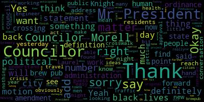
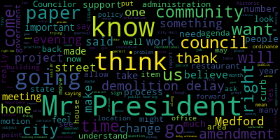
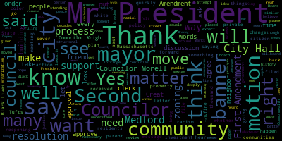
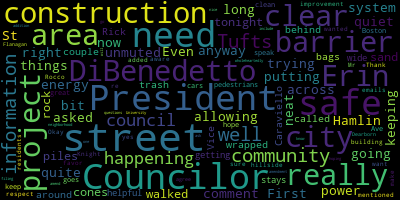

AI-generated transcript of City Council 07-28-20
English | español | português | 中国人 | kreyol ayisyen | tiếng việt | ខ្មែរ | русский | عربي | 한국인
Back to all transcripts
[Falco]: Mr. Clerk, are you ready?
[Hurtubise]: I am ready, Mr. President.
[Falco]: OK, great. We'll begin. The 24th regular meeting of the Medford City Council will now come to order. Clerk Hurtubise, please call the roll.
[Hurtubise]: Councilor Bears? Present. Vice President Caraviello? Present. Councilor Knight?
[SPEAKER_55]: Present.
[Hurtubise]: Councilor Marks? Present. Councilor Morell? Councilor Morell? I saw her in here. Councilor Scarpelli is present. President Falco. Present. I know I saw Councilor Morell. I saw Councilor Morell. Yeah, I just didn't hear her.
[SPEAKER_42]: Has she been made a host so that she can shut her mute off?
[Hurtubise]: She's been made a co-host. Yes.
[Morell]: Sorry, I just, I got kicked out. I'm back.
[Hurtubise]: Oh, sorry. Welcome back. I'll take that as present.
[Falco]: I am present. All seven members are present. At this point in time, I ask everyone to please rise to salute the flag.
[SPEAKER_32]: I pledge allegiance to the flag of the United States of America, and to the republic for which it stands, one nation, under God, indivisible, with liberty and justice for all. Thank you.
[Falco]: This is being broadcast live on channel 22 for Comcast and channel 43 on Verizon. Pursuant to Governor Baker's March 12, 2020 order suspending certain provisions of the Open Meeting Law, General Law, Chapter 30A, Section 18 and the Governor's March 15, 2020 order imposing strict limitation on the number of people that may gather in one place, this meeting of the Medford City Council will be conducted via remote participation to the greatest extent possible. Specific information and the general guidelines for remote participation by members of the public and or parties with the right and or requirement to attend this meeting can be found on the City of Medford website at www.medfordma.org. For this meeting, members of the public who wish to listen or watch the meeting may do so by accessing the meeting link contained herein. No in-person attendance of members of the public will be permitted, but every effort will be made to ensure that the public can adequately access the proceedings in real time via technological means. In the event that we are unable to do so, despite best efforts, we will post on the City of Medford or Medford Community Media website an audio or video recording, transcript, or other comprehensive record of proceedings as soon as possible after the meeting. I want to thank everyone for attending tonight. We have a number of hearings tonight. Hearings 20-381. This is a notice of a public hearing, legal notice, City of Medford, Massachusetts, Medford City Council Chapter 94 zoning. The Medford City Council will conduct a public hearing on Tuesday, July 28, 2020 at 7 p.m. via Zoom remote videoconferencing relative to the petition by Mayor Breanna Lungo-Koehn to amend Chapter 94 Zoning, Chapter 94-148D, Table of Use Regulation for Use 18, multiple dwelling not over three stories in height, in Use 19, multiple dwelling not over 75 feet or six stories in height. Will use 18 or 19 is presently allowed by right, yes. The proposed amendment would require a special permit from the city council, SPC, requiring that at least 25% of the total gross floor area of the development contain non-residential uses permitted by right, of which are authorized pursuant to a special permit in the underlying zoning district where relevant overlying zoning where relevant overlying zoning districts. As drafted, the amendment would take effect in the APT-1, APT-2, APT-3, and C-1 in MUZ zoning districts. The full text of the amendment may be viewed in the office of the city clerk at Medford City Hall, room 103, or the city's website at http://www.medfordma.org. slash community development by clicking on the current CD board filings. A Zoom link for this meeting will be posted no later than July 24, 2020. So at this point in time, I would declare the, actually, if I may, this paper did go to the, actually, Let me just read the rest of this, if you could give me a second. To participate remotely outside of the virtual platform, questions and comments may be submitted via email to ahertubise, that's A-H-U-R-T-U-B-I-S-E, at medford-ma.gov. For accommodations, call 781-393-2425. TTY 7813932516 pursuant to Governor Baker's March 12, 2020 order suspending certain provisions of the Open Meeting Law, General Law, Chapter 38, Section 18 and the Governor's March 15, 2020 order imposing strict limitation on the number of people that may gather in one place This hearing of the Medford City Council will be conducted via remote participation to the greatest extent possible. Specific information and the general guidelines for remote participation by members of the public and or parties with the right and or requirement to attend this meeting can be found on the City of Medford website at www.medfordma.org. For this meeting members of the public who wish to listen or watch the meeting may do so by accessing the meeting link contained contained to be posted not later than July 24, 2020, no in-person attendance of members of the public will be permitted, but every effort will be made to ensure that the public can adequately access proceedings in real time via technological means. In the event that we are unable to do so, despite best efforts, we will post on the City of Medford or Medford Community Meeting website an audio or video recording, transcript, or other comprehensive record of proceedings as soon as possible after the meeting. By order of the Medford City Council, Adam L. Hurtubise, City Clerk, this was advertised in the Boston Globe July 13th and July 20th, 2020. We also have received correspondence from Andre LaRue, who's the chair of the CD board. That's dated July 20th, 2020. And I'm going to read that now, that's regarding Council Resolution 20-381, Proposed Amendment to Chapter 94 Zoning, Section 94-148D, Table of Use Regulations for Use 18, multiple dwelling not over three stories in height and Use 19 multiple dwelling not over 75 feet or six stories in height to require at least 25% non-residential uses. Following the duly advertised public hearing conducted on June 18, 2020, in July 16, 2020, the Community Development Board voted to recommend that the Medford City Council adopt the proposed amendment In the commercial 1, C1 in mixed-use zones, MUZ zoning districts, with the following changes. For the proposed footnote to use 18 and use 19, number 3, remove the words 25% of the total floor area and replace with the first floor. Two, for the proposed footnote to use 18 and use 19. Number three, add the following language after the words overlying zoning district or business or professional office retail sales. Consumer service business or eating place as defined in section 94-2 definitions. Following considerable discussion, the Community Development Board made no recommendation on the proposed amendment to the APT apartment one in APT, apartment two zoning districts. Thank you for your consideration of these recommendations. Audrey LaRue, chair. At this point, I declare this public hearing open. Would anybody like to speak in favor? Anyone like to speak in favor of the petition? Yep, let's see, we have Chief of Staff, Dave Rodriguez.
[Dave Rodrigues]: Thank you, Mr. President, and sorry, I was looking for the raise hand function, I couldn't find it, so I just did it the old fashioned way. I appreciate the comments that were made by the Community Development Board, their careful consideration that was made after a number of meetings that were constructive and of thoughtful and very substantive. And the mayor agrees with the changes that are recommended by this community development board. She thinks that it achieves the policy objectives that were put forth and spurred off a good conversation that happened at the city board at that time. So we hope the council will give it careful consideration as well.
[Falco]: Thank you, Mr. Rodriguez. Would anybody else like to speak in favor of the petition? Okay, seeing and hearing none, I declare this portion of the hearing closed. Now I open this up to anyone in opposition of the petition. Is there anyone in opposition that would like to speak?
[Caraviello]: Mr. President, I see someone has a hand up. Navarre?
[Falco]: Yes, Will. Okay. One minute, please. Please have your name and address for the record.
[Navarre]: Thank you, Mr. President. I hope you can hear me. Great. William Navarre, 108 Medford Street, apartment 1B. The goal as I understand this, Mr. President, and I might not be super familiar with the changes. I'm not sure if we're still considering whether or not it'll be an apartment one and an apartment two, but I'm commenting as if it is that. The goal as I understand it is to increase the commercial tax base. I have major equity concerns with that. The present system of taxation gives a discount to housing owners, by taxing housing land and housing improvements at a lower rate than ones that are commercial. However, on the other side of that, it provides an incentive to create housing that housing seekers will enjoy. And this seems to subvert that. housing owners continue to get their discount. And it's really tough for housing seekers to have supply built for them because you got to put in commercial in order to do that. So I'm a little bit concerned that this is going to hamper housing production. All right. And I would suggest the alternative proposal that if the city wants to see more commercial go in, they consider removing that disincentive to commercial, the higher mill rate, which encourages you to put in housing rather than commercial. You can just look at some of the assessments, Mr. President. You can see that even though the bill rate is nominally higher in commercial, you can see that as a relation to land value, this is sort of what you start with and you hope they build up. You can see that the commercial properties often pay a smaller ratio of their land value in taxes. And that's because some commercial is not very developed. An obvious example would be on Mystic Avenue. But the new housing is, of course, well-developed, with lots of assessed improvements at each dollar of assessed land value. Even at Wellington Plaza, where it's legitimately developed, it's not an empty lot, at 760 Fells Way, I think that's where the stop and shop is, sort of that wing of the plaza. They pay less as a ratio of land value than the housing across the way at Five Cabot. You might say that's a luxury development, but that means that they're paying a lot of improvement taxes. So when you get down to it, if you want to extract more from commercial, you can often do that just by having a flat land value tax, where you don't tax extra for the homeowners and the apartment owners for having buildings, you tax based on the value of the land that they deprive to others. And since the rate is flat, and no matter what you put there, you pay the same amount of tax, that creates a free field with no favor. All right. Thank you. We're going to take away the incentive to leave land unproductive, vacant or blighted. The tax would furthermore encourage the owners of land on Mystic Avenue to sell it or develop it. And that's true whether or not the city decides to rezone it residential. They don't have to pay much taxes right now. They can wait and wait and wait until you rezone it residential. And some people don't want to do that and that's fine. They got to do something. A land value tax doesn't even need to be a sudden and abrupt change that's got to cause chaos or anything. You can do it slowly. Maybe one year the taxes are going up a bit. You put all the increase on the land. Maybe they're going down a bit. You take off the decrease off buildings. So it doesn't have to be a sudden change that shocks the system. We need, and I should say that generally when you do that, homeowners, especially lower income homeowners and lower income neighborhoods generally get more of a tax break and less of a tax hike when you do it that way, rather than flat on each. So it's not through this, the increase for homeowners, it's usually a decrease. We do need more commercial city of Medford, but we also need more housing in the city of Medford. And we can get more of both by removing the tax break for those who hold land out of use in the form of parking lots, vacant lots, and low intensity businesses like the sprawling large car dealerships that are really glorified parking lots on Mystic Avenue. That's how we can get more commercial in our city. That's how we can get more housing in the city by using the land productively, by removing the discount for blight. and waste, and most of all, speculation as you wait for the city to improve around you to become richer or for the city council to rezone. They should build what it's zoned for, they should build commercial Mystic Valley, and they shouldn't be holding land hostage waiting for that. Thank you, Mr. President.
[Falco]: Thank you, Mr. Navarre. Let's see, we have... Name and address for the record, please.
[Catalo]: Hello Kelly Catalo, 46 Otis Street in Medford on I understand that we need to do zoning changes, Mr. President. But first of all, I don't think that this should be happening in the middle of the summer and the middle of a pandemic when we can't even all be in the same room. There are people that wanted to be part of this meeting tonight, but they can't communicate via a screen. So if at some point you decide to put this off to another date, there are people that have valuable information to add to this that would like to be in the council chambers and do so in person. What I will say is the way that this is written to bring commercial into apartment 1, apartment 2, or apartment 3 zones, I will tell you some of the apartment 1 zones. If you're going up Oakland Street, which is across the street from City Hall, that's all houses. But the right side of that is apartment 1 zoning. If I lived up there, I would not want stores or commercial property put in there. If you go down Riverside Avenue underneath the bridge from Medford Square, The right side of that is apartment one zoning. I wouldn't want stores all over there. When we go down Main Street in Medford, we're talking apartment one and apartment two zones, and it just doesn't work for that. As far as the mixed use zoning districts, Medford Square, we've been asking for mixed use zoning for 30 years. I would love for that to be part of this amendment here. that we can have apartments as well as commercial. And it's not that we're trying to take away things, but we have a lot of vacant storefronts across our city, and you're going to see a lot more due to COVID in people working from home. I love the recommendations from the Community Development Board, except for one. I don't think that you should require the commercial to be ground level, because maybe the commercial piece is something that's on the same lot, like what we're seeing across the street from Wegmans, We still have a bank on the lot. Maybe that bank makes up that 25% that is needed in that zone. The other thing that we're seeing is a lot of the apartment houses and the complexes that are being built are talking with companies like WeWork, and maybe that's on the sixth floor, but it's a level of commercial property for people to be able to work at home. Thank you. Thank you.
[Falco]: Anyone else against? In opposition? Okay, we have Derek Anderson. Name and address for the record, please.
[Anderson]: Oh, Derek Anderson, 16 Myrtle Street. Thank you, Mr. President. I am against this proposal. I would like to second a lot of what Kelly has just said. Mixed use is very important for our community. Adding more commercial is very important. I love the idea of having commercial in some of those apartment zones and commercial zones that are affected by this amendment. I'm thinking particularly along Salem Street, a great place for it. But there are places that are affected by this amendment. Kelly's mentioned a number of them. I think Riverside Ave, everything along Riverside Ave from downtown Medford to Locust Street, from Riverside Ave to the river would be affected by this. So there would be no multi dwelling apartments greater than two units, unless it's an attached single family home that would be allowed in that entire section of town from now on, unless they put in 25% commercial. There just aren't developers out there that are going to build that kind of stuff. This is a ban on multi-dwelling housing in a number of areas of our city. It's completely inappropriate to try to have this sort of quick fix zoning amendment to what is really begging for a comprehensive zoning process. And I know that our community development group is doing a housing plan. resilience plan, they're going out for comprehensive planning, all those things can feed into real zoning reform, and I'm optimistic that that can happen. But we need to let that process unfold. This kind of quick fix is going to have lots of unforeseen issues. And I'm extremely concerned, particularly that there's a requirement for city council to approve, case by case, every single application that's proposed for multi-dwelling. That's a huge change from where we're at right now. It's totally inappropriate to put city council in that place. I assume that you guys don't wanna be put in that position. I certainly wouldn't wanna be put in that position of having politics inserted into every single application. And it's just the wrong way to go about this. Point of information Councilor Knight.
[Knight]: This is a public hearing in favor or against. It should be ended. We have 35 items on the agenda. If we allow the dialogue to continue for four or five minutes on every item on the agenda this evening, we're going to be here until tomorrow morning. I appreciate what Mr. Anderson has to say and I agree with him. I'm not going to be supporting the zoning amendment this evening. I'm going to vote to reject it. for the reasons that I stated when it was introduced. However, in the interest of getting through the agenda, Mr. President, I think it might be important for us to maybe limit the time of public participation this evening. We have 35 items on the agenda.
[Falco]: Okay, Councilor Knight. Derek, did you want to conclude?
[Anderson]: Sure, and I appreciate your position, Councilor Knight, and I apologize for taking a lot of time. I am passionate on this. I'll just conclude, it's inappropriate to have City Council involved in this. This is a citywide ban that's totally inappropriate. This is not the way to do it. We do need commercial. I like the intent, but the implementation is wrong, and I'm against this.
[Falco]: Thank you very much, appreciate it. Is anyone else in opposition of this? Anyone else in opposition that would like to speak?
[Knight]: Motion to close the public air.
[Falco]: We have one more person. Let's see you, Roberta Cameron. Would you like to speak?
[Cameron]: Yes, thank you. I just wanted to mention one thing that I'm concerned about the the the uses that would be allowed within those districts are not necessarily the uses that are compatible with our vision of what mixed use looks like. It's that the underlying commercial uses that would be required to be located, co-located with commercial, with residential buildings are not necessarily the uses that would be compatible with that type of building. So I just wanted to add that to the argument.
[Knight]: Was that opposed, Mr. President?
[Cameron]: Yes, opposed.
[Knight]: Thank you.
[Falco]: Thank you, Roberta. Is there anyone else in opposition? Anyone in opposition that would like to speak? OK. Hearing and seeing none, I will this portion of the hearing close. Now I'll ask if the council has any questions or comments that they'd like to make.
[Knight]: Motion to reject the zoning amendment, Mr. President.
[Falco]: Okay, on the motion of Councilor Knight to reject the zoning amendments.
[Scarpelli]: Second, Council President.
[Falco]: Seconded by Councilor Scarpelli. Any questions from the Council?
[Marks]: Mr. President?
[Falco]: Yes, okay, Councilor Marks.
[Marks]: Thank you, Mr. President. You know, we are in the process, as many residents know, we hired an attorney to help us with our review of our zoning ordinances that haven't been reviewed in over 30 years. I think many people in this community realize that there are many changes that need to happen, many updates. And I would agree with some of the previous speakers that we really do need to look at a comprehensive amendment. And I appreciate the fact that the mayor is trying to put forward what she believes is in the best interest of the community. However, I'd like to look at a total picture when I arrive at a decision, and I don't believe this arrives at that. There is an issue, Mr. President, I've raised on many times. before the council and regarding zoning is the fact that we're seeing many buildings pop up that have very little community feel and community impact other than providing additional housing. And I've always stated, Mr. President, that we have to make sure that we're not just creating big blocks residential places that really have no community feel. So whatever I do as a member of the council, I'm going to be cognizant of the fact that I will be mindful of adding a component, like we mentioned about mixed use and so forth, and whatever votes I take, Mr. President.
[Falco]: Thank you, Councilor Marks. Any other questions or comments from the council? Councilor Bears.
[Bears]: Thank you, Mr. President. Just that I think Derek said it very well and Councilor Marks as well. I'm supportive of some of the ideas around this, but I want to see it happen as part of a larger process.
[Falco]: Thank you, Councilor Bears.
[Rodriguez]: Any other questions from the council?
[Falco]: Okay. On the motion of Councilor Knight, seconded by Councilor Scarpelli to reject this to reject the zoning amendment. Clerk Hurtubise, please call the roll.
[Hurtubise]: Mr. President, I just want to clarify. A yes vote on this motion is a vote to reject. Is that correct? You are correct. Here comes the roll call. Councilor Bears? Yes. Vice President Caraviello? Yes. Councilor Knight?
[Knight]: Yes.
[Hurtubise]: Councilor Marks? Yes. Councilor Morell? Yes. Councilor Scarpelli? Yes. President Falco?
[Falco]: Yes. Seven in the affirmative, zero in the negative, the zoning amendment has been rejected. Notice of a public hearing, 20-042 legal notice, City of Medford, Massachusetts, Medford City Council, chapter 94, zoning. The Medford City Council will conduct a public hearing on Tuesday, July 28, 2020, at 7 p.m. via Zoom remote video conferencing relative to a petition by the Medford City Council to amend chapter 94 zoning revised ordinances of the City of Medford to allow to allow for and regulate adult-use marijuana establishments in the city of Medford with an aim to minimize any adverse impacts that marijuana establishments may have on adjacent or nearby properties and to provide standards for placement, design, siting, safety, security, modification, and discontinuance of central establishments subject to reasonable conditions that protect public health. safety, and welfare. The full text of the amendment may be viewed in the Office of the City Clerk, Medford City Hall, Room 103, or on the city's website at http://www.meffittma.org slash department slash community development by clicking on the current CD board filings. A Zoom link for this meeting will be posted no later than July 24th, 2020. This was advertised in the Boston Globe on July 13th and July 20th. We have actually since received a response from the CD board and from Andre LaRue, the chair, dated July 22nd, 2020. regarding Council Resolution 20-042 proposed amendment to Chapter 94 zoning to allow for and regulate adult use marijuana establishments. Following a duly advertised public hearing conducted on July 16, 2020, the Community Development Board voted to recommend that the Medford City Council adopt the proposed amendment with the following changes. Number one, more specificity be added to the ordinance relative to allowed locations for marijuana establishments, including a revision of section 94-148D table of regulations. And number two, consideration of drafting edits contained in the attached document. Thank you for your consideration of these recommendations. And that's from Andre Leroux, the chair of the CD board, the Community Development Board.
[SPEAKER_42]: Mr. President. Motion to continue the public hearing to a date certain following a committee of the whole meeting with the Community Development Board to go over the recommended changes.
[Falco]: Thank you, Councilor. On that motion, Councilor Scarpelli.
[Hurtubise]: I have Councilor Knight's motion as a, hang on, as a motion to continue the hearing to a date certain for meeting in Committee of the Whole with members of the Community Development Board to go over the proposed changes.
[Knight]: Yeah, so I'm following a meeting of the Committee of the Whole.
[Hurtubise]: Okay, hang on.
[Knight]: I would assume that can be done between now and our next regularly scheduled meeting, Mr. President.
[Falco]: Yes, that's what I will be aiming to do.
[Hurtubise]: Okay, following a meeting with the committee, in committee of the whole with the community development board.
[Knight]: Or representative thereof, whoever wants to go over these changes, Mr. President.
[Falco]: Okay, do you have that councilor, Clerk Arteries?
[Hurtubise]: Yes, I do.
[Falco]: Okay, let's see, we have a question from Councilor Bears, Councilor Bears.
[Bears]: Just if President Falco or Councilor Knight, do you know where we are on the ticking clock on this zoning change? Is there a date?
[Falco]: I did check with City Solicitor Scanlon today. We have 90 days from when the hearing opens. So today, but this is something that I think really needs to be addressed sooner than later. We've been working on this for a while. So I'll be aiming to set up a committee, the whole, as soon as possible.
[Bears]: Great. And both taking COGS legal and just, we need to get this done. Thank you, Mr. President.
[Hurtubise]: Thank you. Mr. President, my understanding is that if it's continued to a date certain and you actually name the date, it also does not have to be re-advertised. Okay.
[Knight]: I would move to name the date as the next regularly scheduled city council meeting, Mr. President.
[Falco]: That sounds good to me, which would be- 28th of August. Again, August 25th. 25th.
[SPEAKER_55]: Mr. President.
[Marks]: Councilor Marks. I would also ask that KP Law be invited for advice as well as the acting city solicitor. Absolutely. They've both been instrumental in- Councilor Marks, is that an amendment? If you want that in the form of amendment, that's fine. I'll use it as an amendment.
[SPEAKER_55]: Seconded, Mr. President.
[Knight]: Or you can add it as part of the main motion, so we don't have to vote on it twice.
[Falco]: That's fine. On that motion by Councilor Knight, seconded by Councilor Scarpelli.
[Knight]: As amended by Councilor Marks.
[Falco]: As amended by Councilor Marks to continue the hearing to a date certain, which would be August 25th. But we will have a committee the whole meeting before that meeting to discuss the changes.
[D'Antonio]: So moved.
[Falco]: On that motion by Councilor Knight, seconded by Councilor Scarpelli. Clerk, please call the roll.
[Hurtubise]: Councilor Bears? Yes. Vice President Caraviello? Yes. Councilor Knight?
[Knight]: Yes.
[Hurtubise]: Councilor Marks? Yes. Councilor Morell? Yes. Councilor Scarpelli? Yes. President Falco?
[Falco]: Yes. Seven in the affirmative, zero in the negative. The motion passes. 20-478, notice of a public hearing. Petition for grant of location, Tufts University, Medford, Massachusetts, electrical transmission line. Medford, Massachusetts City Clerk's Office, you are hereby notified that by order of the Medford City Council, a public hearing will be given via Zoom at 7 p.m. on Tuesday, July 28th on a petition of Tufts University for permission to install an electrical transmission line beneath Boston Avenue near the intersection of College Avenue and to locate poles, wires, and fixtures, including the necessary sustaining and protecting fixtures along and across the public way herein named said poll locations to be located substantially in accordance with the revised plan marked Boston Avenue. Menford, Massachusetts will be filed in the Office of the City Clerk on June 4, 2020. A Zoom link for this meeting will be provided no later than Friday, July 24, 2020. Wherefore, it prays that after due notice and hearing, as provided by law, it be granted a location for and permission to erect and maintain poles and wires, together with such as standing and protecting fixtures as it may find necessary, said electrical transmission line be erected substantially in accordance with the revised plan marked Boston Ave, Medford, Massachusetts, and available for inspection in the office of the city clerk, Medford City Hall, room 103, 85 George P. Hassett Drive, Medford, Massachusetts, 02155. Also, for permission to lay and maintain underground laterals, cables, and wires in the above or intersecting public ways for the purpose of making connections with such poles in buildings as each of said petitioners may desire for distributing purposes. The following are the streets and highways referred to. Boston Avenue in the vicinity of the new power plant building near the intersection of College Avenue. Location approximately as shown on plan filed in the office of the city clerk. This was approved by the city engineer with the following conditions. The engineer division recommends that the grant of location be approved with the following conditions. One, the grant of location, GOL, is limited to approximately 60 feet of electrical transmission main described in the GOL document as follows. Number two, excavation of Boston Avenue is an installation and maintenance of eight by six underground electrical conduits and wires together with such sustaining and protecting fixtures as may be necessary for the transmission of electricity under and across Boston Avenue, a public way approximately 500 feet north of the center line of the intersection of Boston Avenue and College Avenue, said location request. touched athletic utility district, Medford, Massachusetts, and filled, filed in the office of the city clerk the plan. The work consists of installing approximately 55 linear feet of electrical duct bank to an electric manhole as shown on the plan and to connect to conduits of petitioner's property and property of the Massachusetts Bay Transportation. Number three, before starting work, the contractor shall notify DIGSAFE and shall obtain all applicable permits from the engineering division. The project must obtain a street opening permit pursuant to section 74-141 of the city ordinances prior to commencing work. The SOP application must include a proposal for temporary and permanent street restoration to be considered as a condition. Please see additional comments below on street restoration. The SOP application must also include a traffic management plan. Number four, no other utility structures, conduits, duct banks, pipes, or other appearances are adversely impacted. Tufts shall ensure that all sewer, water, and drain lines are marked prior to any excavation. Any disturbed concrete sidewalk panels shall be replaced in kind. Asphalt must be replaced with asphalt. Five, the sidewalk and street temporary and permit restoration shall be done in consultation with the engineering division and per the requirements. of an approved street opening permit. The recent resurfacing of Boston Avenue stopped short of this location due to the anticipated and ongoing construction related to both Tufts University projects and the Green Line Extension project. Also, the City of Medford intends to add a pedestrian crossing in this vicinity using funds obtained from the MBTA related to mitigation for the GLX project. The engineering division recommends that in lieu of performing final street restoration, a contribution be negotiated and agreed upon with the city engineer that approximates the construction cost value of finished street restoration. The cost should take into consideration. in consideration roadway mill and overlay restoration with a curb-to-curb offset of 25 feet, including setting curb stones and sidewalk restoration and mill and overlay restoration encompassing Tufts University utility patches from the intersection of College Avenue to the limits of Dolan Hall. This contribution will go towards final resurfacing of this section of Boston Avenue. This will provide a consistent final pavement surface along this section of Boston Avenue. Number six, pavement markings must be restored. Number seven, the project site must be swept daily and shall be kept free of debris for the duration of the installation. Number eight, a copy of the MWRA permit and associated plans must be submitted to the engineering division prior to releasing a street opening permit. Number nine, the plan indicates open trench construction There is existing concrete barrier structure and cable guardrail that must be removed for the installation of the transmission line. These two elements should not be replaced. The engineering division recommends that the petitioner coordinates sidewalk surface restoration with the Greenline Extension Project as there is sidewalk scope for that project on the east side of Boston Avenue. Any temporary restoration must meet accessibility standards. The sidewalk on the west side is likely to remain and should be permanently restored to concrete upon completion of the crossing. Approved by the Superintendent of Wires, call 781-393-2425 for any accommodations and or aids. Plans can be reviewed at the City Clerk's Office, 781-393-2425, Adam L. Hurtubise's City Clerk. I declare this public hearing open, open to those in favor of the petition. Is there anyone that would like to speak in favor of the petition? Rocco, I'm trying to unmute you now. Oh, there we go. Name and address for the record, please.
[DiRico]: Rocco DiRico. Work address is 14 Capen Street in Medford at Tufts University. Thank you, Mr. President. Thank you, members of the City Council and neighbors. My name is Rocco DiRico. I'm the Director of Government and Community Relations at Tufts University. We are here to seek a grant of location permit to connect a new academic building that we're building, the Cummings Center. to our central energy plant. This is a utility connection for the Cumming Center. As some of you may know, Tufts University has set the ambitious goal of being carbon neutral by 2050. So we've built our own central energy plant to help with that goal. And what we'd like to do, if approved, we'll dig a trench underneath Boston Avenue to lay conduit cables connecting the central energy plant to the Cumming Center. This also has the additional benefit of connecting Halligan Hall, Cousins Gym, the Tisch Fitness Center, and Gancher to our central energy plant, as the other buildings on our campus are attached to. If approved, the project can start in August and will take about three to four weeks. The working hours will be normal working hours, Monday through Saturday, between 7 AM and 6 PM. Boston Avenue will remain open. There may be times when we need to close one lane and close the other lane, but it will remain open. throughout the project. Our goal is to complete the project before Labor Day, before schools reopen and there's increased traffic in the area. We've had a robust communications plan for the Cummings Center, and this is part of the project. We've had eight community meetings on this project. We have a public website for the project. I meet with a neighborhood working group that's made up of neighbors once a month. We also send monthly email updates to our neighbors. I've had several meetings, phone calls, and emails to neighbors about this project. And on this particular grant of location request, I have called and or emailed everyone on the abutters list in preparation for tonight's meeting. I am joined tonight by Ruth Bennett, who is our director of strategic capital programs. And we also have our contractors here tonight, council or the audience have any questions about the project.
[Falco]: Thank you, Rocco. Is there anyone else that would like to speak in favor of this project? Yes.
[Rodriguez]: If you could please have your... Aaron, I'm trying to unmute you. There we go.
[SPEAKER_42]: Everyone must hate this. She can't talk. She's being muted. This is the first time it's happened.
[Falco]: What everyone's like, I'm trying to unmute you. It doesn't seem I gotta go.
[Caraviello]: Okay.
[Rodriguez]: Oh, no. Are you trying to unmute? No. Okay. Thank you, everyone, for your patience.
[Knight]: Mr. President, this is the public hearing portion. It's either opposed or against, right?
[Falco]: Yeah. Is there anyone else that wants to speak in favor of this project? Erin, I can't get you to, I'm trying to unmute you and it won't let me. Erin.
[Bears]: Something should come up on your screen when he presses the button that says unmute. There you go, you're unmuted.
[DiBenedetto]: You're unmuted. I was trying to do that. It wasn't allowing me and then they asked me not to. But anyway, Erin DiBenedetto, 21 Hamlin St. First of all, I'm all for putting more of the energy through their power system as long as it's quiet, and it has been for quite a bit. I also need to comment that the construction that's going on up across right now, they're not being neat with keeping things off the street. Even tonight as I walked by, there was piles of sand and rock in the street with cones wrapped around it. and some trash bags behind a barrier that really doesn't, that barrier doesn't need to be there. I've called a couple of city Councilors and Vice President Rick Caraviello has been very helpful in getting them to clear that area so the street stays wide and safe for both pedestrians and cars.
[Falco]: I apologize for interrupting, but we need to keep on topic with this project here.
[DiBenedetto]: It goes to speak as just when they're doing the Boston Ave project, I hope that they keep that area safe and clean as they do it. It's a great improvement for their community, but while they're building, they need to be aware of the hillside community. Also, I would like to be re-added to the emails that Rocco mentioned. I just want to be clear that not all- What information, Mr. President?
[Falco]: What information, Councilor Layton?
[Knight]: This is a public hearing. It's either we're in opposition or we're in favor of the project. We go, again, I understand we're coming from Marion, but we have 35 items on the agenda. If we continue down this road, we're going to be here all evening. The common practice that's always been with the council has been public hearing in favor or opposed. When we've had people come to the podium in the council meetings, we've told them, Stop, public hearing in favor or opposed.
[DiBenedetto]: Okay, I respect that Councilor Knight. I just wanted to make sure that the project is safe for the residents as well. So yes, I'm in favor.
[Falco]: Perfect, thank you very much Sharon. Does anybody else that would like to speak in favor of the project?
[Ruma]: Thank you very much. My name is Laurel Ruma. I live at 149 Burgett Avenue, directly behind the current Cummings building and the proposed construction. So I had a number of qualifying questions that needed sort of a quorum to be answered, including, I'm assuming Tufts now has permanent access easement under Boston Avenue, and I'd like to know what payment structure the university worked out with the city for that permanent access.
[Knight]: Mr. President, I do believe granted locations and personal property tax are attached to any type of grant location in the underground infrastructure that they put in through the assessor's office. And I do believe that that itemization is determined after they complete the work and construct what it is that they need to construct so that we can tax it appropriately.
[Ruma]: Okay, so I understand that also the payment for the new sidewalks will be deferred and so the green line construction is put in. I would just like to make the point that this neighborhood does need very specific enhancements, including dead end signs. We need a parking mitigation plan, but most importantly, we would like Tufts to withhold some of that money and buy curtains or blinds or drapes for the building so the lights don't shine into the neighborhood. As of now, we're already looking at a massive light pollution, and it only has construction lights up. So I just want to make clear that the neighborhood is very aware that this is a continual encroachment and building of the Tufts so-called athletic utility district and we are still the rest of the city living here. So we too would like attention paid to this neighborhood.
[Falco]: Thank you very much. Is there anyone else that would like to speak in favor of the petition? Hearing and seeing none, I declare this portion of the hearing closed. Is there anyone that would like to speak in opposition of the petition? Anyone in opposition? Hearing and seeing none, I declare this portion of the hearing closed. Are there any questions from the council? Yes, Councilor Morell.
[Morell]: Thank you, Mr. President. Rocco, thanks for being here. And I know we talked yesterday about this, but I just wanted, if you could address just for the public and the rest of the councilors how the anticipated length of this work and project from start to finish.
[DiRico]: Thank you, Councilor Morell. Sorry, after six months of Zoom, I'm still figuring this out. But yeah, so we anticipate a total project to take three to four weeks once we can begin. And as I said, it'll be all normal working hours during the day and only Monday through Saturday as is typical working hours in Medford.
[Morell]: Okay, thank you.
[SPEAKER_32]: Any other questions from the council?
[Knight]: Mr. President, I do believe Councilor Scarpelli has a question.
[Falco]: Oh, I'm sorry, Councilor Scarpelli.
[Knight]: He's muted.
[Falco]: Oh, let me find him.
[Knight]: Good luck.
[Falco]: That's what I was going to say. Actually, he's right here. Councilor Scarpelli.
[Scarpelli]: Thank you, Mr. President. There were some questions that when I asked, it was already taken care of. So thank you.
[Falco]: Okay, thank you.
[Marks]: Mr. President.
[Falco]: Councilor Marks.
[Marks]: Thank you, Mr. President. I would ask that the city of Medford and Tufts University put together a list of contacts for area residents, a clerk of the work that would be responsible for the project, and any questions that residents may have.
[Falco]: Would you like to add that as an amendment? Okay, yes. Okay, any other questions?
[Hurtubise]: Councilor, I'm sorry, Clerk Hurtubise. I'm still working on Councilor Marks' amendment. Councilor Marks, you're asking the Tufts and the city put together a list of, and I lost you there, it got a little garbled on my end.
[Marks]: A list of project contact names and numbers, as well as the city of Medford to have a clerk of the works that is responsible for the project. And I know Mr. DeRico said he has a list of abutters and so forth. I'm sure he can disseminate some information that way and the city can also add it to its city website and local community access as well. So residents know that they have a place and a person to talk to if need be.
[Hurtubise]: Okay.
[Falco]: Thank you, Councilor Marks. Let's see, Vice President Caraviello.
[Caraviello]: Thank you, Mr. President. Mr. President, and I think Mr. Benedetto spoke earlier on the concerns about keeping the sidewalks and equipment clear from the work area. So if you could make sure that gets done too, it would be appreciated.
[DiRico]: Yes, Councilor.
[Falco]: Thank you, Vice President Carmielo. Any other questions from the council?
[SPEAKER_41]: Move for approval as amended, Mr. President.
[Falco]: On the motion of council tonight to approve as amended by Councilor Marxie and seconded by?
[Hurtubise]: Second.
[Falco]: Councilor Bears, Clerk Hurtubise, please call the roll.
[Hurtubise]: Councilor Bears.
[Bears]: Yes.
[Hurtubise]: Vice President Caraviello. Yes. Councilor Knight. Yes. Councilor Marks. Yes. Councilor Morell. Yes. Councilor Scarpelli. Let me see these on you, one minute.
[SPEAKER_50]: Yes. Perfect. President Falco.
[Falco]: Yes, 70 affirmative, zero in the negative. Motion passes.
[DiRico]: Thank you, Mr. President.
[Falco]: Thank you very much, Rocco. Notice of a public hearing, legal notice 20-479, petition for grant of location, National Grid Incorporated of North Andover, Massachusetts, and Verizon New England Incorporated, Medford, Massachusetts, City Clerk's Office. You are hereby notified that by order of the Medford City Council, a public hearing will be given via Zoom at 7 p.m. on Tuesday, July 28, 2020, on a joint petition of National Grid Incorporated and Verizon New England Incorporated for permission to locate poles, wires, and fixtures, including the necessary sustaining and protecting fixtures along and across the public way here and after name to be located substantially in accordance with the plan marked number 29567848 Winthrop Street, Medford, Massachusetts, April 4, 2020, and filed in the office of the city clerk on May 11, 2020. The Zoom link for this meeting will be provided no later than Friday, July 24, 2020. We are for a praise that after due notice and hearing as provided by law, it be granted a location for a permission to erect and maintain poles and wires gathered with such sustaining and protecting fixtures as it may find necessary. Set electrical transmission line to be erected substantially in accordance with the plan marked number 29567848. and available for inspection in the Office of the City Clerk, Method City Hall, Room 103-85 George P. Hassett Drive, Method, MA 02155. Also, for permission to lay and maintain underground laterals, cables, and wires in the above or intersecting public ways for the purpose of making connections with such poles and buildings as each of said petitioners may desire for distributing purposes. The following are the streets and highways referred to. Winthrop Street National Grid to relocate one J-O pole on Winthrop Street near Victory Park beginning at a point approximately 25 feet southwest of the center line of the intersection of Winthrop Street near Victory Park. Relocate number 265 on Winthrop Street, seven feet away to the Package of the sidewalk for the installation of Eversource facilities. No tree removal shall be required. Location approximately as shown on the plan filed in the office of the city clerk. This was approved by the chief engineer with the following conditions. Number one, the grant of location are limited to the relocation of one joint owned pole in the underground services associated with the pole relocation. Number two, before starting work, the contractor shall notify DIGSAFE and shall obtain all applicable permits from the engineering division. The project must obtain a street opening permit pursuant to section 74-141 of the city ordinances prior to commencing work. Number three, no other utility structures, conduits, duct banks, pipes, or any other apparatances are adversely impacted. National Group shall ensure that all sewer, water, and drain lines are marked prior to any excavation. Any disturbed concrete sidewalk panels shall be replaced in kind. Asphalt must be replaced with asphalt. Number four, the project site must be swept daily and shall be kept free of debris for the duration of the installation. Number five, the proposed work is located adjacent to Victory Park and its access points. National Green must coordinate with the Metro DPW Parks Division to maintain access to the park and mitigate impacts to the use of the park. Number six, the work is close to existing bollards and the plan does not indicate removal or replacement of bollards. The bollards shall remain in place. Number seven, There are multiple trees that have canopy that will be impacted by the relocation of the associated overhead wires. The contractor must coordinate any required tree trimming prior to start of work with the Method DPW tree warden. Number eight, the new pole location appears to be within the root zone of the adjacent tree. Protection measures for the tree roots must be coordinated with the Method DPW tree warden. Number nine, shutdowns associated with the service transfer for the pump station must be coordinated with the station owner. This is approved by the superintendent of wires. Call 781-393-2425 for any accommodations, aids. That's from Adam L. Hurtubise. Plans can be reviewed or viewed in the city clerk's office at 781-393-2425. I declare this public hearing open to those in favor of the petition. Anybody that would like to speak in favor of this petition? Do we have Verizon with us tonight?
[Hurtubise]: Mr. President, I notified National Grid, Vincent LoGiudice, he accepted the meeting and is aware. There's another National Grid grant location on tonight as well. So I'm not sure if somebody who is in the queue is representing National Grid or Verizon tonight.
[Falco]: Okay, is there anyone here on the meeting that is representing National Grid or Verizon?
[Knight]: Mr. President, I do think it's important to point out that this measure has been recommended by the city engineer. And as part of the Eversource project, I do believe that that area will be resurfaced curb to curb on the completion of the Eversource project. So I think that's something that's important to point out. If in fact there is any disruption or trenching that's done in that area, come completion of the Eversource project, it will be resurfaced curb to curb. I can certainly confidently vote for this paper this evening in approval. However, I would defer to the rest of the council as to what direction they want to take, whether they want to receive them at a table of matter or a table of matter until the applicant comes back is fine with me. That's been a normal practice in the past, but I'm comfortable voting on it this evening. I wish you good luck.
[Falco]: Thank you, Councilor Knight. Any other councilors who want to comment on this or make a motion?
[Marks]: Mr. President? Councilor Marks? Mr. President, as many residents are aware, we're undergoing a major infrastructure project going on right now with Eversource that's coming down Winthrop Street. And there's going to be much disruption to the area, as well as South Street and Mystic Ave. And I did have a couple of questions. using the existing trenches that will be dug by Eversource? Or will they be creating their own trenches? They also mentioned underground laterals and cables and wires. Is that going to be part of the extensive digging and trenching that Eversource is going to do for their electrical transmission? So I have a number of questions, Mr. President. I'm not sure if, you know, we don't meet until the end of August. So I'm not sure if time is of the essence. I don't know if we have our city engineer on tonight as well. I thought I may have seen his name. Mr. Clark, do you know if he's on?
[Hurtubise]: I do not see him, Councilor, but I'm scrolling through now.
[Falco]: We can, I mean, we can maybe, if you want, and I showed the representative from Verizon or National Grid is maybe having problems logging in. We can maybe table to the end of the meeting. I don't know if the clerk can reach out to him.
[Hurtubise]: I'm going to reach out right now.
[SPEAKER_41]: OK. Motion to table, Mr. President. Actually, motion to continue the public hearing. So August 25.
[Falco]: What if they show up in like 10 minutes?
[Marks]: Why don't we just move it to the end of the meeting? And then if they don't show up, Mr. President, I would agree with Councilor Knight. Because there's already a major project going on there, and I'm not sure the extent of this project. We don't know the hours of operation. We don't know if they're going to be working in conjunction with National Grid and Eversource. I really don't know anything about the project. So that's what I would ask, that we move this to the end of the agenda calendar.
[Falco]: Okay, so why don't we table this for now and hopefully someone from Verizon or National Group will log in and we can take it up towards the end of the meeting. So Council Member Marks, was that a motion to table? Motion to table, and then we can see if the city clerk can get a hold of someone.
[Marks]: Okay. Second, Vice President.
[Falco]: On the motion of Council Member Marks to table, seconded by Vice President Caraviello, clerk, please call the roll.
[Hurtubise]: Councilor Bears? Yes. Vice President Caraviello? Yes. Councilor Knight? Yes. Councilor Marks? Yes. Councilor Morell? Yes. Councilor Scarpelli? Yes. President Falco?
[Falco]: Yes, 70 affirmatives, you're on the negative. The motion is tabled.
[Hurtubise]: Mr. President, while you read the next hearing notice, I'm going to call National Grid, because they're also, I believe, on this next hearing. You are correct.
[Falco]: OK, notice of a public hearing. Legal Notice 20-480, Petition for Grant of Location, National Grid of North Andover, Massachusetts, Medford, Massachusetts City Clerk's Office. You are hereby notified by the order of the Medford City Council, a public hearing will be given via Zoom at 7 p.m. on Tuesday, July 28, 2020 on a petition of National Grid Incorporated for permission to locate poles, wires, and fixtures, including the necessary sustaining and protecting fixtures as it may find necessary for the transmission of electricity under and across a public way here and named to be located substantially in accordance with the plan marked number 2577-3968 Salem Street, Medford, Massachusetts, May 14, 2020. Resume link for this meeting will be provided no later than Friday, July 24, 2020. We afford praise that after due notice in hearing, As provided by law, it be granted permission to excavate the public highways and to run and maintain underground electric conduits together with such sustaining and protecting fixtures as it may find necessary for the transmission of electricity, said underground conduits to be located substantially in accordance with the plan marked number 25773968 Salem Street, Method, Massachusetts and available for inspection in the office of the City Clerk, Medford City Hall, Room 103-85, George P. Hassett Drive, Medford, Massachusetts, 02155. The following are the streets and highways referred to. Number 25773968, Salem Street, National Grid, to install approximately 25 feet of 2x4 conduit for existing manhole MH478B. on Salem Street Southwest to a 31 to 35 Salem Street. The conduit is for the purpose of providing electrical service to 35 Salem Street. Location as shown on plan filed in the office of the city clerk. Excuse me. This was approved by the chief engineer with the following conditions.
[Marks]: Mr. President, I would move that we suspend the reading of the remaining remainder in that this be placed and tabled with is not a representative from National Grid, that it be placed at the end of the agenda as well. Okay, on the motion of Council... Was there another comment?
[SPEAKER_42]: Just a second, Mr. President.
[Falco]: Oh, okay, I'm sorry. Okay, Council, on the motion of Council marks to table, seconded by Councilor Knight. Clerk Hurtubise, please call the roll.
[Hurtubise]: Hold on a second. Councilor Bears? Yes. Vice President Caraviello? Yes. Councilor Knight? Yes. Councilor Marks? Yes. Councilor Morell? Yes. Councilor Scarpelli? Yes. President Falco?
[Falco]: Yes. Seven in the affirmative, zero in the negative, the motion passes. Let's see. Let's see, well, before we begin, let's see if we have someone from Comcast with us tonight.
[SPEAKER_42]: You don't want to read that?
[Falco]: I don't mind reading it, but I figured I might as well ask. Let's see, Clerk Hurtubise, do you know if anyone from Comcast is on with us tonight?
[Hurtubise]: I know that David Flewelling is aware of the meeting and accepted the Zoom link.
[Falco]: OK. If there's anyone from Comcast, can you please raise your hand? Okay, I do not see anybody from Comcast. I'm not sure if you do. On the motion of Councilor Knight to table, seconded by Councilor Bears. Clerk, please call the roll.
[Hurtubise]: I'm sorry, motion to table? Councilor Knight. Seconded by Councilor Bears. Councilor Bears. Yes. Vice President Caraviello. Yes. Councilor Knight. Yes. Councilor Marks? Yes. Councilor Morell? Yes. Councilor Scarpelli? Yes. President Falco?
[Falco]: Yes. Seven in the affirmative, zero in the negative. The motion passes, the matter is tabled.
[Hurtubise]: Okay, I believe that was all the hearings, right, Clerk Hurtubise? I believe so. Hold on just a moment, let me just double check. Yes, we move on. The next item on the agenda is the motions, orders, and resolutions.
[SPEAKER_42]: Great, thank you. Mr. President, I withdraw paper 20483.
[Falco]: Okay, paper 20-483 has been withdrawn by Councilor Knight.
[SPEAKER_41]: Mr. President, I also withdraw paper 20487.
[Falco]: Okay, 20487 has been withdrawn by Councilor Knight. Thank you, Councilor Knight. Okay. Motions, orders, and resolutions. 20-484 offered by council all night. Be it resolved that the Medford City Council hold a committee of the whole to discuss the future of the Medford Fire Headquarters with the representatives from the Mayor's Task Force, Local 1032, and the Director, Finance Director, and Fire Chief. Council all night.
[Knight]: Mr. President, I find this is a rather self-explanatory resolution. What I'm asking for is a committee of the whole meeting with the administration and representatives of the fire department and the fire union to discuss the future of our fire headquarters, fire training tower, and the like, Mr. President. We've had many discussions over the past three or four years relative to these projects, and many commitments were made. And I just would like to see where we stand in this process. I know we face very trying and scary financial times right now, the picture isn't beautiful. However, I think it's important that we maintain some of the commitments that we made, and at the very least communicate with friends of the fire department as to where we stand, what's going on, and what commitments still remain on the table moving forward. So with that being said, I'd ask my council colleagues to support the resolution. This is really just an effort to get more information, to find out where we are from a capital planning standpoint related to fire safety services, Mr. President.
[Falco]: Did any councilors have any comments or questions regarding the resolution? Does the resolution have a second?
[Scarpelli]: Seconded, Mr. President.
[Falco]: I believe we have a second. Councilor Scarpelli, okay. Are there any questions or comments from the public regarding the resolution? Okay. Hearing and seeing none, on the, let's see, on the motion of Council Knight, seconded by Councilor Scarpelli. Please call the roll.
[Hurtubise]: Councilor Bears? Yes. Vice President Caraviello? Yes. Councilor Knight? Yes. Councilor Marks? Yes. Councilor Morell? Yes. Councilor Scarpelli? Yes. President Falco?
[Falco]: Yes. Sending the affirmative, zero to the negative, the motion passes. 20-485 be it resolved, I'm sorry, 20-485 offered by Councilor Knight, be it resolved that the City Clerk be directed per Section 2-592 of the Ordinances of the City of Medford to provide the Medford City Council with copies of any application filed with Article IV Site Plan Review Sections 94-331 through 94-336 of the Ordinances of the City of Medford within seven days of receipt thereof. Councilor Knight?
[Knight]: Yes, Mr. President, this is just a resolution providing a directive to the city clerk to forward us certain informations that come to his office. All too often, as a city councilor, you know, when you're down at CB Scoops getting an ice cream, someone will come up to you and say, hey, what's going on at this address or this location? You say, what are you talking about? I have no idea. And they say, well, there's doing construction over there. What's the story? Well, I've never received a paper on that. Pursuant to the way that projects are filed through site plan review, they have to be submitted to the clerk's office, Mr. President. So what this is is just directing the city clerk when any item that's subject to site plan review comes across his desk to include it in our council packets so that we're aware of it and then we can do our due diligence to be well informed about the certain projects that are going on. So what this is is asking the city clerk to provide us with information The city clerk was never directed to do this in the past, so what we're doing is just taking a step to ensure that we receive this information. I think Adam's doing a great job. This is no reflection on the work that he's doing. This is a new responsibility that we're tasking upon him, like we do probably every other week. We give him something else to do. I think pretty soon we'll have to look at giving this guy a raise or some more vacation time, Mr. President, if he's able to take it. being said, this is just an opportunity for us to gain information and gain certain documents related to projects that are being performed in our community that are subject to the site plan review. Those are the same projects that are also subject to our inclusionary housing ordinance. So I think it's very important, Mr. President, that we're aware of that before the shovel goes in the ground.
[Falco]: Well said. Thank you Councilor Knight. Let's see on the motion of Councilor Knight, seconded by
[Caraviello]: Second, Mr. President.
[Falco]: Seconded by Vice President Caraviello. Are there any questions or comments from the council? Any from the public?
[Morell]: Okay, hearing and seeing none, on the motion of councilor. I'm sorry? Sorry, President Falco, I see Laurel has her hand up. Oh, yes, I'm sorry. Let's see.
[Falco]: Laurel, there you are. Apologize. I'm gonna try to unmute you. There you go. Name and address for the record, please.
[Ruma]: Thank you, Laurel Ruma, 149 Burgett Avenue, Medford. So I just want to be clear that site plans do not, Tufts University is not required to file site plans with the city. However, I would like this amendment to specifically say that any plan that Tufts University files also should be brought before the city council. Okay, thank you.
[SPEAKER_41]: For clarification, Mr. President,
[Knight]: Resolution does nothing to change the existing ordinances. It does nothing to change the approval process. All it does is allow us to be informed with documentation. It's really a request for public records that's an ongoing request for public records that when they come into the clerk's office, we get a copy of it, but it's not doing anything to change the existing ordinance or the existing approval process. That's not the intent of this piece of legislation, and it's not something I'm willing to amend to reach that fire at this point in time.
[Ruma]: Absolutely understood. Councilor, it's just the point that when people ask what's happening at that address or this address, people also ask what's happening at Tufts University. They also have addresses within the city. Therefore, if a plan comes before the city clerk, it should also come before the city council.
[Rodriguez]: Thank you. Let's see. I'm going to try to unmute you again. There you go. Name, address, and record.
[DiBenedetto]: Thank you, President Flanagan. Erin DiBenedetto, 21 Dearborn Street. I agree wholeheartedly with the addition of Tufts filing that. We don't know in our neighborhood what is happening and what construction is happening. And if the city council is where I go to when I ask those questions. So it would be really nice if you had that information as well. So I'm hoping that the council or one of the councilors will amend the amendment to include Tufts University.
[Falco]: Thank you. Any other questions or comments from the public? Okay, hearing and seeing none.
[Marks]: Mr. President.
[Falco]: Councilor Marks?
[Marks]: I would ask that if the council is all right with that, that we amended to allow for any correspondence from Tufts University to be passed off to us as well.
[SPEAKER_41]: Motion to sever.
[Falco]: Councilor Knight, I missed you. Can you say again?
[Knight]: I'd offer a motion to sever.
[Falco]: To sever? Okay. So you want that to be a B paper then?
[Knight]: I don't want it to be any paper, but the councilor is adding it. So I'm asking that it be severed.
[Falco]: Councilman Marks, should that be a B paper?
[Marks]: A B paper is fine, Mr. President.
[Falco]: Okay. So thank you, Councilor Marks. Clerk Hurtubise, do you have the wording on the B paper?
[Hurtubise]: Council Marks' B paper is to allow any correspondence from Tufts to be included as well in these types of communications.
[Falco]: That's accurate?
[Marks]: That's accurate.
[Falco]: OK. So what we will do is we will vote on the B paper first. That B paper was offered by Council Marks. Does that B paper have a second?
[Bears]: Second, Mr. President.
[Falco]: That B paper is seconded by Councilor Bears. Clerk Hurtubise, please call the roll.
[Hurtubise]: Councilor Bears?
[Bears]: Yes.
[Hurtubise]: Vice President Caraviello?
[Caraviello]: Yes.
[Hurtubise]: Councilor Knight?
[Knight]: Yes.
[Hurtubise]: Councilor Marks?
[Marks]: Yes.
[Hurtubise]: Councilor Morell?
[Morell]: Yes.
[Hurtubise]: Councilor Scarpelli?
[Scarpelli]: Yes.
[Hurtubise]: President Falco?
[Falco]: Yes. Seven in the affirmative, zero in the negative, the motion passes. On the main paper, the main resolution offered by Council, and it's seconded by Vice President Caraviello. Clerk Hurtubise, please call the roll.
[Hurtubise]: I'm going to second. Councilor Bears. Yes. Vice President Caraviello. Yes. Councilor Knight. Yes. Councilor Marks. Yes. Councilor Morell.
[Falco]: Yes.
[Hurtubise]: Councilor Scarpelli. Yes. President Falco.
[Falco]: Yes. Seven in the affirmative, zero in the negative. The motion passes. 2-0-486 offered by Councilor Knight. Be it resolved that the Medford City Council receive a report from the Chief of Police regarding the events of July 4th. Councilor Knight.
[Knight]: Yes, Mr. President, it's been brought to my attention. I think it's been brought to all of our attention. All of us in the community are well aware that a series of unfortunate events occurred on the night of July 4th down along Willis and Conger Street, I do believe, Mr. President, where there was an assault on police officers, shooting of fireworks, throwing of M-80s, quarter sticks of dynamite at our police officers under their cars. Just a scene of unrest. in violence, Mr. President, against our police department, against members of our public safety community. Our fire department, our police department, we're on the scene. So I'd just like to get a report, Mr. President, because unlike some people in this community that feel as though Facebook is the gospel of news, I don't. I feel as though if we're going to find out what's going on in this community, we should get official reports from the people in the department heads that are responsible for that. So with that being said, I'm bringing this initiative forward so I can have a better understanding of what happened down there, Mr. President, because I really don't know. The information that I've received about this has all been from media outlets and fake news outlets. So with that being said, I'm hoping that we can get a report directly from our chief of police.
[Falco]: Thank you, Councilor Knight.
[Bears]: Second, Mr. President.
[Falco]: So that motion is offered by Councilor Knight and seconded by Councilor Bears. Are there any questions from the council regarding the motion? Any questions or comments from the public? Diane, if we could please have your name and address for the record, please.
[Sullivan]: Yes, Diane Sullivan, Jerome Street, Medford. Thank you, Mr. President. I'm curious, will we have the same type of report on the events of July 15th at City Hall?
[SPEAKER_41]: If a council has the option to offer that resolution, it will be brought up for a vote.
[Knight]: But as of right now, the issue that's before this council is the issues and events that happened on the evening of July 4th. And I would move for approval on that paper, Mr. President.
[Scarpelli]: Okay. Second, Mr. President. Okay.
[Falco]: Any other questions or comments?
[Rodriguez]: One minute. Matt, did you have any hand up? I just want to make sure.
[SPEAKER_32]: No. OK.
[Rodriguez]: OK.
[Morell]: On the motion of council night. Mr. President. Yes. There's a new hand up. Joanna.
[Anderson]: Let me, one minute.
[Falco]: Joanna, name and address for the record, please.
[Quatieri-Mejia]: Joanna quit hearing me. He had 35 early out of Medford. Thank you, Mr. President. I just want to say that I too would like to see the report from the chief of police for July 4th incident. Thank you.
[Rodriguez]: Okay. Thank you.
[Falco]: Okay. Let's see. Uh, any other questions or comments? Okay. Seeing and hearing none on the motion of council and I seconded by Councilor, I believe it was Councilor Bears.
[Hurtubise]: Please call the roll. Councilor Bears? Yes. Vice President Caraviello? Yes. Councilor Knight? Yes. Councilor Marks? Yes. Councilor Morell? Yes. Councilor Scarpelli? Yes. President Falco?
[Falco]: Yes, seven in the affirmative, zero in the negative, the motion passes. 20-488 offered by Councilor Knight being resolved at the Medford City Council. Extend its deepest and sincere condolences to the family of Elaine Honeycutt on her recent passing. Councilor Knight.
[Knight]: Mr. President, thank you very much. For those of us that have been around the community, we're all well aware of the Honeycutt family and the contributions that they've made to MedFed. We look at Bill Honeycutt and the work that he does with John Brewer's Tavern and the volunteerism and the donations that he makes to the community. We look at Steve Honeycutt and the work that he did on the Disability Commission before his passing. And here we have Mrs. Honeycutt, who recently passed away, who's done such a great job raising children that had such a focus on community and such a focus on giving back. It's just very sad to see her leave. She was an integral part of this community. She did great work raising her children, and she's raised them to be great participants in social capital and the social fabric I mentioned, Mr. President, and she will surely be missed. So with that being said, I'd ask my council colleagues to join me in expressing deepest condolences and sincere condolences to the Honeycutt family in their time of loss.
[Falco]: Thank you, Councilor Knight. Vice President Caraviello.
[Caraviello]: Thank you, Mr. President. Again, I want to echo Councilor Knight's comments. The Honeycutt's contribution to the city of Medford go so far from donations they made to the contributions to the disabilities of members of the community. So again, I thank them for all their work and send my condolences to their family also.
[Marks]: Thank you, Vice President Caraviello. Councilor Marks. Thank you, Mr. President. I want to thank Councilor Knight for putting this on the agenda. You couldn't meet a kinder, gentler woman. She was truly what represented this community in everything she did, Mr. President. And she was a loving wife. mother, grandmother, sister, and just a truly great woman, as was mentioned by my colleagues, that raised a tremendous family that still continues to give back to this community, and she will be sorely missed. If I could, Mr. President, I'd like to have this meeting named in her honor, Mr. President. Thank you.
[Falco]: Thank you, Council.
[Knight]: I second the motion, Mr. President.
[Falco]: Councilor Knight, I'm sorry, I missed that.
[Knight]: I second the motion.
[Falco]: OK. Thank you. Any other comments? So as we offer our deepest and sincere condolences to the Honeycup family, I'd ask everyone at this time to please rise for a brief moment of silence. Thank you. And on the motion of Councilor Mark, seconded by Councilor Knight, that this meeting tonight be dedicated to the family of Elaine Honeycutt on her recent passing. Clerk, please call the roll.
[Hurtubise]: Councilor Bears? Yes. Vice President Caraviello? Yes. Councilor Knight? Yes. Councilor Marks? Yes. Councilor Morell? Yes. Councilor Scarpelli? Yes. Councilor Falco?
[Falco]: Yes. Seven in the affirmative, zero in the negative, the motion passes. 20-489 offered by Councilor Knight, be it resolved that the Medford City Council request that the city administration meet with the Hormel Commission in the leadership of Allentown Catholic High School to establish a plan to allow graduation ceremonies at Hormel Stadium. Councilor Knight.
[Knight]: Mr. President, it's my understanding that this issue has been resolved, that Arlington Catholic has decided to take their business elsewhere. However, I do find it quite unfortunate the series of events and circumstances that led up to Arlington Catholic having to go somewhere else to hold their graduation. The O'Melle Commission granted a permit, Arlington Catholic wrote a check, and they were unable to hold their graduation due to concerns around COVID-19. However, at the same time, Medford High School, who has a class that's twice the size, is holding graduation ceremonies at Homel Stadium. So for the interest of just fairness, Mr. President, I don't understand why this happened or how this happened. I just find it unfortunate that the number of children that graduated from Island and Catholic that have Medford roots or are Medford residents are probably up to 30% or 40% of the senior class. And to have them want to hold their ceremonies here in Medford This shows what a great relationship we have with Huntington Catholic and the amount of people in this community that believe in faith-based education and that send their children to Huntington Catholic but also remain members of our community that contribute quite a bit. So I just found that unfortunate, Mr. President. It's about the kids. And I'd like to get a report back from the city, but after filing this resolution and after the agenda was published, I did receive a lengthy response from the chief of staff that I admittedly glanced over and haven't had the opportunity to really get into and to read, Mr. President. So I will be offering to receive and place this paper on file until I can perform my due diligence and read the report that Chief of Staff Rodriguez forwarded to my email account and all of ours earlier in the week. But with that being said, I do find it unfortunate that, you know, things had to turn out this way. And I think that, you know, as the months and days go by, we need to come to grips with what's going on in the world, but also what's going on in this community and how we can continue to better provide services under whatever they want to call this new normal or whatever it is. I don't think there's anything normal about it, Mr. President. I think it's craziness. You can go into Target, but you can't go into City Hall. You got to wait in line to go in City Hall, but you can't go into Target. It's getting nutty. I think that it's time that we figure out what course we're going to take, what direction we're going to go in. get a game plan together and let's stick to it. I know that there's a lot of uncertainty, there's a lot of dynamic pieces and moving pieces and moving parts, Mr. President, but for us to not be able to provide for those families and those kids a graduation ceremony after all that they've had to put up with since St. Patrick's Day is a little bit unfortunate and I would have liked to see it handled a little bit differently. But with that being said, Mr. President, I will take the time So with that being said, Mr. President, I will offer to receive and place this item on file. However, there was a lot of concern about it that was brought up over the last several weeks. So I felt it was warranted to place it on the agenda this evening.
[Falco]: Thank you, Councilor Light. On the motion of Councilor Light to receive and place on file, seconded by- Second.
[Caraviello]: Second.
[Falco]: Vice President Caraviello, Clerk Hurtubise, please call the roll.
[Hurtubise]: Councilor Bears. Yes. Vice President Caraviello? Yes. Council Knight? Yes. Council Marks? Yes. Council Morell?
[Falco]: Yes.
[Hurtubise]: Councilor Scarpelli? Yes. Councilor Falco?
[Falco]: Yes, 70 affirmative, zero on the negative. The motion passes. Clerk Hurtubise, if I may, as you'll make sure, I received. So do we have the Verizon representative on the line?
[Hurtubise]: We have the Comcast representative on the line. It's Mr. Flewelling from Comcast.
[SPEAKER_42]: Mr. President, motion to suspend the rules to take the Comcast public hearing petition off the table.
[Falco]: Okay, I have a motion to suspend the rules to take the Comcast public hearing from the table, seconded by?
[Bears]: Second, Mr. President.
[Falco]: Councilor Bears, clerk, please call the roll.
[Hurtubise]: Councilor Bears? Yes. Vice President Caraviello? Yes. Councilor Knight? Yes. Councilor Marks? Yes. Councilor Morell? Yes. Councilor Scarpelli? Yes. President Falco?
[Falco]: Yes, 70 affirmative, 0 in the negative. Motion passes. The rules are suspended. And we will now take, I believe it's 20481. Am I correct, Clerk Hurtubise?
[Hurtubise]: I believe that's accurate. Hang on a second. Let me double check the records for the agenda. Yes, 20481. The number you're looking to unmute, Mr. President, is the 617279 number. It's under Councilor Schiappelli on my screen. I can try to unmute him if you'd like. Yeah, could you please?
[Scarpelli]: Mr. Flanagan? Good evening. Yes, good evening.
[Falco]: Okay, so let me, this one here, I did not, I'm gonna read that now. So, notice of a public hearing, legal notice 20-481, petition for grant of location, Comcast Cable Communications Management, LLC, Medford, Massachusetts, City Clerk's Office. You are hereby notified that by order of the Medford City Council, public hearing will be given via Zoom at 7 p.m. on Tuesday, July 28, 2020, on a petition of Comcast Cable Communications, LLC.
[Marks]: Mr. President? Yes. I motion that we waive the remainder of the reading and have the petition to give us a brief synopsis of the work that will take place.
[Falco]: Yes, if you could. Is this Mr. Flewelling?
[Flewelling]: Yes.
[Falco]: If you could please give us a brief synopsis.
[Flewelling]: Yeah, sure. Good evening. Dave Flewelling, Comcast, Woobin, Massachusetts. We've received a request from the Hyatt Hotel to bring a new conduit to that address. We'll be starting at the existing Comcast vault, excavating into place two four-inch PVC conduits, 52 feet plus or minus, to a two-foot by three-foot vault in the sidewalk. And then from the newly placed vault, we'll be excavating into place one four-inch PVC conduit, three feet plus or minus, onto the private property of the hotel.
[Falco]: Okay. Thank you. So at this point, I would declare the public hearing open. Actually, before I move any further, I just wanted to note that this year has been approved by the chief engineer with the following conditions. The engineering division recommends that this grain of location be approved with the following conditions. Number one, the grain of location is limited to approximately 52 feet of conduit. Proposed vault and service conduit as described in the petition. Starting at the existing Comcast vault excavating to place two four-inch PVC conduits 52 plus or minus to a proposed two-by-three vault in the sidewalk. From the newly placed vault excavating to a place one four-inch PVC conduit, three plus or minus and continue on to private property. Number two, before starting work, the contractor shall notify DIGSAFE and shall obtain all applicable permits from the engineering division. The project must obtain a Street opening permit pursuant to section 74-141 of the city ordinances prior to commencing work. At a minimum, the street opening permit application must include a street restoration plan and traffic management plan for review and approval. Number three, no other utility structures, conduits, duct banks, pipes, or any other appearances are adversely impacted. Comcast shall ensure that all sewer, water, and drain lines are marked prior to any excavation. Number four, the sidewalk and street restoration shall be done in consultation with the engineering division in further requirements of an approved street opening permit. This must include a site inspection with the permit officer to determine the extent of pavement restoration. The concrete sidewalk must be replaced in kind and cleanly cut at the control joints. The bituminous concrete pavement over the trench shall be milled and overlaid to an offset approved by the engineering division. The brick-stamped concrete edging shall be replaced in kind. Number five, pavement markings- President, if I could stop you on that point for a moment? Yes.
[Knight]: Will the resurfacing be done in a curb-to-curb fashion, or is this going to be grounded inlay in a trench?
[Falco]: Mr. Flewellen, could you comment on that, please?
[Flewelling]: Yeah, we're going to go by whatever the city engineer determines on the paving restoration. So we're going parallel across the street. So, you know, I don't know if that really would be considered curb to curb.
[Knight]: The chief of state will have a comment on that as to what the street restoration plan would be for this. Dave, do you have any idea around Mr. Rodriguez?
[Dave Rodrigues]: I'm not familiar enough with the project. I'd have to defer to Tim McGibbon, but I'm happy to talk with him about that. I'll see if I can get him on the call right now. I'll see if I can text him and get him on.
[Knight]: Excellent, thank you. No, it's just, it's always been a common question we've always asked about, you know, ground opening permits and restoration. And when, you know, our roads get reopened, what happens is we get a trench and the trench ends up being garbage in 18 months. And you know, the contractor is supposed to come back and let it sit for six months and replace it, then it'll be good as new, but that never happens. So we've been pushing for curb to curb restoration on projects like this.
[Dave Rodrigues]: If it's a preference, it's always going to be curb to curb, of course.
[Knight]: Yeah, Mr. Fleming, I'm just, I'm explaining to the Comcast petitioner. and why I ask, you know, but I understand, you know, the need for the project. I don't like why they ask this here. And I apologize for interrupting, but I just figured it would be easier to ask the question while it was on the table, as opposed to going back to it after you're finished voting. So thank you.
[Falco]: Number five, pavement markings must be restored. Number six, the project site must be scrubbed daily and shall be kept free of debris for the duration of the installation. Number seven, Riverside Avenue is a highly traveled roadway for vehicles as well as pedestrians. A detailed TMP must be submitted to the engineering division for review and approved prior to receiving a street opening permit. The TMP must include accommodations for pedestrians in addition to vehicles. Number eight, the plan does not indicate drain lines or laterals. Drainage pipes beneath the conduit must be replaced. Number nine, the conduit must cross MWRA infrastructure. Copies of the MWRA permit must be submitted to the engineering division prior to releasing a street opening permit approved by the superintendent of wires. Call 781-393-2425 for any accommodations and or aids. Adam L. Herneby, City Clerk. These plans can be viewed in the City Clerk's office at 781-393-2425. At this point, I would declare the public hearing open, open to anyone in favor of this project. Mr. Flewelling, I would assume you're in favor?
[Flewelling]: Correct, yes.
[Falco]: Okay, thank you. Is there anyone else that would like to speak that is in favor of the project? Okay. Hearing and seeing none, I declare this portion of the hearing closed. Is there anyone in opposition of the project? Anyone in opposition that would like to speak? Hearing and seeing none, I declare this portion of the hearing closed. Let's see. Are there any questions from the council?
[Marks]: Mr. President? Councilor Marks? Will there be any disruption to the flow of traffic in roughly how long will this project take?
[Flewelling]: The project should take roughly under a week, say five days, weather permitting. There will be some disruption to traffic. We already have a traffic plan prepared and ready to submit with the street opening permit that does take into account the pedestrian traffic.
[Marks]: And when will most of the work be done? During the day or at night?
[Flewelling]: We can do it during the day or we can do it during the night. Again, we'll abide by whatever directions are given on the street opening permit. If it calls for night work, we'll do the work at night. If it calls for day work, we'll do it during the day.
[Marks]: I will leave that call, Mr. President, up to the city engineer and the city administration. Thank you, Councilor Marks.
[Falco]: Councilor Knight.
[Knight]: I just would recommend, Mr. President, that if night work is going to be discussed, we take the appropriate steps. We do have two senior buildings right across the street from that location, and we don't want to disrupt. that elderly population that live in our senior buildings, if in fact we can avoid that. So I certainly appreciate Councilor Mark's position on this and I too will support the paper this evening and await the report of the city engineer relative to the curb-to-curb repayment.
[Falco]: Thank you Councilor Marks and thank you Councilor Knight.
[Dave Rodrigues]: Yeah, I do have some interest. I just spoke with him on the phone. So this is a perpendicular trench. It's not a parallel trench. If it was a parallel trench, we'd certainly consider the curb-to-curb. But with the perpendicular trench, we'll just offset to be consistent with the current pavement condition. So we'll try to blend it in as much as we can. It will be a mill and overlay. We won't do full depth on something like this, because it could cause more damage than it's solving. So we can get a little bit more information for you on that. But just to clarify, it's a perpendicular trench on a parallel trench where a curb would be appropriate.
[Knight]: It is pretty much curb to curb because it's going across the street.
[Dave Rodrigues]: It's just going across. Yeah, it's just more narrow.
[Knight]: Mr. Rodriguez, that's plenty. I'm no engineer. So any other information you give me that you want me to read, I'm not going to understand anyway.
[Dave Rodrigues]: I literally had to take notes because I'm dumber than Tim is, so I had to just say what he said.
[Knight]: Sounds good. Excellent. Thank you very much. I appreciate it.
[Falco]: Thank you. Thank you, Chief of Staff Rodriguez. Thank you, Council. Any other questions from the Council? Okay. Hearing and seeing none, is there a motion on the floor?
[SPEAKER_42]: Move approval, Mr. President.
[Falco]: Second. On the motion of Council, I'd like to approve, seconded by Councilor Marks. Clerk, please call the roll.
[Hurtubise]: Councilor Bears? Yes. Vice President Caraviello? Yes. Councilor Knight? Yes. Councilor Marks? Yes. Councilor Morell?
[SPEAKER_55]: Yes.
[Hurtubise]: Councilor Scarpelli? Yes. President Falco?
[Falco]: Yes. 70 affirmative, zero in the negative. The motion passes.
[SPEAKER_41]: Motion to revert to the regular order of business, Mr. President.
[Falco]: I'll motion of Councilor Knight to revert back to the regular order of business. Seconded by? Second. Councilor Marks, Clerk, please call the roll.
[Hurtubise]: Also bears. Yes. Vice president Kirby yellow. Yes. That's a night. Yes. That's a marks. Yes. That's a morale. Yes. I'll just go Pelly. Yes. President Falco.
[Falco]: Yes. 70 affirmative zero and the negative. The motion passes. We will now revert to the regular order of business motions orders and resolutions to zero dash four nine zero offered by Councilor Marks. He resolved that the speeding and signage on Washington street in spring street area be discussed. Councilor Marks.
[Marks]: Thank you, Mr. President. And I believe there may be one or two residents from the area on with us tonight that would also want to speak. So I just want to let that be known. I received a number of phone calls and emails, Mr. President, from area residents in the Washington Street, Spring Street, Bradshaw Street area regarding speeding traffic. This is not common to this particular area. We receive calls constantly throughout the community. And one issue that I've brought up over many years was instituting traffic calming initiatives like they do in many other communities. I've been on the city of Cambridge website, the city of Somerville, and we don't have to recreate the wheel, many of the initiatives are out there and things that we can take advantage of. One, Mr. President, that I believe our city has fallen short on the mark is the raised crosswalks that I've mentioned for the last at least 10 years. Back several years ago, Mayor McGlynn offered to do a pilot program with three raised crosswalks. And to date, we have only implemented one of the three that was studied and approved. And that is on Winthrop Street. I would ask Mr. President in the interest of public safety, in the interest of taking our roads back from speeding traffic, that this particular area of Washington, Bradshaw, Spring Street, receive a traffic study, a formal traffic study on speeding cars, as well as the need for additional signage, Mr. President, in the area. And the day after, I believe it was, that I received one of the emails, I got a follow-up email from the same gentleman that said he witnessed a young boy get hit in the street by a car, Mr. President. I don't think it was very serious, but it was enough, Mr. President, to alarm residents of what is taking place in their neighborhood. So I would ask Mr. President, in the interest of public safety, that our Traffic Commission quickly move forward on the creation of a traffic study in this area, the implementation of traffic calming initiatives, whether it's widening sidewalks, whether it's putting road markings, whether it's a raised crosswalk, blinking lights, whatever it might be, Mr. President, to increase safety in the area, I think would go a long way. We've, as a council, have mentioned this ad nauseum regarding many other streets in the community. And I really believe, and this is no reflection on any current administration, but we really do a poor job when it comes to controlling the speed within our community. And when people don't feel safe taking their dog for a walk or taking their child for a walk or going for a jog, you know there's a concern in the community. And many of our secondary roads are becoming cut-through roads with all the Waze applications and other applications people are using, and drivers are finding any which way to get through our neighborhoods. And that's creating much of the chaos we're hearing about on our streets. So I would put that in the form of a motion, Mr. President, that that be sent to the Traffic Commission, and they look at additional signage on those streets. and the commission of a traffic study for implementation of some traffic calming initiatives. And I believe we have Ed Serino from the area and maybe Tony Mosca, I believe also may be on the Zoom meeting tonight.
[Falco]: Okay. I'm gonna try to find them if you could, I think the clerk has a question in the meantime.
[Hurtubise]: If I could ask Councilor Marks a question, I got most of Councilor Marks' amendment. I'm taking the request for a traffic study as an amendment to your motion, Councilor, am I correct in doing that? Well, it's currently not part, yeah, so it would be an amendment to my motion. So from what I have been able to write down as you spoke, the amendment is for a traffic study in the area of Washington, Bradshaw, and Spring Street. request for a traffic study and additional signage and to ask the Traffic Commission to move forward with this study as soon as possible.
[Marks]: Correct. And any other traffic calming initiatives that the city can think of?
[Hurtubise]: Any other traffic calming initiatives? Thank you, Councilor Marks. Mr. President, can I interrupt one more time? It's about a previous topic. John Jankowski from National Grid has been trying multiple times to get on the call. So he is here, and he called me in my office when Councilor Marks was speaking. So National Grid is trying to get on this call, and I know that Mr. Jankowski was on earlier as well. So we'll try to figure that out.
[Falco]: OK, let's continue with this, and then we'll figure out.
[Hurtubise]: I apologize for the interruption. I just didn't want to lose that piece.
[Falco]: All right, we got Mr. Serino. Could we please have your name and address for the record?
[Serino]: Ed Serino, 49 Bradshaw Street, Medford. Thank you, Mr. President. I also want to thank Councilor Marks for being involved in this. And also, if someone's still on from the mayor's office, I talked to the mayor a few times. You witnessed something with me last year on spring and a ribbon cutting. Unfortunately, with the part of spring where I'm at, people need to speed up. If they're coming down from Haines, they speed down. I grew up on Riverside Ave. I spoke to the council many times before about my aggravation with parking and speeding in the city, especially growing up on Riverside. And also working for Anheuser-Busch for 35 years. I've been a liaison with the company and the city. We always try to be a great neighbor. And part of that is the safety of our vehicles going on the road. But as Councilor Mark said, my opinion is, it's not if when a tragedy is going to happen, it's when. My daughter is 22 years old now, so I'm not doing this for me, but I can tell you as I petitioned my neighbors for the past two weeks for signatures, I had more people from Pembroke and Carolina, which are our neighboring streets, approach me to also sign, and I told them you can't sign. I'm just trying to make Bradshaw itself six to nine during the school hours, residents only, putting the temporary speed bumps that I see on Bonner, because it's getting bad. I've had a couple of, I won't say confrontations, but I will say the young man's lucky that I'm not in my 20s and single, because it would have been a different conversation. When people, I'm in a new vehicle now, I almost got hit. People swear there's kids coming by on motorcycles. And I really think it's gonna be tragic when someone gets hit. I will say the mayor did have a Mr. Blake from the engineering department sent me a very detailed email a few weeks ago on the plans he has for the area. One thing that he wrote in, which I think is what I'm trying to do on Bradshaw, is the city is looking at a shared street initiative that will help alleviate some of these issues. So I get it with COVID, everyone's stretched thin. I have had call traffic a few times because the other problem we have here, which makes the speeding tougher, all the rentals from Riverside and Spring, they all come to Bradshaw because we're not permit parking. I had an issue today. We had to go outside and move a car. A fire truck could not make a swing because there were people blocking the intersection across from us. And thank God we were home to do that and open that up. So again, I want to thank everybody for their time. I know this is a citywide issue, but I really think that Councilor Marks hit it on the head that not only can we do better, but we need to do better. Thank you.
[SPEAKER_32]: Thank you very much.
[Falco]: Let's see. Paul, Paul, can we please have your name and address for the record?
[Fombelle]: Hi, Paul Fombell, I'm on 33 Douglas. And I'll be brief. I support all of the ideas for citywide traffic enhancements. My question or comment is, I would encourage it to be a much broader perspective as opposed to those limited streets. I live off of Summer Street between Main and Winthrop, and that's a NASCAR strip during rush hour every morning and every afternoon. And people are cutting through, and so I guess my question is, why are we limiting it to these several streets that very clearly have a need and not more of a citywide initiative? Because that Berry Park is right there. There are kids. I have two little kids. And Berry Park is right in the middle of that race strip. And cars go flying by every day. And there's little kids playing in the park, kids playing in the basketball courts, tennis courts. There's needs for this in a much broader perspective. That's all I got.
[Falco]: Mr. President. Thank you, Paul. Yes, Councilor Marks.
[Marks]: I agree with the previous speaker, and I would ask that Todd Blake, our traffic engineer, look at a citywide approach. This council has been requesting that for many years, and we tend to take things up piecemeal, like we did on Salt Street and many other streets, because there hasn't been a formalized approach to look at the entire city. So I am in full support of looking at the entire city, but as I get calls and emails I react to those calls, Mr. President, and I would ask that Todd Blake be as part of my motion that he look at a citywide approach to traffic calming issues as was mentioned by the previous speaker. Thank you.
[Falco]: Not so much. Do you want to amend your motion to include
[Marks]: If we could, Mr. President, thank you. I've got it, Mr. President.
[Falco]: Thank you. I've got it, Mr. President. So on that motion of Councilor Marks, seconded by Councilor Knight, as amended by Councilor Marks, we have another comment, I believe. Kelly, did you have your hand up? I'm going to try to unmute. There you go.
[Catalo]: Name and address. Hello, Kelly Catalo 46 Oda Street in Medford. So, Councilor Marks, thank you very much. I've been in this neighborhood for many years, off of Washington Street, and we just recently got a sidewalk. Thank you Rick Caraviello, I've been complaining to you for years. a crosswalk because from these side streets to Riverside Ave, there's kind of a cut through where the people can walk with their dogs and we can run and we can get to the lake. And we want everybody to be able to enjoy our river. But going across that sidewalk, even though we have the sidewalk, Washington Street is a speedway. And everyone's trying to avoid Riverside, and they're trying to avoid Salem Street. I love the idea of the raised crosswalk, that if that crosswalk could turn into a raised crosswalk from Otis over to, I think it's Pembroke that it opens to, that would be awesome. I do appreciate what's happening on Summer Street. I know what goes on over there as well. We've got traffic issues everywhere. But this particular issue, thank you for bringing it up. Thank you.
[Falco]: Any other comments? Any other comments or questions from the public? Move approval. Now we have one more. Let's see, it looks like, I believe it's Caitlin Murphy. Name and address for the record.
[Murphy]: Hi, Caitlin Murphy, 51, starting now. I hope you can hear me because I'm on my walk. I live in the area. I have two small children that have been walking down the street with my stroller, and people are driving 40 to 45 miles an hour, and it needs to stop. So I fully support this. Thank you, Councilor Marsch, for bringing it to the Council's attention.
[Falco]: Thank you, Kayla. Let's see. Derek Anderson, name and address for the record, please.
[Anderson]: Hi, Derek Anderson, 16 Myrtle. I just want to thank Councilor Marks for introducing this. I totally agree. I wasn't aware of a petition on this. I live near the intersection of Washington and Spring, so I'm very aware of this. I drop children off in that area. And just from September to March of this past school year, I witnessed on at least three occasions kids almost getting hit by cars zooming past buses, to which point the buses are actually parking diagonally across Spring Street to try to slow those vehicles down. So it's definitely an issue in that location. So I'll just voice my support for this. Thank you.
[SPEAKER_32]: Thank you.
[Falco]: Yes, we have, let's see, Carolyn Morrison. Name and address for the record, please.
[Morrison]: Hi, Carolyn Morrison, 26 West. I just wanted to voice my support as well for this motion. I've seen the raised crosswalk work on Winthrop Street between 16 and Boston Ave. And living on West Street, it's a popular cut through from Winthrop to Route 16, and cars are flying down the road all the time. So I also support a more citywide look at this, because it is a problem.
[SPEAKER_55]: Okay, thank you.
[Rodriguez]: Okay, we have another comment. Let's see, Joanna.
[Quatieri-Mejia]: Joanna, name and address for the record, please. Joanna Quintero Mejia, 35 Early Ave. I'm actually calling about my mom's house on Woburn Street, from High Street to Suffolk Street. And I've lived there my whole life. It's like a show for my whole family. We sit in the window sometimes during the bad weather and just watch the cars come off of high and take that turn onto Suffolk. You know, it's a cut through. Somebody was hit by a car there not long ago, actually. And a street sweeper actually turned over when I was a kid. But that's a horrible, horrible turn right there. If you know what I'm talking about, it's high to Woburn to Suffolk. and we watched them do complete donuts, taking the corner there. So that should be something to look at also, but thank you for letting me speak. Thank you. Thank you.
[Falco]: Any other comments?
[Rodriguez]: Jennifer Kerwood.
[Kerwood]: Hi, I just wanted to echo what everyone else has been saying. I really do think this is a citywide issue. Oh, sorry, I have to say who I am. Jennifer Kerwin, 43 Willis Avenue. Thank you for letting me speak. As I said, I live on Willis Avenue. Everyone is using it to avoid Mystic. And with all of the stop signs, as it's a crisscross of one ways, it's also a bus route. Everyone's playing chicken every morning. I know that right now, obviously, with school being out and not knowing what that will look like come September. It has been a massive issue, like a rude, rage-inducing people rushing to get to work, dropping their kids off, doing whatever, and you basically, there's no movement. I've witnessed almost like fisticuffs and people beeping and just laying on the horn because they can't get through because there are cars parked on either side. And so once someone makes a turn off of Harvard, there's no way to see what's ahead of you. And if there's no way to go, everyone's just at a standstill. It's blocking traffic. And I'd also like to say that the one time that I needed emergency services, a fire truck could not get through. So I don't know if that's an issue of having too many cars, having cars being parked on both sides, bad, you know, poor parking jobs, but I do think that Well, considering changes to the way the traffic flows, one thing we could do is turn this into a revenue source at some point, because there could be fines involved. And that's the best way, unfortunately, to implement new changes. That's all. Thank you.
[Falco]: OK, let's see. It doesn't appear that there's any more questions or comments regarding this. So, Clerk Hurtubise, did this have a second?
[Hurtubise]: I believe the original motion was Councilor Marks as amended twice by Councilor Marks with Councilor Knight second.
[Falco]: Perfect. Okay, great. On the motion of Councilor Marks as amended by Councilor Marks twice and seconded by Councilor Knight. Clerk Hurtubise, please call the roll.
[Hurtubise]: Councilor Bears.
[Bears]: Yes.
[Hurtubise]: Vice President Caraviello.
[Caraviello]: Yes.
[Hurtubise]: Councilor Knight. Councilor Marks. Yes. Councilor Marks, thank you. Yes. Councilor Morell. Yes. Councilor Scarpelli. Yes. President Falco.
[Falco]: Yes, 70 affirmative, zero in the negative, the motion passes. 2-0-491 offered by Vice President Caraviello. Be it resolved that the Medford City Council ask the Building Commissioner to address the City Council on the recent changes to the residential building permit process. Vice President Caraviello.
[Caraviello]: Thank you, Mr. President. Mr. President, over the last week or so, I've gotten many calls with regards to a change in the building permit process for homes that are over 75 years old or older. From what I have been told, it was part of the historical commission, something that was passed some years ago. And for some reason, it's now being enforced four years later. And if I could have the building commissioner, I think I saw him here.
[Falco]: He's on the line. Paul Mochi, the building commissioner with us. I'm going to try to, there you go. You're unmuted, Paul, if you wouldn't mind.
[Mochi]: Thank you, Mr. President. Good evening, councillors. To address your question, Councilor Caraviello, about a week and a half ago, we had a meeting with the store commission and the mayor's office regarding some of the conditions in the demolition delay ordinance, as you said, was passed several years ago. And what the discussion really evolved around was- Mr. President, Mr. Mochi, I'm sorry to interrupt.
[Knight]: But I think just a few years ago, the only changes that we made to the demolition delay ordinance was homes that were constructed within 75 years and expanding the demolition delay from six months to 18 months. But the legislative body made no other changes other than that. So that's what I think is making this confusing to us. You know, when we made those changes to the demolition delay ordinance, that was it. It was just those two items. It wasn't this broad sweep to say, you know, start changing the way that you practice. I think that that's what the issue is. But I just wanted to correct what you said there, that when we changed the demolition delay ordinance, all we did was change from houses built before 1900 to houses built within the last 75 years. expanding the demolition delay period from six months to 18 months. So I think that's very important that we point that out. There's been no passage of an ordinance that changed anything that we did here, other than the amount of time that the demolition delay was in place and the age of the home that was subject to demolition delay.
[Mochi]: Yes, that's correct, Councilor. And that was, as you said, the ordinance was for the demolition delay and those were the two changes of 75 years and increasingly time period from 12 to 18 months. But what the discussion, as I was saying, really revolved around was some of the wording. If you look in the actual ordinance itself right now, it talks about demolition of the structure, which is pretty clear. And then part of that same definition, it also elaborates where it states that or any part thereof. And I think that's where some of the questions were concerned about is a total demolition of a total demolition, as I said, that's self-explanatory, but the different parts thereof that were in the definition of the demolition in the historic ordinance, that was where some of the questions were discussed in this meeting. And as a result of that, the historic commission has a pamphlet that they have, and it's got commonly asked questions section. And that was really the main focus of the meeting and in that a section of several bullet points about different scopes of work that can be performed on different properties. And since that meeting, to answer your question, also Councilor Caraviello, about a week and a half ago, so we've been working with the Historic Commission very closely. I'm in touch with the chairman almost on a daily basis right now, and I've also looped her into a software program so that she has access to the permits that are currently under review and what type of jobs that those permit applications entail. And right now, we're still, it's a fairly new process for us. They said it's about a week and a half old. And we're still working through exactly what comes under their purview and what doesn't. So what we started out as a guideline were the four bullet points in their pamphlet under the commonly asked questions section. And then because of the broad scope of work that's done in a lot of residential properties. We're just kind of, I guess, slowing the process down right now and make sure that we're on the same page in terms of what needs to review by the historic commission and what doesn't really come under their peer review. And as Councilor Knight said, that was a big part of the question right now.
[Knight]: Councilor Knight. So it's my understanding that under the current application that the historic commission is using for a demolition delay. If someone wanted to change the windows out on their home, maybe move them six inches to the left, six inches to the right, they'd have to go before the historical commission in order to get an approval to do that?
[Mochi]: Well, that's some of the things we're working on right now, because there are some provisions in those bullet points to address windows. And I think it's kind of hard to paint some of these items with a broad brush. Because there are certain sections that reference interior renovations where windows are affected. And there's another section that says that, you know, it may not be required a purview. So again, it's not to be too vague about that, but we're trying to work through that. Because I think we need to get, you know, definite instructions for homeowners.
[Knight]: Let me ask you, if someone came today to your office and said, I want a permit to not take these windows out, blow them out and put a huge picture window in, would they be allowed to get that permit or would they have to go to the historical commission?
[Mochi]: That's what we try to come to terms with. A lot of times what we'll do is look at the elevation drawings and plans. And if it's, I think the way that, and we should be finalizing some of this very shortly. I think what happens is also, what the scope of the work looks like from the exterior. If it's, in my opinion, the way I'm interpreting it right now is if it's a minor window changes and it doesn't really affect the aesthetics of the outside too much, no, they don't. I don't think they're really too concerned with that. But if it's something that's gonna affect the, again, the exterior layout and design of the building, I think that's some of the window changes they wanna take a look at.
[Scarpelli]: Point of information, Mr. President.
[Falco]: Point of information, Councilor Scarpelli.
[Scarpelli]: I hate to interrupt, but Mr. Mochi, if let's say my neighbor who has a house that is 80 years old and she's a senior citizen and she needs to redo her windows, we have to now wait and get approval from the historical mission to get approval to get these. This could be a huge burden, financial burden on our seniors. The only reason why I know this. as my brother-in-law purchased a home, didn't know it was a historical site, and what would have cost him $5,000 for windows turned into over $25,000. I find this a little scary.
[Mochi]: Well, I think there's also, in that section I was referring to, Councilor Scott, there's some notation in that also that routine maintenance, and it does include windows under routine maintenance, and I don't think that's That particular project we need to review now. Thank you. Sorry.
[Knight]: Mr. Moki, through the president, Mr. Moki. Underneath the new standards that are trying to be implemented now, interior work would also have to be, certain interior work would also need to have to be approved by the historic commission. Am I understanding that correctly?
[Mochi]: Yes, it could be subject to that. If I could read you one of the bullet points, council, it may help you. Yes, please. One of the bullet points that we have implemented since this meeting states that the gutting of a building's interior to the point where exterior features such as window, doors, walls, et cetera, are impacted. So again, it could be this.
[Knight]: So in essence, if somebody wanted to make their house handicap accessible after a tragic event that happened in their family, they'd have to go before the historic commission to make the house handicap accessible as well? A circumstance could arise in that? It could potentially arise, yes. Somebody wanted to rip down a deck and put a ramp in, move a door so that they can meet the requirements of making a wheelchair pass through, they'd have to be subject to these requirements?
[Mochi]: Well, I don't think in that particular example you gave, no. I don't think they would be because it's a state zoning act which gives exemption to handicap ramps for accessibility to one or two families. So in that particular case, I don't think that they would need to review that, no.
[Knight]: And is this commonplace in other communities that the Historical Commission goes this far and gets this far involved in building and development?
[Mochi]: I'm not sure, I haven't had a chance to see what some of our surrounding communities are doing on that right now, so I'm not sure about that.
[Knight]: And also, Mr. Mochi, can you answer, or maybe we'll offer this as a B paper? I know you can't answer off the top of your head, but can we get a report back from the administration? Since amending the demolition delay ordinance, how many homes that have been subject to demolition delay have actually been restored to the historic state? Because I mean, we have an operative ordinance in there, but if it's not meeting the objectives, and now it's turning into this second layer of a building department, I don't know if that's good public policy, Mr. President. If we haven't saved any houses or restored any houses, and all this is doing is creating another layer of bureaucracy and another layer of government, the government within a government, for individuals to get permitting to make home improvements on the largest purchase that they make in their life, their kingdom, their castle, their home. I think this might have to be looked at. This certainly doesn't fall within the scope that I feel as though would be the intent of the legislation at the time it was passed or at the time that it was amended. So I'd like to offer that as a B paper. If we can find out how many homes since amending the resolution have actually been saved and restored, as opposed to how many wanted to demolish an old and decrepit building like Pacelli's and do something that might add some substantial community gain and also some tax revenue to the community. You know, how many of those projects just went to the wayside, and the building's still the building that it was, and the demolition delay, all it did was kill the sale, or kill the redevelopment or repurposing of a property. I think that's important to look at, Mr. President, because, you know, if the goal is to restore historic homes, and our demolition delay ordinance isn't meeting that goal, then why do we have it?
[Falco]: Thank you, Councilor Knight. Let's see, so we have a number of people that have their hands up, but I believe Councilor Caraviello, did you?
[Caraviello]: Yes, Mr. President. Mr. Mulkey, again, the building department generates about a million and a half dollars to the city and building permits, correct?
[Mochi]: Yes, that's sometimes a little more than that lately, but that's a little more than that.
[Caraviello]: Again, and here we are, you know, we've got a $10 million deficit, and here we are pushing money away, which is a little confusing to me. And, you know, the historical commission meets once a month. What are you going to, what are they going to do when there's 40 people that are going before them, you know, with permits?
[Mochi]: Well, I'm sorry, go ahead, Konstantin.
[Caraviello]: They only meet once a month, and they don't have any funding to hire people to sit there and sort through all these. People could be waiting two months for a building permit.
[Mochi]: Well, I don't know, again, how this is going to play out as far as the wait that you just mentioned. But right now, the correspondence I've been having with them, it's been going pretty well. They're getting back to me pretty quickly. And again, I know it's just started, and I know we're still working on the kinks, but we're trying to implement this the best we can. I certainly, as everyone knows, we strived, and I think we've done a really good job of getting processing permits pretty quickly over the years. And I know this could be perceived as another layer, but I think the intent of this, we're trying to just make sure that, again, everyone's adhering to the commission's guidelines and the renovations they're doing, on some of these historic properties are done in a manner that the city wants it to be done. And moving forward, I can't answer for them with the timelines, but so far so good.
[Caraviello]: Can I ask what prompted this after all these years?
[Mochi]: I think the historic commission asked for the meeting, and I think they had questions on some of the projects that were underway with the demolition delay ordinance and some that weren't going before them that they felt it should have. And when these specific bullet points that were raised during this meeting came to light as a big part of the meeting, and I think they wanted to just review why some of these projects weren't falling under these bullet points and came to a consensus of moving forward, how we want to address all these things that they have as recommendations in their pamphlet.
[Caraviello]: I'd say kind of sounds like more like a bit of a power play to me than anything else. I'll yield the floor to my other councillors.
[Falco]: Thank you, Vice President Caraviello. At this point, I recognize Councilor Marks.
[Marks]: Thank you, Mr. President. Thank you, Commissioner Mulkey, for being on tonight. When you mentioned some projects, that the historic commission wanted to see come before them. Does that include porches?
[Mochi]: That's a good question, Councilor Marks. And again, we're trying to work through the procedures in this initial stages of this new policy or the new practice we have in reviewing these permits. So on the one hand, Some of these bullet points talk about affecting different parts of the exterior of the structure. And again, there is a comment section to these frequently asked questions where they talk about routine maintenance, renovation, certain types of renovations that does not include new porches, decks, and windows. So I think as we move forward this week and next week, we're going to probably get some definitive answers on that. But right now, a new porch or a deck is one of the things they're classifying as routine maintenance and renovations that they do not need to review.
[Marks]: OK. And would that also include vinyl siding?
[Mochi]: No. Yeah, I do not think they need to review vinyl siding. That's not one of the areas where they put in this pamphlet. OK.
[Marks]: And prior to the meeting that you held with the city administration, What items were you actually sending? Was it just demolition to the historic commission or was it these generalized construction like replacement windows and porches and roof lines and everything else that's involved?
[Mochi]: No, prior to this meeting, it was pretty much demolition. It was demolition. Okay.
[Marks]: And you're saying the language that states demolition delay or parts thereof, the or parts thereof is the issue that they're hanging their hat on saying, well, this involves more than the demolition of a building.
[Mochi]: Yes, I think the or parts thereof is really what brought into play some of these other issues they raised during this meeting. And I think that's just what it was, the wording where it said or parts thereof. Because that's such a vague term that that's what we were trying to clarify, get some more definition on during that meeting.
[Marks]: It absolutely is a vague term. And I would ask, Mr. President, if we could, when the Commissioner Mochi does arrive at whatever the standards are going to be that he shared with the council, Because I, as one member of the council, never envisioned to have residents that may want to, under this demolition delay, may want to do some work on their property and have them run into a financial cost or say, you know what, it's not worth doing this additional work because I don't feel like waiting or going through another process. So I, as one member of the council, am extremely interested in seeing what you come up with, Commissioner Mulkey. And if that's the case, I would move forward on redrafting our ordinance to exclude that language of all parts thereof to make sure that we're not putting an undue burden. I think we all want to save historic property. But I'd venture to say 70 or 80% of our homes are greater than 75 years old. And I don't see how logistically, we already have an overburdened historic commission, an overburdened building commission department. And to create another layer that may discourage residents from doing work on their personal property, and then maybe an additional expense is not something that I signed up for. And I'll make sure that that doesn't come to fruition. Thank you.
[Caraviello]: Thank you. Thank you. Councilmembers. Councilor Knight.
[Knight]: Mr. President, thank you very much. And through you to Mr. Mochi, and I apologize if you mentioned this earlier. Is there some sort of standard that the commission is referring to or using or utilizing that would put them in a position to expand the application of the Demolition Delay Ordinance this far? Is there a federal document, a state document, some sort of guideline that they're going by? Or is this just kind of willy-nilly, you're going to figure it out as we go along type of stuff?
[Mochi]: Yes, that's one of the items we discussed during that meeting, Councilor. And that is right in the Commonly Asked Questions pamphlet. And the guidelines they refer to is The guideline, the title of that is National Park Service Guidelines. It sounds like it's some type of federal guidelines, but that's what they are referring to where they got these different bullet points in their pamphlet. National Park Service Guidelines?
[Knight]: Yes, that's right. Don't you think that would be more applicable to log cabins in the woods than it would be about an urban environment with 60,000 people?
[Mochi]: Yeah, I'm not sure how they arrived at that particular guideline, but that's what's in there.
[Knight]: And since, you know, you've been around for quite a bit of time, Mr. Mochi, and you've seen, you know, how this process works. I mean, is demolition delay being used as a tool to preserve housing or is demolition delay being used as a tool to control development in the community? I mean, do you feel as though the application is appropriate? Do you feel as though, you know, we're really going down a street that we're looking at preserving historic houses? Or do you really think that we're going down the street saying, oh my God, this guy wants to do something. Why are we letting this happen? Let's go make it historic. Because I feel like everything we're doing is reactionary, Mr. President. I don't feel like there's any proactive work on establishing what houses in this community would be historic until the day they get an application that they want to knock it down. And I think that that's problematic, you know, if we're going to create historic districts and historic commissions, I got a phone call today from somebody who had purchased a home that I applied for a demolition delay permit. And, you know, they deemed the home historically significant, and they're moving to create it as a single home historic district. So now here we have a person that invested a ton of money in a home, you know, he was ready to move in one direction. as it goes down that street, the game changes. So I don't think it's fair to people, Mr. President, quite frankly. You know, I don't mind having people come into the community and make investments in our community and play by the rules. But I think it's unfair to people that are trying to invest and improve our community to have to be scratching their head and wondering what the certainty and uncertainty is going to be. That coupled with the impacts this has on our homeowners, you know, I'm having a very difficult time with this. And I think, you know, be inclined to support Councilor Mack's amendment to the existing ordinance, you know, should this thing not be worked out appropriately.
[Falco]: Thank you, Councilor Knight. Any other questions from the Council or comments? Okay, we have a number of questions and comments from the public. So let's see, we have Jennifer Keenan. If you could please have your name and address for the record.
[Keenan]: Hello, Jennifer Keenan, 250 Grove Street. I'm also the chair of the Historical Commission. Thank you so much for letting me speak on this matter. Thank you. So just to be very clear, our biggest concern are gut rehab demolitions that are being, you know, a permit is being filled out to have, you know, minor renovations done on a property. And then all of a sudden, they are completely stripped of roof lines, exterior porches, You know, this is where this kind of clarification stemmed from. We are not looking to put burdens on homeowners. We are not looking to prevent somebody from changing windows or door. We are looking at larger challenges here. You know, we've lost several properties in the past several years. because a developer has filled out a permit to be one type of renovation, the permit's been approved, and then all of a sudden the house is stripped bare inside and out. We are not looking to police, for lack of a better word, interior renovations of any kind. We are concerned about gut renovations that take away the entire character of a house that are being slipped through the cracks because they are perpetrated as one type of project and then morph into something else.
[SPEAKER_41]: Point of information, Mr. President. Point of information, Councilor Knight. Would it not be the building department's responsibility to enforce the permits that are pulled and the plans that are approved and not that of the Historical Commission?
[Keenan]: Yes, but we are not finding that that's happening.
[Knight]: So this is a reactionary response to lack of enforcement as opposed to a necessity?
[Keenan]: We were asked for clarification on a demo delay ordinance back in 2018 and we provided the building department with some clarification on how we feel the ordinance should be interpreted. And we have support from Attorney Scanlon on that as well. And that's where those quote unquote five bullet points came from, because the actual ordinance is much linear than we have kind of, we've defined it and kind of put some parameters on it that are a little bit more, less restrictive, frankly, than not. So what happened was it, you know, this, um, the, it came, it's, you know, though we were asked for clarification, we provided it. And then the, it still wasn't, it still wasn't happening. You know, properties were being basically stripped down to their core, even with these guidelines in place from 2018. So it's an enforcement issue.
[Knight]: Correct. So there really is no need to change the existing protocols. There is a need to invest in more rigorous enforcement.
[Keenan]: Yes. We're not, we have not changed anything in the ordinance at all. You don't have the right to. Correct. Of course. Right. And the only change that was made back in 2017, as we all know, was the change from 1900 to 75 years and six months to 18 months. All of these same kind of parameters have been in place and are still in place. It is about enforcement and not any sort of change.
[Knight]: I don't know. That doesn't sound like it really aligns with the legislative intent, Mr. President, when it was passed or amended. But again, I will let the chips fall where they may and see where this leads us after Mr. Mulkey provides us with his comprehensive report. I don't know. It gives me a bad taste in my mouth, Mr. President. It doesn't feel right to me that someone can invest eight, nine million dollars in a home. and then be bound by so many restrictions and levels of bureaucracy. You know, especially with all the discussion that we're having about how government operates and the problems that we've seen in Medford relative to its housing and reports that have come out. You know, I think that sometimes less government is better than more government. And if in fact, you know, there is this, you know, belief that there's, you know, systemic racism that's going on in Medford, then maybe we should have less bureaucracy, not more, right? Because if government's the problem, then why is government gonna be all over everything? So with that being said, Mr. President, I rest my case. I support Councilor Marks' commentary. And I thank Mr. Mochi and Ms. Kena for being here this evening to explain. As the legislative body, these things come to us and we're asked what the intent was when it was passed and what are we trying to accomplish? preserving and restoring historic homes is what we're trying to accomplish. And if we're not doing that, then we need to take a better how to look at this. So thank you very much. I appreciate it. I rest my case.
[SPEAKER_32]: Mr. President?
[Mochi]: Mr. President?
[SPEAKER_32]: Yes. Yes, Paul.
[Mochi]: Yeah, I just wanted to just make a couple of comments, too. I think what led to this meeting, as Jennifer was saying, was some of the projects that were going on. But I think that when My inspector was reviewing the ordinance. They were looking at the definition, as was mentioned earlier, that was in the ordinance and these bullet points that weren't part of the ordinance. And that's why it would lead to this meeting to clarify that. But the enforcement, they were enforcing what they felt was in the ordinance. And after this meeting that we had about a week and a half ago, we got more clarity on this. And now that they're moving forward, these are all incorporated in it. But they were enforcing, again, what they felt was the ordinance, what was on the books. So I think that just needs to be clarified. It wasn't that they were trying to be lax in the performance of their duties. And so now that we have definite clarification in the system put in place moving forward, we have to decide how the specifics of all these items are going to be enforced.
[Knight]: make a mistake, Mr. President, and through to Mr. Mulkey, that this was no criticism on the work that your office does. Quite frankly, I think you're probably the best run office that we have in the city of Medford. And quite frankly, you're also overburdened as it is right now. And like Councilor Mack said, to add another layer of you know, duties and responsibilities and bureaucracy that you're going to be responsible for, you know, might not make sense. But I want to be clear that this was no reflection on the job that you do or your office does. I think you guys do a wonderful job. And I've always said that you're my favorite department in the city because you guys are unbelievable responsive to the things that come up. So please, I hope you didn't take that the wrong way.
[Mochi]: Well, I appreciate it, but I just didn't want a slight on the, anybody think there was a slight on the inspectors cause they were out there. enforcing everything that's on the books. And they're doing, I think, a really good job on doing this field work. But I just want to clarify that, too.
[Falco]: Thank you, Commissioner Mulkey. We have, let's see, Vice President Carvial. There are a number of residents that want to speak. And we will get to you in one minute. But we have Vice President Carvial.
[Caraviello]: Thank you, Mr. President. I'll be brief. To the chair, Paul, can you send us what those bullet points are? at your convenience in this way. And maybe it'd be helpful for the city council to have a committee at the whole meeting with the historic commission to figure out where we're going with this. I'll offer that in the form of a motion also. That we meet with the historic commission.
[Falco]: Do you want that to be an amendment to your original motion vice president Cavill?
[Caraviello]: Yes, Mr. President, thank you.
[Hurtubise]: Clerk, do you have that amendment? I'm working on it, Mr. President. Is it the historic commission or the historical commission?
[Caraviello]: We're talking about the historical commission, correct? OK, thank you.
[Knight]: Historic commission, yes.
[Caraviello]: Historic commission. And if Mr. Mulkey can send us the bullet points of the new enforcement, it would be helpful to us too. So when we receive calls from residents, we know what we're talking about. Because I myself have received probably about 25 calls from different residents about this. OK. Thank you.
[Falco]: Thank you, Vice President Caraviello. Clerk Hurtubise, you have the wording for the amendment?
[Hurtubise]: Yes, so Vice President Caraviello's amendment is to the main paper, and we still have the B paper out there as well.
[Falco]: Correct. Okay, let's see, next speaker will be the president, Councilor Marks.
[Marks]: Just if I could quickly, I know a lot of people want to speak. Absolutely. If I'm not mistaken, Council Vice President Caraviello said to meet with the historic commission. I have no problem doing that, but it's my understanding this was a directive from the administration. And I think the best person to have in the room would probably be the city administration as well. Agreed. We're going to get to the bottom of this, Mr. President. We'll have all the so-called players in the room. Sounds good.
[Caraviello]: That's fine.
[Hurtubise]: Do you want me to add that?
[Falco]: Councilman, would you like to make an amendment adding basically it would be a member of the administration or do you have someone specific that you'd like to be invited?
[Marks]: Whoever the city administration would like to send.
[Falco]: Okay.
[Hurtubise]: Got it.
[Falco]: Perfect. Thank you, Councilor Marks. Okay. Let's see. Kelly Catalo. Name and address for the record.
[Fombelle]: I think I got unmuted instead.
[Catalo]: Kelly Catalo, 46 Otis Street, Medford, Massachusetts. Mr. President, there are 40 permits that were put on hold two weeks ago in regards to this. There are approximately 25,000 property owners in the city of Medford that are affected by this. Paul Mochi has done an exceptional job as the building commissioner, and he should be able to decide who gets a permit and who does not get a permit. In addition, some of these properties were already demoed. And this ordinance is asking for a site plan review of what they're going to put there. What does that matter if the property's already demoed? How does that affect the historic commission at that point? So what I would like to ask you to do is to stop and think about everything that's going on with the housing shortage. The more government regulation that you put on housing, the less likely that housing is going to be built or that housing is going to be renovated. People should not have to invest $800,000 into a single family house in Medford and then have to wait a month for the historic commission to give them an okay because they wanna change the outside of their property. If we have a historic district, I get it. I understand not wanting historic properties to be demolitioned. I am for that. But to have this go across the board and to shut down housing production for two weeks is not acceptable. Governor Baker himself said this morning, nobody should be doing anything that's going to hinder housing production. I'm going to call the elephant out in the room. There's a property on West Street, and there's a property on Park Street that some people think that they have over exceeded what they should have built on. If there's a problem, deal with the problem. Do not hold the entire community responsible for it. Thank you.
[Falco]: Thank you. Let's see, we have, oh.
[Fombelle]: Hi, Paul Fumble, 33 Douglas. I want to thank Councilor Marks and Knight for their comments. I really appreciate them. I can speak as both a homeowner in Medford and as a small business owner and developer in Medford. I'm all for maintaining our historic history. I love history. But I think it needs to be done in a proactive way. If we are deciding retroactively, once a permit is submitted, what houses are historic and which houses are not, we're putting a massive burden on the residents. And I'm pretty sure that virtually all of us live in a house built before 1945 if we're living in Medford. And so suddenly the building commission has a huge second layer on top of it on almost every building project I would imagine in Medford. And so that just concerns me that extending time and burden on the residents. I can say that the commissioner's office, Paul Milwaukee and his team, have been phenomenal. I do not have the ability to submit a permit and then change it without their express approval. So there's no way that I can submit drawings for one thing and do another. His inspectors have been on top of everything, reviewing everything we've ever done, and making sure that we've done exactly what we've promised to do. If we are adding a commission's ability to add, you want to call it six months, you want to call it 18 months, you're adding thousands of dollars per month just to exist in construction. And if we want to talk about over a year just to exist, that's going to go back to the residents. You can't afford to hold a project in construction for 18 months. It just is not possible. And so as a small business owner, we're small. And I've restored a couple of houses in Medford and love keeping as much of the historic aspects as we can. But sometimes that's insanely cost prohibitive. And I have concerns, projects that I've done that the historic commission may not have been happy with. Quite literally, we had to brace the walls when we started demo. They would have literally fallen over on themselves. The houses were in such a horrible condition that there was not possible to save them. And so if we're going to retroactively demand that they're, you know, deem them historic, who's going to foot the cost? The residents, the sellers, the buyers, somewhere along the line, someone's got to foot that bill. So, you know, it concerns me that we can do this after permits are submitted, that we can suddenly change the historic stature of a house.
[SPEAKER_32]: Thank you.
[SPEAKER_41]: Mr. President, being a small business owner that's in this type of world,
[Knight]: What do banks do when you want to get financing for a project and you go into a community that has an 18-month demolition delay? What's it like to get financing on a project?
[Fombelle]: I don't think they would do it. If I had an 18-month delay, I don't think I could finance the project. It would be dead in the water. And the small business and myself, I'd have to go somewhere else, which would, as a resident of Medford, I love restoring houses in Medford. But if I got slapped with that 18-month delay, I'd have to walk away, which means our housing crunch still exists. The houses that we're working on are often not habitable. The reason that they are getting fully demoed in the interiors is because you do not want residents living in them. And those are the type of projects that are getting flagged by the historic commission. They're not something that can be lived in by our residents as rentals, as apartments, or as homeowners. And so, no, to answer your question, if we have an 18-month burden slapped on developers or homeowners who want to do that, you're going to see home values go down and you're going to see development stagger to a halt.
[Knight]: That's my opinion. And Mr. President, through you to the gentleman, as a small business owner, can you tell us a little bit about the business you're doing, how many employees you employ?
[Fombelle]: It's my wife and I are the primary employees. Our construction team is all families. Our general contractor team is a husband, wife, and son. Plumber and electrician are small local operations. We've been using the same. We've got almost a family of our own in the small business. I'm trying to keep them moving. And so, yeah, as a small business owner, this scares me a lot. For me to operate in Medford, this would be a major blow for my business to stay active in Medford.
[Knight]: And again, Mr. President, through you to the gentleman, so you're saying that you probably create on one gut renovation, 20 jobs, 10 jobs? Let's see, I was at 15 or more. 15 or more, okay. And these jobs all pay a living wage, I would assume?
[Fombelle]: Absolutely. There is good money to be made in all the trades. And I think we should encourage more of our kids to go that direction.
[Knight]: I wish I did. Thank you very much. I appreciate you taking the time, sir. Thank you.
[Falco]: Thank you, Councilor Knight. Thank you, Paul. Next up is, I believe his last name is Calbee.
[SPEAKER_32]: Help.
[SPEAKER_55]: He needs help.
[SPEAKER_32]: I just unmuted him.
[Calvi]: Can you hear me now?
[SPEAKER_55]: Name and address for the record.
[Calvi]: Jim Calvi, 208 210 Forest Street, Bedford. I'm one of the builders in town that's directly affected by this. I applied for a demo permit. I received the demo permit. I demoed 208-210 Forest Street. It was an absolute wreck. What's still standing there, you can see, is a wreck. I've been denied my building permit because the Historical Society has stepped in and want to review all permits in the city. And right now, You cannot do anything. And I disagree with Mr. Mulkey. If you want to do porch work, if you want to do a roof, they have a say on everything. That's what they're trying to get. So they've stymied the building process. And answer to Mr. Knight's question about how many people you employ, it ends up being 20 to 30 people work on these projects. I've done about 60 something projects in Medford since 1971. And what we've generated for the tax base when we take these wrecks, clean them out, sometimes like the previous man said, we have to gut rehab them because they're just deplorable, absolutely deplorable. You wouldn't put a dog in them. And that's where this ordinance, I don't know who dreamt it up. but it's stymie in development, it's stymie in housing and everybody's screaming for more housing. So I hope the council and their infinite wisdom will change it around in a hurry because it stopped everything in Medford right now. Thank you.
[Falco]: Thank you. Let's see. Uh, we have, um, Cheryl, Cheryl, can you please give us your name and address for the record?
[Navarre]: We just hear from Cheryl.
[Falco]: You know what, I unmuted two people at once. It was a Cheryl and Will. I unmuted you by accident, but you can hang on.
[Navarre]: I'll wait.
[Falco]: If you just get Cheryl first.
[Calvi]: Mr. President, I believe that's me. I already spoke. I'm sorry.
[Falco]: No worries. No worries. OK, Will, you're on. Name and address for the record.
[Navarre]: William Navarre, 108 Medford Street, apartment 1B. I really share a lot of the concerns that a lot of people have already said. I agree strongly with with with Councilor Knight's concern about how this is basically the government interfering with our productivity and the government, I think, has a lot of important roles. rules that will facilitate our cooperation and achieving common goals and that'll make us all richer. That's what government is for. But right now, I'm worried that it's getting in the way of our productivity with this. It's preventing it so that the housing can't be built. We have the people that are ready to build. You have the housing, you have the spots to build it. All ready to go. People are going to be barging to move in once it's done. Let's let it happen. Now, I understand if something is legitimately historic. I agree with somebody's suggestion. Maybe let's go through and mark things historic in advance, sort of flag them. That way people know what they're getting into. They're not scared to take on a project investing in our community. I just want to point out, this quite relates to my land value tax argument. This burden occurs when you want to do something productive. It could be a productive member of society. I don't think that if you buy a historic house and just let it rot and go to waste so that you can eventually build there later, you don't have to do any, you know, You have to do a permit for that. But if you want to do something productive, you do got to get a permit. And there are cases where the permit is legit. But we got to be careful with that because it will prevent us achieving our goals as a city if it gets too crazy. Thank you.
[Falco]: Thank you. Any other questions or comments? One minute.
[Rodriguez]: Cheryl, name and address for the record.
[Farrell]: Hi, Cheryl Rodriguez, 281 Park Street. So, I'm listening to the demo delay seems to be a little bit misunderstood here. The delay is at most 18 months. Flipper that already spoke bought a house that was falling down. His delay would not last anywhere near 18 months. He would be released and allowed to demo and build. This is about bigger projects and projects that are slipping under the radar. And I have spoken to Paul Mochi about 277 Park Street, probably five, six times, because this is a Flipper in our community who knows where all the loopholes are. And I hear when I go to the building office that he's a nice guy and he's not a nice guy. He will get a permit for an interior non-structural demo so that he won't trigger any oversight. And then he'll tear off the siding. He'll sledgehammer the porches into the street. And if no one calls, he continues to work. So the person that lives next door or on the street has to keep calling every time he does something unsafe or outside his permit to get someone to come down and check on him. So maybe you need more inspectors, or maybe you need someone else to look at these plans before these projects are approved. He demoed a porch, which he wasn't allowed to demo. They called it an accident. He was supposed to restore the porch. Instead, he built a new room. Another violation of his plans, a violation of the historic commission rules, And the penalty was he was shut down for 24 hours. And I believe he got $1,000 fine. So they know what they can get away with. And they carry on. And what they're doing is they're taking moderate price housing, the house next door works to 1000 square foot apartments. The house costs $600,000 was livable had to working class families living in it. He is now flipping it into two 2,500 square foot homes that he'll sell for $800,000 to $900,000 each. So this is gentrification. This is not talking about end users. These are not residents buying homes and trying to change windows, porches, or decks. This is really a last ditch effort of people saying, help us. City Council, can you work on the zoning? Can you stop the gentrification? You're pushing people out, the people in this community that we say we care about, the low income, The minority demographic are being pushed out of our neighborhoods and we're not doing anything to stop it. Somerville stopped us from being able to buy and moderately priced to family and converted into condos because it was pushing out residents.
[Knight]: This isn't necessarily particularly about one project, the Park Street project, number one. Number two, Somerville also wants to charge a person that's selling their home, I think, a 2% surcharge to move out of the community. So if we're using Somerville as a reference point as to what to do here in Medford, I think we're really going to be in big trouble. So with that being said, Mr. President, I appreciate the speaker, but I did want to clarify that. Some of the methodologies that they practice in the city of Somerville come from outer space.
[Falco]: Thank you, Councilor Knight.
[Farrell]: Absolutely, and a lot of the practices that we do in Medford are just reactionary because we refuse to act before it gets too late. And the Nelson Properties owns at least a dozen homes in this community and is replicating these activities across the community. There's also one on Court Street on a parcel that's probably two thirds the size of the house next door to me going up, but the new house is the same size. I'm really concerned that the lot coverage rules are not being adhered to. And this is something that you need to look at. But yes, Somerville did stop condoization. Articles are being written that say, come to Medford, buy the two families. They will not stop you from condoizing. You can easily gentrify and make lots of money. And that's why people are here. If we care about housing, we want end users and not just high wage end users, the man next door told me these would be quality people because these units would be very expensive. And I would say that that is disgusting. And that's not what we should want. Only people that make high wages are not the only high quality people. So help us. Please do something on zoning before it's too late. Thank you to the historic commission for trying.
[Falco]: Okay, next we have Sam Collins. Name and address for the record, Sam.
[Sam Collins]: Sam Collins, Arlington Street, Medford. Sorry, I can't join by video tonight, and thanks everybody for your time. I 100% agree with Cheryl. This city has a reputation, I'm in construction 20, I don't know, 20 something years now. I am in residential now. Medford has a reputation for doing nothing against aggressive contractors and not requiring really any demands of them. Nelson in particular is brutal around here. And in my opinion, he has to be stopped. He is trashing my block and our neighborhood. but I'm not gonna take the council's and everybody's time with that tonight. The aggressive contractors have to be put in check, the flippers, and we need to develop a reputation for preserving houses and homes for our most at-risk residents. Again, I'm totally in agreement with everything Cheryl said. With that being said, with the demo delay, I agree that's being misinterpreted. You really won't have a problem if you have a hardship, as I understand it. We do need more inspectors and somebody to really push the enforcement. This isn't an enforcement issue. Councilor Knight is correct. This is an enforcement issue, but it's not happening for whatever reason, and at least Historic is trying. So I appreciate everybody's time. That's all I have to say.
[Falco]: Thank you very much. Okay, up next is we have Jennifer Keenan.
[Kerwood]: I think you unmuted the wrong Jennifer.
[Falco]: Sorry.
[Keenan]: Thank you, President Falco. Again, 250 Grove Street, chair of the Medford Historical Commission. I look forward to continuing this conversation in a committee of the whole meeting. I just would like to make a couple of final points on this matter. First and foremost, we have no intention of dragging out any sort of review past the normal 30 day process that Anybody that applies for a building permit, that's how long the building department has to get back to them. So we are prepared to turn these around within 30 days so that there is zero delay to the person applying for the permit. Secondly, we did not ask for any permits to be stopped issuing. that did not come from us. That was a decision that the commissioner made that he felt was in the best interest of his department in order to get a handle on the situation. We've had extremely positive and productive calls. We've spoken almost every day in the past 10 days, and we are committed as a group to work this out for the better of the city. I have flagged potentially 10 addresses at most for Mr. Mochi to look at and just to ask for bigger clarification on so that they can either come before us or not. We have had one demo case in the past six months come before our board. One. And how many projects have taken place during that time. And just finally, President Falco, I did send you our letter earlier today that outlines some exact cases and the 2018 memorandum that we had given to the building commissioner at that time. So I would please, of course, circulate that to the rest of the council. And again, look forward to continuing the conversation in the committee meeting. Thank you very much.
[Falco]: Jennifer, thank you for sending that. I haven't had a chance to check email since probably this morning. So what I'll do is I will make sure that I circulate a copy of that to the console so they can see that. But thank you for sending that along. We appreciate your comments. And now I'd like to, I believe Jennifer Crowwood.
[Kerwood]: Hi, Jennifer Kerwin, 43 Willis Avenue. Thank you for letting me speak. I would like to say that I agree with Sam and Cheryl, and I appreciate Jennifer. I personally have cringed while walking down Manning Street and South Street at the little yellow doll houses, as I call them. It seems like our desire for housing is sort of I don't know, while I completely understand it, I feel like there is something to be said for having historic homes and keeping sort of a personality to the neighborhood. I do understand that people are afraid of restrictions and regulations, but you can work with them. And I think that that's really possible. And I think that people need to familiarize themselves with what these, regulations actually entail and that we shouldn't be afraid of what we, you know, what we don't know about. It seems like people didn't fully understand what is involved and I think that that needs to be addressed. Thank you.
[SPEAKER_32]: Thank you. Next up is
[Falco]: I believe Dave McKillop is on the line. Oh, there he is. Dave, I'm trying to unmute you. Name and address for the record, please. Dave, we can't hear you. I can't hear you still. Let me try, let me try again. Okay, you're unmuted. Can you try again? We still can't hear you, Dave. I'm sorry. Okay, let's see. Any other questions or comments from the public? Okay, hearing and seeing none. Clerk Hurtubise, can you read off the, I believe there are a number of resolutions or there's definitely a B paper and a resolution. Can you name up that? Can you actually read the B paper back?
[Hurtubise]: The B paper is from Councilor Knight. He's requesting an answer to the question, since amending the demolition delay ordinance, how many homes have been saved and restored to a historic state? Okay, do we have a second on the record?
[Knight]: How many homes that were subject to demolition delay were restored?
[Hurtubise]: Okay, how many homes were subject to demolition?
[Caraviello]: I'll second that motion, Mr. President.
[Falco]: Seconded by Vice President Caraviello. Clerk, please call the roll.
[Hurtubise]: On the B paper, Councilor Bears, Yes. Vice President Caraviello. Yes. Councilor Knight. Yes. Councilor Marks. Yes. Councilor Morell. Yes. Councilor Scarpelli. Yes. President Falco.
[Falco]: Yes. Seven in the affirmative, zero in the negative, the motion passes. It was a main motion, I believe it was offered by Vice President Caraviello and amended by Vice President Caraviello. Were there any other amendments to that motion?
[Hurtubise]: There was a clarification to Vice President Caraviello's amendment. Council Marks, in addition to the Committee of the Whole meeting with the Historical Commission, also wanted someone from the administration to be invited to that Committee of the Whole meeting.
[Caraviello]: That is correct. And Mr. Clerk, if you can make sure that the power for the Building Commissioner to send us all the bullet points.
[Hurtubise]: Yes, the bullet points on the new procedures.
[Caraviello]: Thank you.
[Falco]: Okay, so that's the other resolution by Vice President Caraviello as amended by Vice President Caraviello and amended by Councilor Marks. And seconded by... Does anybody wanna second the resolution?
[Scarpelli]: Second.
[Falco]: Seconded by Councilor Scarpelli. Clerk, please call the roll.
[Hurtubise]: Councilor Bears.
[Caraviello]: Yes.
[Hurtubise]: Vice President Caraviello?
[Caraviello]: Yes.
[Hurtubise]: Councilor Knight?
[Caraviello]: Yes.
[Hurtubise]: Councilor Marks? Yes. Councilor Morell? Yes. Councilor Scarpelli?
[Falco]: Yes.
[Hurtubise]: President Falco?
[Falco]: Yes. Seven in the affirmative, zero in the negative. The motion passes.
[Mochi]: Mr. President, could I get a minute to put a little point of information, please? Yes. Just one minute quickly. I'd like to respond to some of the comments that some of those people made. that was simply not true. As everyone in the council knows, our office last year alone issued over 2,200 permits. And we'd like to be out to the sites more often, but we can't get to everywhere in the city every day. The question about what coverage, not being compliant, that's absolutely false. Anybody that has any questions is more than welcome to come in or go online to our new permit online software. and you can take a look at the plans yourself. And that particular individual with the lot coverage, that's not true and she knows it. It's been pointed out several times. And as far as a comment, the other gentleman may be lax on contractors. Again, the court enforcement every year issues many fines, as many court cases and hearings they have. And if you think we're just looking the other way or we're not enforcing These so-called bad contractors, we're not enforcing the law with them. We enforce the law equally, whether they're a good guy or a bad guy. And so some of those statements are not true. And it's not fair to my department, who is all over the place every day and on weekends, and we're called out by the fire department to imply that they're just not going after bad contractors. That's not true. I know I'm preaching to the choir here when I'm saying that to the council, but I just really needed to respond to those comments. And I appreciate you giving me the time to say that.
[Falco]: Paul, thank you very much. I appreciate it. Clerk Hurtubise, so before, actually, I think before we started the last resolution, did you say that we had, was it Mr. Jankowski on the line?
[Hurtubise]: Yes, that's correct.
[SPEAKER_42]: Is he still on the line? Motion to take the national grid permits from the table, Mr. President.
[Hurtubise]: You want to suspend the rules, Councilor Knight? Hang on, we'll just make sure he's still there. He's still on.
[Falco]: OK, on the motion of Councilor Knight to suspend the rules to take the two national code of permits, seconded by?
[Caraviello]: Second.
[Falco]: Vice President Caraviello, Clerk, please call the roll.
[Hurtubise]: Councilor Bears? Yes. Vice President Caraviello?
[Caraviello]: Yes.
[Hurtubise]: Councilor Knight?
[Caraviello]: Yes.
[Hurtubise]: Councilor Marks? Yes. Councilor Morell? Yes. Councilor Scarpelli? Yes. President Falco.
[Falco]: Yes. 70 affirmative, 0 negative. The motion passes. Quickly, if I may, was that 20-479 and 20-480? I believe that's correct. Hang on just a second.
[Hurtubise]: 479 and 480, yes. All right, OK.
[Falco]: Notice of a public hearing, 20-479, legal notice. Petition for grant of location National Grid of North Andover, Massachusetts and Verizon New England Incorporated, Medford, Massachusetts City Clerk's Office. You are hereby notified that by order of the Medford City Council, public hearing will be given via Zoom at 7 PM on Tuesday. July 28, 2020, and a joint petition of National Grid Incorporated and Verizon New England Incorporated for permission to locate poles, wires, and fixtures, including the necessary sustaining and protecting fixtures along and across the public way hereafter named to be located substantially in accordance with the plan, marked 295-678.
[SPEAKER_42]: My information, Mr. President, I do believe you read this once already. We've just taken it off the table. I think we can go right into the presentation, if I'm not mistaken.
[Falco]: You actually are correct, this is the one I did read, so I apologize. We can save ourselves a little bit of time. So let's see, we do have a member from, I believe it was the National Grid or Verizon?
[Hurtubise]: I just unmuted Mr. Jankowski from National Grid.
[Falco]: Okay, so let's see, I declare this public hearing open, open to those in favor of the petition. Anyone in favor of the petition can now speak. Is there anybody that would like to speak in favor of the petition? Mr. Jankowski, let's see.
[SPEAKER_32]: Adam, if you see him, can you unmute him?
[Hurtubise]: I unmuted him.
[Falco]: Mr. Jankowski, name and address for the record, please.
[Rodriguez]: Go ahead, Kurt.
[Hurtubise]: I can try calling him again, if you'd like. Yes, please.
[SPEAKER_42]: Motion to revert back to the regular order of business, Mr. President.
[Falco]: Do I have the motion of Council tonight to revert back to the regular order of business, seconded by?
[Bears]: Second.
[Falco]: Council appears quicker to me, please call the roll.
[Rodriguez]: Clerk Carter, please.
[Hurtubise]: Sorry, Mr. President. I was on the phone with Mr. Jankowski. He's still trying to talk. For some reason, he can't answer.
[Falco]: So we're going to refer it back to the regular order of business. So if you could please call the roll.
[Hurtubise]: OK.
[Falco]: That was my council on 8th, seconded by Councilor Bears.
[Hurtubise]: Councilor Bears? Yes. Vice President Caraviello? Yes. Councilor Knight? Yes. Councilor Marks? Yes. Councilor Morell? Yes. Councilor Scarpelli? Yes. President Falco?
[Falco]: Yes. Seven in the affirmative, zero in the negative. We will now revert to the regular order of business. Motion to order is a resolution 20-492 offered by Vice President Caraviello. It was all that the Medford City Council instruct that the mayor, police chief and fire chief address the weekend parking issues in the Pine Ridge Road in the interest of public safety and neighborhood interest. We have further resolved that the city solicitor provide an opinion on private ways in the city of Medford and what rights the residents of these streets have and don't have. Vice President Caraviello.
[Caraviello]: Thank you, Mr. President. Mr. President, not a week goes by that my phone doesn't ring off the hook on a Saturday and Sunday from the residents of Pine Ridge and that whole area. with the inundated parking from people that are going over to the lakes. I've gone down there myself on many occasions. That's a two-lane road. You can barely fit one car down there, because they park on both sides of the street. And the worst part is, it isn't that they're just parking there. When they leave, they leave all their trash behind. And it's not fair to those residents in that area. They have to go through this every single summer. during this time. Winchester had a similar problem. They addressed it, and they made no weekend parking all the way around where the Winchester Boat Club is, because they were getting inundated. But I said, drive down there on a Saturday and Sunday, you'll count the 150 cars parked all the way down Pine Ridge, all the way down to the other end, and they're going on to the other streets, all in that area. These people need some kind of help on the weekends. You know, up on Fulton Street, up by the top of Fulton Street by Rice Pond and up by the Fells, the MDC, DCR puts up horses so people don't park on all those streets. I can't understand why these people can't get the same relief on their streets also. And again, if there was ever a fire down there, there's no way you're feeding a fire truck down that street. Because as they say, because they're so clogged. And let's say, plus the neighborhood is just being overrun. So it's about time that the city step up and help these people out, Mr. President.
[Falco]: Thank you, Vice President Caraviello. Councilor Knight.
[SPEAKER_41]: Mr. President, thank you very much. And through you to the sponsor of this resolution, thank you as well.
[Knight]: Was it last week or the week before, maybe, that the city administration announced a pilot program? And this pilot program, I believe, was called the Shared Streets Initiative, Mr. President. And the Shared Streets Initiative, the goal was to close certain streets to vehicular access, except for those that require local access only, to allow for some relief during the COVID-19 crisis to ensure that people can participate in recreational activities while also remaining socially distanced. If we look at where Pine Ridge Road is located, it's right along the Mystic Valley Parkway by the lake. This is a recreational area and a recreational destination spot. So it might make sense, Mr. President, for us to look at Pine Ridge Road as one of those streets that we limit to local access only so that the residents in the neighborhood can partake in recreational activities while also being safe and also protecting the neighborhood. We see a lot of out-of-towners and a lot of people come to Medford to utilize the many amenities and resources that we have. And one of the best resources that we have are the Mystic Lakes, a ton of open space, a ton of protected land that our surrounding communities don't necessarily have. So people come here as a destination to partake in these amenities. But in the process of that, we are seeing an impact in our neighborhoods. So I think that expanding the shared street or piloting the shared street program along Pine Ridge Road is something that would be worthy of exploring, Mr. President, and I'd ask the administration to do such in the form of an amendment.
[Falco]: Thank you, Councilor Knight. Any other questions or comments from the council? President Caraviello.
[Caraviello]: Thank you, Mr. President. Mr. President, in the meantime, if the city Or the TCR could put up barriers on Saturdays and Sundays to give these people some kind of relief. It would be a great help to them. Again, people leave their house on a Sunday or Saturday, they come home, they have nowhere to park, their driveways are blocked, and they can't get back into their homes. So something has to be done for these people in the short term. At least for right now, Mr. President.
[Falco]: Thank you, Vice President Carvialo. Would you like to add that as an amendment? Yes, I would. Thank you. Clerk Herves, if you could please add that as an amendment to the main resolution.
[Hurtubise]: I've got an amendment from Vice President Carvialo and an amendment from Councilor Martins. Councilor Knight. I'm sorry, Councilor Knight. No problem. Let's see.
[Rodriguez]: Any other questions or comments from the council? Okay, any other questions or comments from the general public?
[SPEAKER_41]: Actually do have a question. Councilor Layton.
[Knight]: I know Councilor Caraviello mentions in his paper that Pine Ridge Road could potentially be a private way. It is a private way. It is a private way. I know in the past the council had requested a paper from Ben City Solicitor Rumley relative to private ways. And I do think that document will be very helpful. So I'd like to point out that the council is going down the right track and trying to come up with a solution, I think. I do believe that the residents of the private way do have the right to implement certain controls, like we've seen in other areas, Momola Way comes to mind. So with that being said, Mr. President, thank you very much. I just wanted to clarify that. So thank you.
[Falco]: Thank you, Councilor Knight. Any other questions or comments from the public? Okay, seeing and hearing none, on the motion of Vice President Caraviello, as amended by Councilor Knight, and as amended by Vice President Caraviello, and seconded by? Second. Seconded by Councilor Bears. Clerk Hurtubise, please call the roll.
[Hurtubise]: Councilor Bears? Yes. Vice President Caraviello? Yes. Councilor Knight?
[Knight]: Yes.
[Hurtubise]: Councilor Marks? Yes. Councilor Morell? Yes. Councilor Scarpelli? Yes. Councilor Falco?
[Falco]: Yes. 70 affirmative, zero negative, the motion passes. 20-493 offered by Councilor Morell. Be it resolved that the City of Medford requests that the DCR add an additional crosswalk on Elm Street where it intersects the entrance for Wright's Pond to increase the safety of pedestrians traveling to and from the pond. Be it further resolved that the City of Medford requests that the DCR repaint the existing crosswalks on Elm Street. Councilor Morell.
[Morell]: Thank you, Mr. President. I had a number of residents reach out to me about this. I mean, this harkens back to a conversation we had earlier in the night, where you can just insert street name, and I almost saw someone get hit by a car trying to cross here. This is obviously an issue at Wrights Pond, where especially this year, with the permitting being a little bit changed, you might have much more frequent entrances and exits, and people have to travel up or they have to travel down to the farther crosswalks, which they themselves are fading. So after introducing this, I did have City Traffic Engineer Todd Blake reached out and we had a conversation. It's my understanding that the administration is looking at this as well as Representative Donato to try to find a solution. I guess there's a few mitigating factors that it's challenging to simply add a crosswalk. And I guess some other things have been held up as a result of the pandemic hitting. So this is something that the administration is working on, but I do move for approval.
[Falco]: Thank you, and the motion of Councilor Morell, seconded by Councilor Peers. Okay, thank you. There were a number of comments. So we have Councilor Peers and Councilor Knight. Councilor Peers.
[Bears]: I just want to add that I fully support this. I'm a neighbor down the street on Fellsway West, and we need safer crossings on Elm Street.
[Falco]: Thank you, Councilor Peers. Councilor Knight.
[Knight]: Mr. President, this has been an ongoing problem for Gene, let me see. I think I started working with Charlie Shannon in 1999, and this was a problem then, and it's been an ongoing problem since. And working with Representative Donato over the last several years and looking at this issue, I think one of the major hurdles that we're facing is the DCR and their engineering division feels as though The gradient in the sight lines at this location by Wright's Pond are inappropriate for a crosswalk. They don't meet the standards that have been established. So while it'll create some pedestrian safety for crossing, I guess it creates some other problems relative to traffic flow and safety of stopping and the like. So this is an issue that's been ongoing for a number of years. I thank the Council for bringing it up and I also want to recognize the fact that you know this is something that Mr. Donato has been working on for quite a bit of time. It's something that needs to be addressed. The DCR has, you know, done a mismatch of enforcement applications up along the Elm Street area, whether it comes to parking along the fog line and the like for homes that don't have driveways and some other material movements to, you know, keep the pond safer, keep the area around the pond safer, and also address traffic infrastructure needs. But right now we're seeing some changes down at the Highland Ave intersection, Mr. President, along the Felsway, which is right down the street as well. And I think these traffic improvements should help our case in moving forward. If they can get a traffic study done over in the city of Malden and address some of the concerns that they have over there, right down the street from us in an area that's not abutting one of our most popular recreational centers, then I think it's important that we pursue this. I think Councilor Marks was on the right track when he spoke about a traffic study and the need for a traffic study over in the Glenwood area or Medford over in Mr. Serino's house and the like. And I don't think we're going to be able to accomplish the goals that we want to accomplish in this area without our own. So I'd like to amend the paper and request that our traffic engineer conduct an independent traffic study or conduct an informal traffic study on behalf of the city of Medford to begin to formalize arguments against the state's rejection that's been well publicized in the past. So with that being said, I offer that in the form of an amendment, Mr. President, and I thank the sponsors for bringing this matter forward.
[Caraviello]: Thank you, Councilor. Vice President Caraviello. Thank you, Mr. President. Mr. President, I think we all know this is an ongoing problem. The biggest problem is the entrance to Rice Ponds. It's on a blind turn. So to put a crosswalk there would be very dangerous, but what it should have is a light further up with a push button. So when people want to cross, the light would stop maybe 10 to 15 yards away. That would stop the cars as the people are crossing. Or maybe we should look at at some point changing the entrance of Wright's Pawn so it's not directly on the turn. So when cars come down, they won't see anybody in the crosswalk. That's really the biggest issue there. Thank you, Vice President Caraviello. Councilor Morell.
[Morell]: Thank you, Mr. President. Yeah, I just want to add that I thank my fellow councilors for their design ideas. And in talking with the traffic engineer and his areas of expertise, I understand that they're looking at the many ways they can approach this to be in compliance with certain ADA things, the sight line, all of that. They're definitely working on getting creative to make this a much safer crossing, whether the existing crossings, adding this crossing if possible. So I think the ideas are definitely there and to Councilor Knight's point, it's just making it happen. So thank you.
[Falco]: Thank you, Councilor Morell. Any other questions or comments from the council or councilors? Okay. Any other questions or comments from the public? Let's see, we have Marshall. Name and address for the record, please, Marshall.
[Moutenot]: Yeah, I'm Marshall Moutenot, 33 Waterville. I run all the streets around the Fells, and this one is by far the scariest crossing. I almost got hit by a car. And for the longest time, I couldn't understand why. I couldn't get cars even to stop for me during rush hour. I would sometimes wave a stick out into the street, like, please stop. And repainting the crosswalk will not do anything. You cannot see the crosswalk. in a car as you approach it. I didn't realize that until I approached it in a car, finally, but you just cannot see it. The two signs are small, you know, there's also, there's, it's just not, I think it needs to be reimagined. Furthermore, I think it's, I'm really glad to hear that the traffic engineer is thinking about this comprehensively, because there are a number of confusing factors on this road. You have a 25 mile an hour speed limit, then a speed light thing that flashes only when you're above 35, and then a 30 mile per hour speed limit five feet ahead of that. And it's just, it's a mess right now and really, really dangerous. So I am glad that we're thinking about this. I think we need to go beyond painting, probably beyond another crosswalk, because getting cars to stop is the problem. And then finally, to tie it into some of the other conversations that have been going on tonight, I think if we're looking to limit parking at places of recreation, Right, Mystic River and the Fells, those are kind of the two gems of recreation within outdoor recreation in our community. We need to really make sure that if parking is limited, then the neighbors who live in those spaces can easily and safely access those places without a car. I think that really needs to happen. I purchased a car solely so I could safely get to Wright's Pond and the Fells, and it's like a mile away. I can get there easily, just not safely with my dog, my partner, all of those things. So I think that's a really important consideration. Thanks.
[Falco]: Thank you. Any other questions or comments from the public? OK. Councilor Morales, I'd like to thank you for bringing this forward. As someone who lives up in this neighborhood, I think any type of public safety improvements that we can make up on Elm Street should be looked at. As the councilors have mentioned, I know since I've been on the city council, even before that, this has been an issue, but it's something that we need to make sure that we keep an eye on. And hopefully if we can work with the state, I know Representative Donato has been working on this for a while. Any public safety improvements that we can make in this area will benefit everyone. It can be very dangerous. That driveway going in and out of Wrights Pond is in a really difficult position because it's really a blind spot. But we need to make sure we keep it on the radar. We need to make sure that we, you know, really look at every possibility we can to make it safe for everyone to exit and enter the pond. So, thank you for bringing this forward. On the motion of Councilor Morell, seconded by Councilor Bears, as amended by Councilor Knight. Clerk, please call the roll.
[Hurtubise]: Councilor Bears? Yes. Vice President Caraviello? Yes. Councilor Knight? Yes. Thank you, Councilor Marks. Yes. Councilor Morell. Yes. Councilor Scarpelli. Yes. President Falco.
[Falco]: Yes, seven affirmative, zero in the negative, the motion passes. 20-497 offered by Council of Mayors, whereas systemic racism is an ongoing public health crisis that necessitates urgent action and whereas statements of solidarity and support can begin to address the history of racism and discrimination in our community. And whereas residents of Medford have requested that the city take this action now, therefore be resolved by the Medford City Council that the city of Medford will hang a banner reading Black Lives Matter on the front of Medford City Hall. Councilor Bears.
[Bears]: Thank you, Mr. President. I bring this resolution before the council today at the request of hundreds of residents who've asked that we hang a Black Lives Matter banner on Medford City Hall. This moment of uprising and reckoning with our history of white supremacy and racism demands it. As my fellow councilors and the public know, many communities have placed similar banners on schools, town halls, and other city buildings to show solidarity, respect, and support for the movement to address the ongoing structural racism that has been tearing families and communities apart in this country for centuries. We've seen protests and demonstrations for Black lives in our community, thousands of people standing up in person, online, through lawn signs and conversations to say no more, to say that we will not sweep this under the rug or treat this as a side issue when we know we can't move forward as a nation, as a community, or as a human family without permanent transformative change on the issues of structural racism and economic inequity. I expect we will have a robust discussion tonight. I hope it does not include any conspiracy theories that have been being forwarded around about this being some sort of fundraising front for the Democratic Party. And I also expect to hear the need to take action and not just say more words. And the assertion that this is about symbolism and not about substance. I would agree that it's about time that we dive deeply into charter review, rethinking how we elect elected officials in an all at large way. that diminishes racial representation and has been struck down by courts in other Massachusetts communities. I would agree that it's about time that we transform our city zoning and really root out the history of racial bias and zoning that permeated the zoning process when zoning was last reviewed in the city decades ago. Action is necessary. These are urgent projects on the path of transformation and they will take time, but words matter. Words matter. What we say matters. How we convey our support to the community matters. And I hope that by saying these words, we spur ourselves to take on the bigger things that we have to do as well. We know, and we've heard from Black parents and children and grandparents and brothers and sisters and neighbors and friends, from our neighbors and friends and residents of color, that this community has caused harm, that many have felt exclusion and disillusion and persecution in this community. I can never understand that. But when I try to even imagine the thousand stabs and paper cuts that our coworkers, neighbors, and friends of color experience on a daily basis, I can't begin to describe the horror that I feel. And I want every black parent, every child of color, every person in this community to know and to see when they walk by our city hall, the seat of power in this community, that we stand with them, that we hear them, that we will listen to them, talk to them, and empower them to lead this fight and fight alongside them, undaunted and undeterred. If my best friend experiences racist treatment, which I've seen over and over when we've been together, and then drives by our city hall, I want him to look up and see that we know that his life matters and that we are working to make that truly alive and real for everyone who calls Medford home. I wanna look up and know that. Mr. President, that's why I put forward this resolution why I and many others think this is a necessary and overdue step, and why I ask for my colleague's support. Thank you.
[Falco]: Thank you, Councilor Bears. Let's see, Councilor Morell.
[Morell]: Thank you, Mr. President. Yeah, I wanna thank Councilor Bears for bringing this forward. I have a few comments on this if I could just read them off. So some people will say this is symbolism, and I definitely agree. It's symbolic of the commitments that we've made as a city, and this is the easy thing. If we can't do the easy thing, how will we do the hard work? How will we ensure that in 5, 10, 15, 25, 50 years, we're not right back here having done nothing of substance and learned nothing? So the uncomfortable truth is that for far too long, this country has said that Black lives do not matter. Their disparate health outcomes, their housing discrimination, and unequal rates of school suspension, arrests, and imprisonment. We say they do not matter. We said they do not matter by saying that all men are created equal, but in fact, not meaning Black men. So through chattel slavery, segregation, limiting voting rights, and Jim Crow, we have said that black lives do not matter, which is why we must now state unequivocally that black lives do matter. To say so is not a political act. It's a statement of human rights. We've declared systemic racism a public health crisis in this city. And perhaps if we have a reminder in front of city hall every day, we will make good on the work that is needed to actually address this crisis. And for this, I support this measure. Thank you. Thank you, Councilor Morell.
[Falco]: Any other questions or comments from the council? Okay, let's see. So on the motion of Councilor Bears, I know a number of people have their hands up, but on the motion of Councilor Bears, instead of a second.
[SPEAKER_41]: If I may, Mr. President. Councilor Lateef.
[Knight]: Is there a policy in place that the administration abides by or goes by relative to the signing of the hanging of signs and banners on City Hall?
[Falco]: I am not aware of one.
[Knight]: I just, I support, you know, what Councilor Bears is saying. I say, you know, black lives do matter. I have no problem saying that. But I do have a concern when what happens when the next group comes down and says we want to hang our sign on City Hall too. What are the parameters? What are the guidelines? What are the criteria that the administration is going to put into play? Ultimately, we're not the body that's in charge or control of hanging anything on any city building. We're the legislative body. We're responsible for money and zoning. ordinances. So in looking at how this is going to play out and going forward, so what are we doing? We're telling the mayor, hang the sign, and the mayor's going to go, well, I have a policy that says I will. I have a policy that says I won't. There is no policy. We're working on a policy. I think it's important to know what the rules of the game are.
[Marks]: Mr. President? Councilor Marks? Thank you, Mr. President. And I, too, have a statement tonight that I'd like to read. I first heard the phrase Black Lives Matter back in 2012, when Trayvon Martin was shot to death. After that, Michael Brown, a young African-American, was shot by a police officer in Ferguson, Missouri. Then another African-American, Eric Gander, died after being put in a chokehold by the New York City police officer. These incidences and many others leading up to George Floyd's murder this year have led me to understand how the seeds of slavery, discrimination, and prejudice continue to threaten the ability of black Americans and others to equally enjoy the freedoms that we profess as a country. So I am proud to join with so many others and state that black lives matter. I do so with the desire that in making this statement, it will facilitate the clear acknowledgement of the destructive effect that discrimination and prejudice has had and continues to have in our country. And my hope will encourage all Americans to work to erase inequality. But as we consider this resolution, I have an important question for the mayor about hanging banners on public buildings such as City Hall. My question is directed at the mayor because she has full authority over this building. My question is this, what standards or procedures does the mayor use in deciding what signs or messages will be placed on City Hall? The reason that I ask this question is because the right to use a government building to display a message is not unlimited. This is especially true if the building is a public forum like City Hall. If the mayor is going to allow City Hall to be used to display various messages, then the First Amendment requires that the city not discriminate among various messages or points of view. Any standard applied by the city must be content neutral. An example would be if a pro-life group wanted to hang a banner on City Hall. The city could not prohibit that, and nor could it prohibit a pro-choice group from also having its banner placed. So you can see that we should receive from the mayor a description of what the standards she applies in hanging banners. Otherwise, we could be at risk of turning City Hall building into a billboard battle zone of conflicting and possibly polarizing messages. In Method, we have experienced the impact that banners and signs have on our rights. It was just two years ago when this council voted to stop using the VFW building on Mystic Ave as a voting location because some voters stated they were less inclined to vote because of a sign displayed on the building. I mention this because City Hall itself is used as a voting location. So before we vote on a resolution, I am simply asking my council colleagues that we request that the mayor give us a full description of the standards or procedures she uses in determining what banners or signs will be allowed to be placed on City Hall. Having the mayor respond is a prudent and reasonable step to take when First Amendment and other rights are involved. So at this point, Mr. President, I would offer a motion to receive and place on file the original resolution of paper 20-497. And I offer a motion requesting that the mayor provide the council with the full description of the standards or procedures the mayor uses in determining what banners or signs will be allowed to be placed on City Hall. Thank you. Thank you, Councilor Marks.
[Hurtubise]: Clerk Hurtubise, do you have the... I lost a good chunk of what Councilor Marks said after he moved to receive in place on file.
[Falco]: Councilor Marks, would you mind reading that back to the clerk?
[Marks]: Not at all. Thank you. So it would be a motion requesting that the mayor provide the council with a full description of the standards or procedures the mayor uses in determining what banners or signs will be allowed to be placed on city hall. So the first motion was to receive and place on file the original resolution, which is paper 20-497. And then the motion was what I just offered, Mr. Clerk. Thank you.
[Falco]: Okay, thank you, Councilor Marks. We have, let's see, we have Vice President Caraviello, then I believe Councilor Peters after that. Vice President Caraviello.
[Caraviello]: Thank you, Mr. President. You know, Mr. President, I thank Councilor Marks for bringing that forward, because it is a good test to see where, what goes up there and what doesn't. In the past, we've seen community events up there, nonprofit organizations, and things like that. Again, to make this building a billboard for all kinds of things, it would be a travesty. And some people say that we have too much on there now as it is. So again, I'll second Councilor Marks's motion to receive the placement file until we get a definition from the mayor to what the rules and regulations are to put a sign on City Hall.
[Falco]: Thank you, Vice President Caraviello. Let's see, we have Councilor Bears and then Councilor Knight. Councilor Bears.
[Bears]: Thank you, Mr. President. Yeah, I was actually going to make a similar point that there have been a variety of banners with co-logoed with the city and private organizations. So I'm not sure what the policy is. I'm certainly interested to see what the policy is, just specifically on the First Amendment argument and the idea that the city hall could become a billboard. The First Amendment is designed to protect citizens of the United States, and it's incorporated to the Commonwealth of Massachusetts through the 14th Amendment, from the government interfering with the private right to communicate. The government has not offered City Hall as a billboard to anyone. It's not that any citizen could just come and apply to put whatever banner up that they want, as far as I know. So if such a process were to be initiated, then there may be First Amendment concerns. But if the city itself is deciding what messages to put out on city property, and not an open input for, you know, it's not a bulletin board, right? That's the difference in the First Amendment. The city has a complete right to put messages up on city property. It doesn't have the right to infringe on private property and, well, it doesn't have the right to infringe on the residents' use of their free speech or freedom of expression.
[Falco]: Point of information, Mr. President? Thank you, Councilor Bears. Point of information, Councilor Marks.
[Marks]: I appreciate Councilor Bears bringing that up. I just want to draw the light, Mr. President. There was a recent court case just entered in the U.S. District Court on July 1st, 2020. And it's the case of Judicial Watch versus the mayor of D.C. And on June 5th of this year, Mr. President, artists, demonstrators, residents, and employees of D.C. painted Black Lives Matter on 16th Street in Washington, D.C. The next day, June 6th, protesters painted Defund the Police next to Black Lives Matter. The mayor of DC, Muriel Bowser, supported the painting on the street, but there was no permit or approval process. Judicial Watch then wrote to Mayor Bowser and asked that their model, because no one is above the law, be painted on another street of the similar size. In its letter to the mayor, Judicial Watch said it has tried to find procedures for getting approval for painting a message on a street near its offices, but could not find any procedures or permit process. The deputy mayor then wrote back to Judicial Watch and said that it should apply for a permit. Judicial Watch then checked out the District of Columbia's website, but could not find a permit process to paint on a street. And when it contacted the Public Works Department, it was told, we never heard of that permit. Judicial Watch then entered the lawsuit alleging a violation of its First Amendment rights. The basis for its claim is the mayor favors one message over another, and that the city does not have any standards or procedures in place. So I just want to make it be known, Mr. President, I think it's prudent that this council move forward to find out what are the standards and what are the procedures, Mr. President, because clearly anything could be challenged. And clearly that if we do open up messaging on City Hall, it will open up other First Amendment rights and other concerns. And I think it's only prudent that we move forward as a community and make sure that if the mayor decides, and I agree with Councilor Knight, this is totally under the mayor's purview. This has nothing to do with the council. And if Councilor Bears wanted to move this forward, for the past six months, he could have approached the mayor at any given time and had that discussion with the mayor. He opted to come before a body that has no input, and that's his prerogative. But unless he already approached the mayor, and the mayor denied him of the sign, which I'm not sure. But clearly, the city administration has control, as well as the building commissioner of the buildings, and it's not the city council. But I'm willing, Mr. President, to find out what the rules and regulations are and move that forward.
[Falco]: Thank you, Councilor Marks. Let's see, we have Councilor Knight and then Councilor Bears. Councilor Knight?
[Knight]: Yes, Mr. President, you know, it's not the subject matter of the sign that's the issue. It's whether or not the City Council wants to be the repository for all the requests of what signs you want to hang on City Hall absent the policy, right? So, like I said, when's it going to stop? If it's this today, you know, I'm telling you right now, We're going to have the police here in a week saying that they want to, uh, police lives matter, sign up there. And a week after that, they're going to be another organization that says that they want to sign up there. Um, you know, so it's a slippery slope to go down, Mr. President, you know, um, his city hall is a beautiful historic building. Uh, what we should be focusing on beautifying it. You know what I mean? Not hanging abandons from it. In my opinion, um, black lives matter. I have no problem saying it. Um, but Mr. President, you know, we're a government organization. We're a government entity and we have to operate like one. I personally don't wanna sit here every week and debate the merits of what sign they're gonna hang up next on City Hall. That's a function of the administration and there should be a policy that goes to that effect. So with that being said, I support the motion made by Councilor Mux. Thank you very much.
[Falco]: Thank you Councilor Knight. Councilor Bears, I believe you had your hand up next. Am I correct?
[Bears]: Yeah, just a couple of things. I hear you, I'm sure there are thousands of spurious lawsuits filed all the time, judicial watches, well known as an organization of files, though. I understand, though, that lawsuits can be filed. I would just say, I don't think there should be a permitting process for putting banners up on City Hall. I think that would create the problems that are being brought up here. I don't think this is a slippery slope. There have been banners hung on the building for years. And I would just add that if the council doesn't want to be the banner approval authority, then it's on the councilors not to introduce a lot of resolutions about banners. So that's all I'll say. Thank you, Mr. President. Thank you, Councilor Bears.
[Falco]: Any other questions? Point of information, Mr. President? Yes, you got a point of information from Councilor Marks.
[Marks]: Mr. President, I did have a resident reach out to me that is employed with the City of Boston. And they did mention to me that when the City of Boston has a policy in place, that when they put banners up, it's usually a message from the mayor. And that's how they've been able to work it. So they put out a message from mayor, whatever it is, and then the message. And that may be something that could be in a policy. I don't think anyone's saying no. I think what we're saying is we'd like to see what the policy is. And I would disagree with my council colleague if he doesn't think a permit or policy should be in place. City Hall is one building. Are we going to do it on the school buildings? Are we going to do it on the police building? Are we going to do it in our fire stations, our library? I mean, we can go through the list of buildings in the city. So I think it is only prudent to be careful as we move forward, Mr. President. Thank you, Councilor Marks. Councilor Bears?
[Bears]: I don't disagree that we should have a policy. I'm just saying that if we created an open permit, then we get into these First Amendment questions, which we're currently not facing. However, the mayor would like to approach this, I'm happy with. And personally, I would be fine if we hung a Black Lives Matter banner on every municipal building in the city.
[Falco]: Thank you, Councilor Peers. Councilor Caraviello, Vice President Caraviello.
[Caraviello]: Thank you, Mr. President. Mr. President, you know, Councilor Marks brought up a little bit about, it took us four years to move out of the VFW because of a sign where people didn't feel comfortable going in there to vote. And this council took the correct action and we moved out of there because of the sign that was on that building. Now, to put another sign on City Hall, what message do we send the people now? That's what my concern, Mr. Clerk, if you want to weigh in on this, I mean, you were here when we battled with the VFW to take the All Lives Matter sign down because people weren't comfortable going in there. So again, that's, again, you know, it goes to the point of who do we offend? I mean, we offend everybody with every sign we put up now.
[Falco]: Thank you, Vice President Caraviello. Any other questions or comments from the council? Okay. There are a number of people that have their hands raised. So first one would be, I believe it's Matthew Page Lieberman. Name and address of the record, please.
[Page-Lieberman]: Matthew Page Lieberman, 15 Canal Street. You can hear me? Yes. Okay, very good. I just want to really, I appreciate everybody that has said that they've evolved on this issue over the past few years, especially want to acknowledge Councilor Bears and Councilor Morell. I'm not a politician, I'm not an elected office, but my policy tends to be, it's better to ask for forgiveness, you know, than to look before you leap. Because especially with this council, people could spend months before they set up meetings. Therefore, I think the people should support this. You could do both. You could say, this council, we support that banner. This council would also like more information about what's acceptable in the future. But I do have a question. I just kind of want to understand this resolution. This council is not voting on if the sign goes there, right? Or is this council saying we suggest that you put it at City Hall? Can somebody clarify?
[Bears]: It would be that we suggest or ask the mayor.
[Page-Lieberman]: There's nothing wrong with that. There's absolutely nothing wrong with that. There's no violation of any sort of- Point of information, Councilor Knight.
[SPEAKER_42]: That's not what the resolution says. It has a directive language in there. It says, well,
[Page-Lieberman]: What did he actually say?
[Knight]: The city of Medford will hang a banner reading Black Lives Matter on the front of Medford City Hall.
[SPEAKER_32]: Okay.
[Knight]: Zach, would you be willing to amend that?
[Page-Lieberman]: City take this action now. It says also. Is there a possibility to amend that and turn it into a suggestion?
[Bears]: I believe that given the fact that, as we've already been told and said, The mayor has control over the building that functionally the language as existing serves as a suggestion to the mayor.
[Page-Lieberman]: Okay. I guess that's an interpretation. I don't know. But anyway, I completely support the motion. Thank you so much, Zach and Nicole.
[Falco]: Thank you.
[SPEAKER_41]: Point of clarification, Mr. President. Point of clarification, Councilman. Was the sponsor saying that the resolution doesn't mean what it says, or it doesn't say what it means, I guess is the question here.
[Bears]: I'm saying that we will do this, and then it would be, you know, the mayor is the one who makes that choice. Thank you for the clarification.
[Falco]: Thank you. Let's see, we have, next up is Kelly Kuna. Kelly, name and address of the record, please.
[Cunha]: Hi, my name is Kelly Cunha. I live at 20 Walter Street. And I'm just going to read off something. So while I can truly appreciate the very real and scary threat of the billboard battle zone that Councilor Marks passionately referred to, I think there are some things that are just more important than dissecting the particular messages the city chooses to support and not support. As of yet, I haven't heard anyone deny that black lives matter or that black folks have 400 years of receipts of a history previously touched upon by Councilor Morell that repeatedly showed that their lives have not and do not matter, slavery and Jim Crow to name a few. And this hanging of a banner is one small, and also if it isn't backed up by real action, totally performative action that we can take as a city to just start the repair of years of damage and harm that has been done to Black folks in this country and in our own city. And Rick Caraviello, you had, uh, Councilor Caraviello, you had mentioned that, what kind of message are we sending by hanging this banner up? And I think it's pretty clear. The message is Black Lives Matter. Thank you.
[Caraviello]: Thank you. Point of information, Mr. President. I support the message. Tseng, I support the message. But we've, again, people didn't feel comfortable for going into the VFW to vote with all lives matter. So do you think people are going to feel uncomfortable walking into City Hall with the sign up? Again, it's a slippery slope here that we're going to go down now. Let's say it took us four years. Four years to change.
[Cunha]: So I think that the message All Lives Matter is a rebuttal to Black Lives Matter, which has been, I mean, I think everyone here has heard the argument of why All Lives Matter is problematic. And I'm not going to spend any more labor trying to explain why All Lives Matter is incredibly racist and problematic. They're two very different things. And I understand what you guys are trying to get at, which is that this is controversial. But the only people it's really controversial to are racists. So I'm cool with racists being offended by a banner on City Hall. I'm cool with it, and I hope everyone here that the city voted for. My daughter is three, and we walk around the city.
[Marks]: I don't know anyone that said that this is controversial, Mr. President. We're asking that we find out what the policies and procedures as an elected body, Mr. President, it's up to us to do our homework and our due diligence. And before we just vote on something to vote on it, we should find out what the policies and procedures are. That's how elected officials act in their course of duty. So no one is dismissing anything and no one is saying there's no value or merit to this. We're saying we have to do our due diligence.
[Cunha]: Well, Councilor Caraviello did just compare All Lives Matter to Black Lives Matter.
[Caraviello]: I was responding specifically to that. Point of information, I fought diligently to take that sign down up at City Hall for four years. And then we finally had to move out of there. I led the charge to take that sign down there with the VFW.
[Rodriguez]: Okay, thank you.
[Falco]: Placemakers and caviar. Oh, you've got people that want to speak. Let's see. Marshall, your next name address for the record.
[Moutenot]: Marshall Moutenot no 33 Waterville Road. Thank you all for discussing this. I think I agree with Mr. Paige Lieberman. I think that there is precedent. The council has passed many things that are requesting the mayor to do something. I think there's no harm in doing that. I would love if, Dave Rodriguez from the mayor's office could comment on the process. For example, the I think it's the high school graduation congrats banner. How did that get up there. I think Uh, those types of community, uh, uplifting and solidarity, uh, banners belong on city hall. Uh, and so I really appreciate this motion, uh, to recommend to the mayor that, uh, her office hangs this banner. Thank you, Marshall.
[Falco]: Okay. Uh, Dave, did you want to comment on that?
[Dave Rodrigues]: As far as I'm aware, there's no formal policy that's in place that governs the placement of a banner on the front of City Hall. I can certainly look into it. It's mostly just on past practice. But we can certainly look in and dig in a little bit to see if there's ever been a formal policy in place. But as I'm aware, there is not one as of now.
[Falco]: Thank you, Dave.
[SPEAKER_42]: Point of information, Mr. President.
[Falco]: Point of information, Councilor Knight.
[Knight]: I do believe the informal policy of previous administration was only city-sponsored events. if I'm not mistaken, but that might need to be clarified, but I think that was the ad hoc policy that was adopted by the previous administration.
[Rodriguez]: Thank you, Councilor Knight.
[Falco]: Okay, let's see, Joanna, name and address for the record, please.
[Quatieri-Mejia]: Joanna Quintero Mejia, 35 Early Ave, Medford. Thank you, President Falco. And thank you to all the Councilors, actually, because what I hear from all of them, I think, is that they understand that black lives matter. I think it's very important that we support our people of color and the black people in Medford. And also, I would just like to point out that Councilor Marks spoke of Washington, D.C., and maybe the mayor could reach out to Somerville and Arlington's mayors because they both have a banner on their city halls that reads Black Lives Matter. And so I'll leave it there. I am for the banner. I would like the banner to be hung. Thank you. Thank you.
[Rodriguez]: Alyssa, name and address of the record, please.
[Lodato]: Hi, my name is Alyssa Lodato. I live at 74 Marion Street in Medford. I want to thank Zach for raising this issue and starting this conversation. I think it's a really important one and I support hanging the banner. I know some of our adjoining towns do as well. And it doesn't feel like at this time you guys are voting to hang the banner just to support the hanging of the banner. So I don't see that it's this huge thing that involves like policy and rules. If you support it, then do that. And if you don't, then don't. Vote your conscience and do you. And that's all we can ask of our elected officials. So figure out what that means to you and do that thing. But I personally am in support and I want to thank you for even having this conversation. I think it's important that we're having it, that we're publicly having it, and that some people are happy to make their opinions known. So thank you very much for your time.
[Rodriguez]: Thank you, Lisa.
[Falco]: Okay, we have I apologize if I get this wrong, Tayani Goulart? Name and address the record, please.
[Goulart]: Tayani Goulart, High Street in Medford. So I would like to start off by just thanking Councilor Bears and Councilor Morell in speaking out, and I would like to speak out in my support of hanging a Black Lives Matter sign. So my position is that I definitely appreciate City Council's position in wanting to follow certain procedures in terms of hierarchy or actions or processes. And I would like to challenge and remind that a lot of our procedures and policies are built under systemic racism and white supremacy in our country, in our communities, in the city and state that we live in. So I would ask that at this point, along with this conversation, we also talk about how these how the process of checking, double-checking, and clarifying things is part of an oppressive system and part of delaying things for folks. So I just really wanted to take the opportunity to point that out. And the question about what message are we sending to voters, I also think that it's really important to say that what we're saying is Black Lives Matter, and it's really important to stand on a position. So I fully support this, and I really appreciate everybody that's speaking out.
[Falco]: Thank you. Rick Orlando, did you want to speak on this? Rick Orlando?
[Orlando]: Oh, John. Council President and other Councilors, thank you for your discussions tonight. As I listened to Councilor Marks, I think he was very sincere and I didn't detect in his statements a feeling of discomfort with the Black Lives Matter banner. I think what he's just making a point is that There needs to be an understanding of how we proceed forward as other requests come up. I've heard over the past week, people talking about other types of banners and they don't need to elaborate on all the different types, but they have many different political positions and various things of that nature. And putting the city administration to be the arbitrator of which ones should be put up and which ones should not can cause problems. So I think Some of the points that Council March brought up, I think he was sincere, as I said, on his support of Black Lives Matter. I think it's just a case of understanding how we move forward so this doesn't become problematic for the city and for the residents of the community. Thank you. Thank you.
[SPEAKER_32]: Okay, Dana Rochman?
[Rochman]: Hi, yes.
[Falco]: Address for the record, please.
[Rochman]: Dana Rochman, Pitcher Ave, Medford. Can you hear me? Yes. Thank you, President Falco. Thank you to all the council members who have spoken. You know, I think that one thing that I've been, I have a Black Lives Matter sign, or I had a Black Lives Matter sign in my front yard. It's been stolen twice, right? There's a Black Lives Matter sign, I think it's on Route 16. It's been defaced a bunch of times. And so I think the one thing that's poignant is that, you know, every time that sign gets stolen, I'm gonna put it back up. And it's not really about me. It's about the message that there are people in our community who are through those actions saying, no, they don't, right? And so I think that as a community, If our mayor, if our building, we say, yeah, they do, right? So it's, and I, you know, I think that I hear there's this concern about regulations and other you know, other organizations that may want to hang signs. Arlington is dealing with that issue. Somerville is dealing with that issue. Fenway Park is dealing with that issue on the side of the Mass Pike. And if they can cope with these things, I'm thinking we could probably figure it out as well. I have, I have faith in us. And lastly, I think I just, I just want to say, you know, I think that right now we're at a critical We're at a critical point. COVID has really shined some huge lights on some of the inequity in our country. And I think that I would ask the council members to think about how they imagine themselves at these critical points in history. How do you imagine you would have reacted to segregation? Which side do you think you would have been on? And I ask you that because I think that that's where we are. And where do you want to be in history? How do you want to be remembered? What side do you want to have voted on? And yes, it's a banner. It's completely symbolic. But in some ways, it's saying a lot more. So thank you. Thank you for your time. Thank you.
[Falco]: We have Kit Collins. Name and address of the record, please.
[Collins]: Hi there. Yeah, my name is Kit Collins. I live at 42 William Street in South Medford. Thank you to everybody who's spoken so far. Thank you to Councilor Bears for bringing this resolution. I too support the motion to hang a banner reading Black Lives Matter on City Hall. And just to echo some of the sentiments that have already been stated, but just to reinforce them with my voice, I believe that this is not a political statement. It is a statement in support of basic civil rights and the right of every person to enjoy freedom and safety in their community. I think that when we say Black Lives Matter, we're affirming in some way, you know, the same values that we affirm when we lobby the city council for safer streets. It's an affirmation that we're not okay with the fact that for some people, because of the color of their skin, their life is more difficult, it's more precarious, more dangerous for them. It's an affirmation that we are not okay with that being the case for anybody in the country or any of our neighbors here in Medford. It's an affirmation that we are a city where we want everybody to enjoy freedom, joy, safety, security. And to the point that, you know, I think that there are concerns about this message being controversial, it being provocative, it making certain residents feel uncomfortable. You know, I would say to those people and to anybody who's hearing from their constituents those concerns, if you think that Black Lives Matter means that white lives don't matter or that they matter less, Then you can just read up on it. Just Google the movement for black lives and like read over the website because that's really not what it means. And anybody who takes that kind of issue from this language is simply misinformed. It's really simple. It's about civil rights. And this is the language of a movement for civil rights. I want to live in a city where we're not afraid to voice our support for that. And then I want us to back it up with real substantive action. But like Nicole said, and a lot of people after her, We got to do the simple language thing first. You know, we got to prove that we can do that. It's simple to do that. We should do it. Let's do it. And then let's get on to the harder, more important stuff. Thanks. Thanks, Kit.
[Rodriguez]: Let's see, we have Sherry Foley.
[SPEAKER_32]: Name and address the record, please. Sherry, we can't hear you.
[Rodriguez]: We can't hear you.
[Knight]: Mr. President, we do have 15 additional items on the agenda as well.
[Falco]: Yep. Sherry, what I'm going to do is I'm going to move on to someone else, and I'll come back to you in a minute. We'll try to see if we can hear you. Let's see. We have Eileen Lerner. Name and address for the record, please.
[Lerner]: My name is Eileen Lerner and I live at 9 Adams Circle in Medford. And I just wanted to say that you all began this meeting with the Pledge of Allegiance in which you say, with liberty and justice for all. Don't you? And what is Black Lives Matter saying except that black people should be included in the idea of liberty and justice for all. And we all know, we all know that black people have not been included in that vision of America. And so what this is saying is that we want them to be included. We want to love them. This message is about love. And if people are uncomfortable with this message, if they think it's controversial, well, I don't know what to say to them. I think they have a lot of work to do to educate themselves, because what they should be uncomfortable with is the horrible treatment that Black people have been getting since this country became the United States of America. And I just wanna say that I wholeheartedly support putting the banner on every public building if we could, but certainly the city hall. It declares a moral message that we all need to know. And it includes everybody in the city instead of, you know, liberty and justice for all shouldn't just mean for white people. A welcoming city shouldn't just mean welcoming for white men. We need liberty and justice for all. Black Lives Matter. Hang the banner.
[SPEAKER_32]: Thank you, Emily. Okay, let's see.
[Falco]: Anthony D'Antonio, name and address of the record, please.
[D'Antonio]: Anthony D'Antonio, Hicks Avenue, directly across the street from the Columbus School. I simply request that you reject the hanging of not just this, but any and all political banners and or flags on Medford City Hall. There should only be one flag flying on City Hall grounds. One nation under God with liberty and justice for all. Sad to say in the current cultural and political climate, there may soon be a resolution to remove it. I would hope to hear a counter-resolution declaring a prohibition of any and all political banners on City Hall. And Black Lives Matter is a political movement. Dr. King never demonized the most egregious segregationists, nor did he condemn all white people and demand fealty at any cost. He did not espouse destruction of the country. He sought to uplift it in the face of physical assault, threats, incarceration, in the deaths of civil rights volunteers. He endured and prevailed in uniting Americans of every race to join his civil rights movement, all done peacefully, unlike what is going on today. At the very least, the resolution should be tabled until citizens are allowed to voice their opinions in person at a meeting. City Hall should be the landmark for all of Medford's citizens without favoritism shown to one group over another. Please leave that building unadorned. Every citizen in Medford has the right to exercise the First Amendment right to free speech at City Hall, whether in the form of protests and rallies outside the building or in attending city council and school committee meetings inside the building. Please do not capitulate to those who are intent on dividing residents of Medford into those who support their socialist progressive ideology and those who do not, labeling and harassing those who disagree as racist. That is not progress. Thank you. Thank you, Mr. President.
[Falco]: I want to remind everyone. Everyone's been pretty good. So I want to just remind everybody, you have a minute and a half to speak. So that's just a reminder. Everyone's been pretty good about staying to that. Councilor Bears, I believe I heard your voice.
[Bears]: Thank you. Just a short message. I just want to read from the letter from the Birmingham jail by Dr. King, which is, I have almost reached the regrettable conclusion that the Negro's great stumbling block in his stride towards freedom is not the white citizen's Councilor or the Ku Klux Klan-er, but the white moderate, who is more devoted to order than to justice, who prefers a negative peace, which is the absence of tension, to a positive peace, which is the presence of justice, and who constantly says, I agree with you and the goal you seek, but I cannot agree with your methods. So let's not talk about Dr. King in such a way. Thank you, Mr. President.
[Falco]: Thank you, Councilor Bears. Let's see. Jennifer Kerwood, name and address the record, please. You have a minute and a half.
[Kerwood]: Jennifer Kerwood, 43 Willis Avenue. I just want to state that the mayor herself has declared racism a public health crisis, and therefore this is not political. If there were other things that were put up in order to pass information regarding other health issues or things like that, I think no one would have any issue with it. So given that, let's forget the fact, this isn't political, this is about community, and that is what y'all have been, you're supposed to be representing us. And so that's all I just want to say. So I'm in support of the banner, or at least what's happening is a request for the banner, just to clarify. Thank you.
[Rodriguez]: Thank you very much.
[Falco]: See, Sherry, we're gonna try you again. Name and address for the record, Sherry. You have a minute and a half. I just unmuted you.
[Foley]: You got me? Can you hear me?
[Falco]: Fire away.
[Foley]: OK. Sherry Foley, 69 Linwood Street. I, too, was also going to mention how this has been declared a health crisis by city officials. So it's a little different than a pro-life banner or a Second Amendment right or something along those lines. But I think everyone is tending that are so against it, they're confusing the message with the organization. So, I mean, if people have such an issue with Black Lives Matter, what I always prefer, since it kind of dumbs things down for some people, it's something along the lines of, all lives can't matter until Black Lives Matter. I mean, something needs to be said instead of, saying the right thing and then moving along with the same course of action. I mean, that's just the reality of the world we're living in. So that's all I have to say about that. Thank you. Thank you.
[Falco]: Let's see, here we have Rebecca Schmeling. Rebecca? I lost Rebecca, sorry. Rebecca, if you could raise your hand again, I'm sorry. Okay, we'll move on to Derek Anderson.
[Morell]: Hello? I just found her and unmuted her.
[Falco]: Rebecca, we'll go with Rebecca Schmaeling and then we'll go to Derek Anderson. Rebecca Schmeling, you're on. You have a minute and a half.
[Schmaeling]: Thanks. Rebecca Schmeling, I live on Salem Street in Medford. I just want to kind of address the idea of a slippery slope that's been brought up. I think that if you go back in history, you could have made that argument for a lot of things. I mean, when our country was founded, saying that women should vote was pretty slippery, slopey, and controversial. And as we've moved forward, you know, Martin Luther King also said the arc of justice uh... bands up and sell it you know i'd like to think that where adding it's you what we don't consider to be controversial and you know if you want to go down the slippery slope of putting other banners that those people who have been oppressed for hundreds of thousands of years like you know but native american rights on city hall i'm happy to go down that slippery slope with you uh... i'd just think that you know you can't make the argument that it's a slippery slope because if you haven't actual Grievance like black people in this country do it's not the same as if you just have a political idea. And, you know, I say politics in college, the politics is personal. So you want to talk about how black lives matter is politics, everything is politics politics affects everything we do. Everything the mayor does is political. So putting a sign supporting the black people in our community is not going to make anything more political than it already is. And just, I think I have a couple more seconds. One more thing we're talking a lot about how people didn't elect, you know, the mayor and the Councilors to be political or controversial, we elect people to do things, not to not do things. And so, you know, this is a way to actually do something. So thank you for your time.
[SPEAKER_32]: Thank you very much. Let's see.
[Anderson]: I think I'm still unmuted.
[Falco]: Derek Anderson, you're up next. Name and address for the record, please.
[Anderson]: Derek Anderson, 16 Myrtle Street. Thank you, Mr. President. I'll try to be quick. I, first of all, support the recommendation or hanging up the Black Lives Matter sign on City Hall. I hear what some of the councilors are saying. I would certainly support the mayor's office creating a policy which, you know, which tries to prevent the worst of such signs that would actually make City Hall a place that's not welcoming for folks. I certainly encourage that to be done. What I would strongly encourage of City Council is that we move quickly. This is an important moment for civil rights. This is a long overdue moment, and this is not something to let sit and push around to other people and say it's not our problem. Let's do the best we can with getting a policy in place. and let's get that sign up there quickly.
[Rodriguez]: Thank you, Darren. Okay, we have, let's see.
[Falco]: MC, name and address for the record.
[Caldera]: Hi, this is Grace Caldera from my husband's account. I'm at 33 Governors Up. I just wanted to take a brief minute to say that I am obviously a black citizen of Medford and it's really disheartening as a black person living in Medford that we're having this discussion about whether or not to put a banner on a public place in somewhere prominent that says that I, as a citizen, and other Black people matter to this city and to our country. And this debate is going on as if We are debating my humanity and whether or not I have the ability to live in such a city where people are okay with saying that I matter, my family matters. And I just wanted to say, just wanted to appear before you to have you hear this, because to me, the banner is a symbol, but it means so much more than that. And I wish that you could all understand this and feel it the way I do. Thank you.
[Falco]: Okay, let's see. Okay, any other questions or comments?
[Scarpelli]: Mr. President. Let me, let me, uh, thank you, Mr. President. This is difficult doing, uh, our meetings and zoom by phone. It's terrible. So you don't want to at times that someone's speaking, you have a difficult time to try to jump in. So I, I appreciate, and I understand the black lives matter, uh, statement and it means so much because as I talked about uh... and many meetings the the discussion that i've had with my my friends uh... of color and talking to my uh... uh... black colleagues in and and former players in players in talking about you know the the actual black lives matter uh... banner it it it's funny how You can hear, I forgot, I apologize, the last speaker who just spoke, you can hear the intense hurt in her voice and that breaks my heart because as I talk to my friends that are black and we debate these concerns or lack of concerns, You get, it falls into two sides, and that's what you're seeing happening in our community right now. You have people like the young lady who just spoke where, you know, how dumb are we? When it's affecting people in our community, how could we not want to support the Black Lives Matter sign? But at the same time, to bring in the politics of this, you do have organizations and my friends of color that have told me they felt that they're using this statement as a political movement. Whether it's Medford, whether it is in Medford, as I talk to them, there is a divide. There's a divide in the black community about the Black Lives Matter, from the people I've talked to, my friends that I've talked to, and it's sad to the fact where I'm getting texts right now from Black members in our community, I won't say their names, that are telling me that All Lives Matter means it should be thrown away. Of course it should be. I would never, ever use the All Lives Matter in the context we're speaking in right now. Because we do have racial issues in our country. But I think it's important that We still have to understand this is a governing body that wants to support everybody in our community. But we also want to make sure that, like council said, we go through the process. And again, it's comical because for me talking, you've got to be careful what you're going to say. And I've said this when I first started running for office. I'm going to do what's right in my heart for what I think is best for the city of Medford. When I was a school team member, it was best for the kids in Medford. Now it's for everybody in Medford. And I have to live with the decisions I make, right or wrong. But it's comical that in a past meeting that I had hundreds of phone calls from my former players and my friends of color that said, George, why didn't you respond to that woman that called you a racist? And I said, geez, I'm sorry, my dog was barking and I happened to let my dog out and I couldn't defend myself. And I find myself sitting back saying, to use my background and what I've done for people, white, black, yellow, green, what I've done for people I would never use as a platform. But when it affects your family and affects your kids, And they're being talked about or brought out for something somebody says, the people that don't know each other. It stopped dividing this community. And the point that I'm trying to make is very simple. Black lives do matter. And as I stand with my friends of color, they know George Scott probably knows that. As a city councilor, I know that I want to follow the process that Councilor Marks has put forth. But again, Medford needs to start to heal. And we need to start to bring Medford back together again. There's a reason why everybody moved to Medford. Medford is a great community. We love Medford, all of us. All of us. Whether you're fighting for your own social causes, or whether you've lived here for 35 years, it doesn't matter. We have to find a common ground to bring Metro back together. Because I've heard so many people, the disappointment in our elderly, in our people that have just moved to the city, to say that, why are we so divided? We need to come together. So we need it from the leadership. Now the male will follow this process, and then we will follow this process. And if the Black Lives Matter sign hangs in Medford, and that now sends a message to everybody in our community that we stand together with Black lives, that's the process we went through. And we shall be proud of that. But at the same time, to say, everybody say that this isn't a political statement, this is what's dividing us. Because A, it is, and then B, the people that are looking at it the other side, they're not looking at it as how to help our black brothers and sisters. It's being looked at to say, well, let's look at that political group that's breaking our community down. And in a sense, yes, it does make some people look racist. And I don't think that's the intent. Unfortunately, I'm not naive. Racism does exist. But I tell you, when I talk to my friends of color, and I talk to them, and how sad it is when they tell me that their kids are afraid to go to school because of one reason or another, or our white kids are afraid to go to school because they're put on a list that they've used a racial slur. It's dividing this community. We need to find something that's going to bring this together. So if we can follow through with Councilman Moxley's suggestions, and we make sure we dot our I's and cross our T's, and that's the resolution that we now hang the Black Lives Matter at Methodist City Hall, and that's the way we go. We need to find a way to stand together and heal and stop dividing. So believe me, I work in the community that first put that banner out, and I'm telling you, whatever you want to think, whether you're white or black, I heard from every single color that came to talk to me that looked at that as a platform instead of what's really intended for. And it divided people in that community, both black and white. And black people were for it, and black people were against it. So this is bigger, this is made up bigger than it really is. And it has, and it shouldn't. So all I beg to everybody in our community is let this take its course. And let's find a way to all come together and heal. Because when we voted on making making, um, uh, announcing, uh, racism, uh, public health emergency. I voted no on that. And I got feedback because I'm racist, but here we are here. We are months later. And like I said, nothing has been done as a community. We've done nothing to bring people together. I've asked for our black leaders in our community. I've asked for our black leaders in our schools to find a way that we can meet together with social distancing with the COVID. We could use that excuses to a blue in the face, but we need to meet together with the police chief, the superintendent of schools, the mayor, the city council, the school committee, everybody that makes the decision. So we all understand how we need to heal. And I know one council said, shame on you want, you want, now you want people to people of color to teach us what's wrong. Yes, we need to. Because that color of skin does not match theirs. And we've never lived what they're living through. So I apologize. Overly winded Mr. President, but I thought I knew that had to be said. So thank you.
[Morell]: Thank you. Councilor Scarpelli. Councilor Laurel. Thank you, Mr. President. I just want to reiterate my point that this is not a political statement. This is about human rights. The Office of Special Counsel found that Black Lives Matter is not a political statement. And to say that it is a political statement is something that you're able to do when your life, your lived experience, your day in, day out is not impacted. And it's a privilege to be able to say, hey, that's political. Whereas for everyone else, for the people affected, it's a human right. So thank you. Thank you.
[Scarpelli]: And again, Mr. President, I'm going to say, if I can interject, and I appreciate Councilor Morell for saying that, but it's easy to say what you just said. But the truth of the matter is, it is a political statement. Unfortunately, it is. We could all say it's not, but unfortunately it is, on both sides. So we need to find a way to get through this and stop hailing from that. We have to acknowledge this stuff and move forward. Thank you. Thank you, Councilor Scarpelli.
[Rodriguez]: So let's see, we have Councilor Bears.
[Bears]: Very quickly, this is not in any way an attempt to divide the city. I think what's dividing the city is decades, if not centuries of unaddressed discrimination. This is an attempt to heal. I can't say it any better than Grace about how important this is to so many people that we do this. So let's do it. This is the action we can take. Thank you, Mr. President.
[Falco]: Thank you, Councilor Bears. Diane Sullivan, name and address to the record, please.
[Sullivan]: Yes. Hi. Sorry about that. Thank you, President Falco. Diane Sullivan, Jerome Street, West Medford. I too stand in support of hanging a banner at City Hall. It seems the very least that we could do to begin the necessary healing in this city. I appreciate what Councilor Bears just said. I would argue it is certainly not making the statement Black Lives Matter that is dividing the city. It is the response to this necessary statement. There was so much more that I could say. My son just graduated from high school. He was honored with a banner along with the entire class of 2020. The statement Black Lives Matter is just as important to him. You know, Councilor Scarpelli, through you, President Falco, my own daughter had to have the conversation with her grandmother about why the statement Black Lives Matter is important and is not in fact a political statement as a young black woman dealing with racism in her life. And I would really encourage you all, leaders in this city, to really start this healing by starting with education. I would love to see more community forums dealing with this issue, but we have to be meaningful in this. So I'm going to end it there. I know it's been a long night for everybody. We need to get this banner up. It is a start. It is not divisive. It is miseducation, misinformation that is dividing this city. And so again, I just, I thank the Councilors who are supporting this and all of the members in the community who have stood up in support of this. Thank you so much.
[Falco]: Thank you, Diane. Okay, so Matthew, you have a minute and a half. This is your second time.
[Page-Lieberman]: I just wanted to change to something I said previously. I was suggesting that both of these resolutions or both of these things were voted upon. But now that it's completely clear, it's absolutely clear that this is just a recommendation to the mayor's office. This is in no shape or form a violation of a separation of powers. There's no reason that I could possibly see why this particular council needs any kind of clarification. Because this council is not going to take any further action. It's just a recommendation. So that's about it. Thank you.
[Falco]: Kelly Kuda, name and address for the record. President, point of information. One minute, point of information, I believe that was Councilor Knight.
[Knight]: I do believe it would be pertinent if we allowed everybody who hasn't had an opportunity to speak once to speak before we allow people to speak twice on the same issue. We're now at 11.30 and we still have 15 items left on our agenda to go through, one of which is a financial paper.
[Falco]: And I believe Kelly's the only hand up, so I think she is the last one to go.
[Cunha]: Hi, and I'll be really quick. Kelly Cunha, 21, just to show you yet again. Councilor Scarpelli, I just wanted to recommend these books. Your comment, well, I can feel your passion, and I'm trying to come at this from a really, like, you are really centering yourself. You kept repeatedly talking about, you know, you being called a racist, and so there's just a lot of education that I feel needs to be done. These two really great books. So you wanna talk about race and how to be an anti-racist. There's actually a Medford, book club on this right now. I can't recommend these books enough. They're amazing. And I'm not trying to sound condescending. I truly am not. I've learned so much from this. And I just think that as someone who's in your position and who has the ability to make change in the city, having some information about how some of the things that you say could actually be harmful, like talking about green people. There's not green people. That's actually not a thing. And just kind of educating yourself about like, the things that you say and how you're centering yourself as a white man would be really helpful to just kind of get some education. I'm happy to lend them to you. And I'm not being, I'm truly, I'm genuinely asking that maybe some education would be helpful. Thank you.
[Scarpelli]: Thank you. Mr. President, if I can. And this is what I'm talking about, Mr. President. A figure of speech has turned into something that I now have to read about racism. I've worked 35 years helping kids of color of the Latino race, Asian individuals. I've helped hundreds, if not thousands of kids. I've sat in their living rooms. They sat in my living rooms. They've cried to me for issues of race. They've come to me for guidance. I've gone to them for guidance. When we talk about race, I don't look at a book and read a book about race. I sit with my brothers and sisters that I coached and taught for 35 years. So when I say the people that called me racist, are there ignorant people that don't know George Scarpelli? Just because this Councilor wears his heart on his sleeve and will say what needs to be said does not make me weak because I'm a white privileged man. It makes me understand what we need to do to move forward and that is what I've learned by talking to my friends of color that I've talked to that they've sat at my dinner table and had dinner with my kids. So my son and daughter walk into a room, they don't see a color and thank God for that because we've always had an open door policy in the Scarpelli house that everybody was welcome. I never looked at a kid because of his color, the color of their skin. So maybe I have to educate people in who I am as a person. I don't need a book. I'll read it just to enlighten me a little, but to understand when I deal with racism, I deal with racism standing across the boys and girls, the men and women that I've helped in my life. That's who George Scarpelli is. George Scarpelli, when I brought up the racial comment, That was offensive to all the kids that I've helped in their lives, getting them into college, helping them fill out the FAFSAs. I envisioned, I've sat through systemic racism for 35 years as a high school soccer coach, trying to help kids get into college universities. So these are the concerns that I have with people in the community right now that have tagged people like George Scapelli and others as racist when you don't know who they are as people. So yes, we need to grow. We need to help. We need to make movement because there are racial issues in this country, in this community. But please, let's find a way to come together and not divide. So thank you.
[Falco]: Thank you, Carlos Garapelli. Jessica Zubart, you have a name and address for the record. You have a minute and a half.
[Zubart]: Hi, I won't take a minute and a half. Jessica Zubart, 79, Governor's Ave. And I actually didn't intend to speak until Councilor Scarpelli's comments just now. And I just want to piggyback off of what Kelly said, because I think you're missing the point. And the point is, this is not about you, actually. This is not about you and anything anyone has said about you. This is about the simple fact that we have said that Black Lives Matter. You, as a council, have said that Black Lives Matter, and yet you continuously ignore that statement in our, what, protocol of processes, out of feeling insulted because you thought someone called you a racist. Point of information. Point of information, Mr. President.
[Scarpelli]: Point of information, Mr. President. Again, and this is why when people speak from their heart, it's taken from the people's vision that's across them that they want to correct. When I say this, I do not, I've never in my life used about me. What I'm telling you, the education that I've gotten about racism doesn't come from anybody else, but the people that I work with every day. So I don't question who I am as a person and I'm not trying to defend myself or protect myself. I'm trying to enlighten the people that don't know George Scott belly to let them know that I've gone out and I've listened to people and I understand what they want.
[Falco]: Thank you, Councilor Scarpelli. Jessica?
[Zubart]: I just want to thank Councilor Scarpelli for proving my point. And there's nothing else to say, because I think we can just kind of continue this conversation, but it just keeps coming back to that. So I appreciate you making my point better than I ever could.
[Falco]: Thank you, Jessica. Let's see, we have Matt. Name and address of the record, Matt.
[Matt]: Hey, y'all, Matt, 76 Boston Ave. I actually wanted to raise a point of order at the way that Scarpelli is using a point of information to attempt to interrupt the constituent, which actually violates Robert's rules of order, which is controlling for this body. Points of information are actually meant to be posed as questions to the chair, and then the chair will- Point of order, Mr. President.
[SPEAKER_32]: Point of order, Councilor Knight.
[Knight]: The chair is the parliamentarian. The chair runs the meeting. None of the members have objected to the way that the point of information was handled. As such, I believe that this is an operational issue, no more, no less. And quite frankly, at this late hour, and based upon the direction that this conversation is going, and very far off course from whether or not we should hang signs on City Hall, it has now really turned into something, I think, a little bit more than that. I think it might be prudent for us to take a deep breath maybe and refocus where we are and move on with a vote.
[Falco]: Matt, would you like to speak about the sign?
[Matt]: I would like to speak about the sign in that I think that the ways in which points of order and points of information are used to interrupt speakers actually plays into what previous constituents mentioned about the sign, which is that The ways in which we use rules to put and put rules in front of progress is part of the system that is oppressive to black people in this city. So thank you. I'll let it rest there.
[SPEAKER_32]: Thank you, Matt. Let's see.
[Rodriguez]: Michael. Name and address for the record, Michael.
[Bernstein]: This is Michael Bernstein, Lyman Avenue, Medford. I would simply ask that we worry less about whether Black Lives Matter is a political statement and worry more about whether we can make it be a true statement. We can and should begin to show that Black Lives Matter to our city government by putting up this banner as a statement of what our city government believes. Thank you.
[Rodriguez]: Thank you.
[Falco]: Let's see, we have Jess F. Jess.
[Farrell]: Hi, this is Jess Farrell from Martin Street, Medford. I just wanted to voice my support for the banner and everybody has already made a lot of great reasons why so I won't take up any more time, but I just wanted to voice my support. Thank you.
[Falco]: Thank you. Okay, Will. Will, you have a minute and a half.
[Navarre]: Okay, cool. William Navarre, 108 Medford Street, apartment 1B. I didn't really come to these council meetings originally to discuss this issue. And so I'm not really going, I wanna sort of remind ourselves of something we heard a few weeks ago where we were discussing if we were gonna make a public health emergency of racism. And one of the community members of color said that she didn't feel heard during some of these meetings and that she felt that council was not sort of a, great place, you know, for people of color and views like those sort of things. So I think that I sort of just want to advise and give my perspective. But I don't think that voters who are excited about Black Lives Matter are going to be trying to look into the hearts of the works of the resumes of Councilors to figure out if they're racist. I think they're going to think about whether or not they feel that the Councilors are doing a good job making people of color feel welcome. and that kind of thing. That's really just a point that I think I wanted to reiterate that I heard another person make a few weeks ago. And that's what I get out of this conversation. That's my point, Mr. President. Thank you.
[Falco]: Thank you, Will. Okay. So that is everyone. I thank everyone for weighing in and giving their thoughts and opinions and asking questions. Do the councilors have any further questions before we call the roll on these resolutions?
[Morell]: Mr. President, I just have a question around clarity. I think there's the original motion, just moving for approval for the original paper, and then there's Councilor Marks's, which is to receive and place on file. Are those separate? As I understand, there's two motions out there.
[Falco]: Those are two separate resolutions, two separate motions. You are correct. OK, thank you. The first being offered by Council of Peers.
[Rodriguez]: The second resolution was offered by Council of Marks. Thank you. Any other questions from the council?
[SPEAKER_42]: Roll the roll.
[Falco]: If I may, I know as the president, I don't comment on too much and I pretty much preside over the meetings, but I just want to say that I believe emphatically that black lives matter. However, I do have some serious concerns about the council's authority to approve or disapprove putting a flag or banner on city hall property. There are no guidelines in place regarding which flags or banners are permitted. And I do need that this I do believe that this needs to be established outside City Hall is a pride flag that went up. I don't think it went up with a council vote. But I want to support that flag too. And I personally understand its significance to the LGBTQ community. as a father of a gay child. But what happens next week if a petition is made to fly a straight pride flag? Because yes, they do really exist. I don't believe it's within the council's purviews to choose which flags are raised without pre-existing guidelines. The city council has no jurisdiction whatsoever over City Hall. We have no jurisdiction, absolutely none. As a city council, we don't even have control over the thermostat in city council chambers. And that's a serious statement. So we have no control over the building. But I just wanted to just issue that small statement. But we do have a number of resolutions before us. The first one was offered by Council of Bears. And I'll read it again. Whereas systemic racism is an ongoing public health crisis that necessitates urgent action and whereas statements of solidarity and support can begin to address the history of racism and discrimination in our community and whereas residents of Medford have requested that the city take this action now. Therefore, be it resolved by the Medford City Council that the city of Medford will hang a banner reading Black Lives Matter on the front of City Hall. That was offered by Councilor Bears. Does that resolution have a second? Second. Second by Councilor Morell.
[Marks]: Mr. President. Mr. President. Councilor Morell. If I'm not mistaken, my emotion, Mr. President was offered first and it was seconded first. So I'm not sure why you would take up that first, Mr. President. I would challenge the ruling of the chair.
[Bears]: Mr. President, I moved approval and got a second from Councilor Morell at the beginning of this discussion.
[Marks]: The first first person to speak might have been the first person to speak. I don't remember emotion.
[Bears]: All right. I so move, and then I said I so move, and then Councilor Morell said second, and then I believe the chair acknowledged the second.
[SPEAKER_41]: Point of order, Mr. President. Point of order, Councilor. I do believe the city clerk is the recording secretary for the body.
[Knight]: I'm sure the city clerk has recorded the notes accurately as he does every meeting. Maybe we shall refer to the city clerk as to what order these operations were made in.
[Rodriguez]: I will defer to the city clerk. City Clerk, you're on mute.
[Hurtubise]: One minute. I'm looking through my notes. The first motion I have is from Councilor Marks. That's correct, Mr. President.
[Falco]: Councilor Bears, I don't think yours had a second because they specifically said- Mr. President, the record still reflects, Mr. President.
[SPEAKER_41]: Ask and answer. Can we please move on?
[Falco]: Okay, so Councilor Pietrangelo, there was no second when you mentioned your resolution. I asked for a second, there was no second. That has been reflected in the minutes as well. And then at that point, I believe maybe Councilor Knight spoke next.
[Rodriguez]: In that, I think Councilor Marks made his resolution.
[Bears]: I mean, I accept the ruling of the chair, but I think if we watch the recording, we'll see that Councilor Morell said that she seconds the motion.
[Falco]: The clerk does not have it in his notes. And I don't remember that part either, because I don't, I specifically stated- Mr. President. Excuse me? Gentlemen, point of order.
[SPEAKER_41]: The gentleman said he was not gonna question the ruling of the chair.
[Falco]: Okay, so that means that Councilor Marks' resolution would come up next. Could you read back the resolution, Councilor Marks? I'm sorry, Clerk Bernabe.
[Hurtubise]: Councilor Marks. moves to receive in place on file, and then requests that the mayor provide the council with the full description of the standards or procedures the mayor uses in determining what banners or signs will be allowed to be placed on City Hall.
[Marks]: If I could just clarify the first motion, Mr. Clerk also mentioned paper 20-497, which was Councilor Bears' original resolution. So move to place 2497 on file? Right. Motion to receive and place on file the original resolution of paper 20-497.
[Hurtubise]: So is it one joint? My confusion, Councilor, is it one joint motion? No, they're two separate. Point of order, Mr. President.
[SPEAKER_41]: Could it not be addressed as strike the language in the existing ordinance and replace with?
[Falco]: Can you restate that, please?
[SPEAKER_42]: Could it not be addressed as strike the language in the existing paper and replace it with the following amendment?
[Falco]: I mean, I think that is something that could be done.
[Marks]: I prefer we go what we have, Mr. President. That's what was seconded, and that's what I prefer we go with.
[SPEAKER_55]: So be it.
[Bears]: Mr. President, I'd like to move to amend to ask the clerk to check the recording to see if this motion is in order.
[SPEAKER_41]: Point of order, Mr. President.
[Falco]: Point of order, Councilor Knight.
[SPEAKER_41]: The proper procedure would be to question the ruling of the chair.
[Knight]: The chair is the parliamentarian of the meeting. The chair has relied on the opinion of the city clerk. The city clerk has made that. Now, if the gentleman wants to question the ruling of the chair, then he would have to make that motion and question the ruling of the chair. here on the floor at which time we would vote as a council as to whether or not we support the decision that the city, that the council president made or not.
[Falco]: Councilor Bears, I have in my notes here that There's, I have nothing, so what happens is my notes here, I usually write down, it says offered by Councilor Bears, and I usually put slash in whoever makes the second. I have no slash, I have no second. And then I have Councilor Marks, he made his resolution and it was seconded by Vice President Caraviello.
[Bears]: That's fine, Mr. President. I'm not gonna challenge your ruling once again, because I know I'll lose, but I will bring it up when we discuss the records next month. Thank you.
[Rodriguez]: Thank you.
[Bears]: There's no Mr. Ripley. So there is there is truth and truth and falsehood.
[Rodriguez]: Clerk Eredes, please call the roll.
[Hurtubise]: Councilor Beres.
[Marks]: This is on the first one. Hang on a second. There's two separate motions. This is the first motion to receive the paper in place on file. And the second motion is the request to the mayor.
[Hurtubise]: Correct? Yes, first one is to receive 2497 and place on file. Thank you. Thank you. Councilor Bears? No. Vice President Caraviello? Yes. Councilor Knight? Yes. Councilor Marks? Yes. Councilor Morell? No. Councilor Scarpelli? Yeah. President Falco?
[Falco]: Yes, five in the affirmative, two in the negative, the motion passes.
[SPEAKER_41]: Motion to suspend the rules to take communications from the mayor, Mr. President.
[Marks]: No, we still have the second part of this vote.
[SPEAKER_41]: I'm sorry, I thought that was a joint vote.
[Marks]: It is a part two minutes.
[Falco]: Clerk, do you want to read the motion?
[Hurtubise]: Yes. After the motion to receive 2497 placed on file, Councilor Marks moved to request that the mayor provide the council with the full description of standards or procedures the mayor uses in determining what banners or signs will be allowed to be placed on City Hall.
[Falco]: On that motion, Clerk Hurtubise, please call the roll. Is there a second on that? There was a second. Vice President Caraviello.
[Bears]: Could you reread the motion, Mr. Clerk?
[Rodriguez]: Sure.
[Hurtubise]: The motion is requesting that the mayor provide the council with the full description of the standards or procedures the mayor uses in determining what banners or signs will be allowed to be placed on City Hall. On that motion.
[Rodriguez]: Clerk Hurtubise, please call the roll.
[Hurtubise]: Councilor Bears? No. Vice President Caraviello? Yes.
[SPEAKER_55]: Councilor Knight? Yes. Councilor Marks? Yes. Councilor Morell? No.
[Hurtubise]: Councilor Scarpelli? Yes. President Falco?
[Falco]: Yes. 5 in the affirmative, 2 in the negative. The motion passes. 20-498 offered by Council of Bears be resolved by the Medford City Council that the mayor and health director provide an update on the reopening plan proposed by Texas University, collaboration between the university and health officials, and how the Medford community will be kept safe with hundreds of out-of-state students returned to the city from COVID-19 hotspots. Council of Bears.
[Bears]: Thank you, Mr. President. As we're aware, we're in the midst of a global pandemic. The governor of the Commonwealth has abdicated his responsibility to provide clear guidelines for both elementary and secondary education, as well as our institutions of higher learning. So I have heard from many residents who are deeply concerned about the reopening plan that's been proposed by Tufts University. I do want to also mention that the mayor and the mayor's office has sent a letter to President Monaco at Tufts and also that the mayor has received a response to that letter. So there has been some communication. I would like to ask either if Chief of Staff Rodriguez has anything quickly now or in a written update that we get information on exactly how the mayor and the health director were consulted by the university. Was there an approval process that the city had to approve the reopening plan or not? What did that consultation look like? I think the big unanswered question, which is what happens if there is an outbreak or, you know, what happens if this doesn't go the way that Tufts is expecting it to go? I spoke with Rocco DiRico. He mentioned that, you know, he kind of outlined similarly to the response that was sent to the mayor, what their plan is. I felt slightly better, but I would just say again that the uncertainty is so great that bringing this many people back seems potentially unwise to me. So that's the intent of this resolution.
[Falco]: Let's see.
[Dave Rodrigues]: Move approval.
[Falco]: Dave, I'm not sure if you wanted to comment on that. Dave Rodriguez, Chief of Staff.
[Dave Rodrigues]: Just very, very, very briefly, the mayor is deeply concerned about Tufts reopening plan and she's expressed that since the plan was announced to us. We've been in constant communication with Tufts throughout the pandemic, myself, Marian O'Connor, Jackie from our office. We're always talking to Tufts because Tufts doesn't exist in a vacuum. It's interlaced throughout the community. We know this. These students are coming back by the thousands. They're going to be in our neighborhoods. They're going to be all over the place. The mayor is deeply concerned about how this is going to affect a lot of folks in not just the surrounding neighborhoods directly adjacent to Tufts, but also throughout the community. What I will say is that the mayor pushed to have a community meeting on this so that Tufts can speak for themselves. I'm not gonna be Tufts spokesperson today about what their plans are. I will say that the Tufts is having a community meeting on August 4th at 5 p.m. online through Zoom. So when we push to have that pushed out as much as it possibly can towards the residents. And then if you're on the Tufts email list, you should already know about that. But we're also gonna push out that community meeting through the mayor's office so folks can know about it. There are concerns about these students coming. A lot of the students that have off-campus housing, a lot of them never left. So that's a little bit encouraging that they are here. But the mayor, because of these hotspots, because of these outbreaks that are happening in pretty much everywhere else but New England, New York, New Jersey, what does that look like for Medford? And she's very concerned about that. To answer the question of whether there's approval process, there wasn't. The Tufts is following the state guidelines for higher ed institutions. The city does not have any approval process in place. We're not empowered to approve or deny these plans outside of what's already given to us through the Board of Health. But we don't, those guidelines are pretty set and clear through the Board of Higher Ed and through the governor's office.
[Falco]: Thank you. Vice President Caraviello, you had your hand up.
[Caraviello]: I did, Mr. President, but I was just going to mention that I know there was a meeting scheduled for August 4th at 5 o'clock. And Mr. Rodriguez already mentioned that. So that's it for me.
[Falco]: That's good. Perfect. Thank you. Any other questions from the council?
[Bears]: Second, Councilor Knights. Move to approve.
[Falco]: OK. Any questions from the public regarding this resolution? OK. Seeing and hearing none. On the motion of Councilor Bears, seconded by Councilor Knights.
[Bears]: Mr. President, we have Laurel Ruma.
[Falco]: Oh, I'm sorry, missed that.
[Ruma]: Thank you, Laurel Roma, 149 Burgett Avenue. So, sure, there's a public meeting on Tuesday the 4th at 530, just to correct you, Councilor. And all of Somerville and all of Medford are invited to attend this Zoom meeting. Kids start arriving on campus. Well, they're already here, as we know. There's about a dozen in the Burgadab neighborhood who walk down the street to check out the new condo, access to the gym, not wearing masks. going about their day. And the rest of the kids start coming, what, mid-August? So 10 days after this public meeting in which the city has no control over what happens next, then something's going to happen. It's ridiculous. And I understand everyone's flying by the seat of their pants because no one really understands what's happening. but we're allowing seven, what, 6,000 kids back on campus. And there has been very little to zero, actually zero communication from Tufts about what this means for residents. And those of us who live next to the university are very concerned about this. And I understand the city can't do much, but I'm sure would have liked to see a lot more than what has been done. Thank you.
[Falco]: Thank you. I'll need motion of Councilor Behr, seconded by, I believe it was Councilor Knight. Please call the roll.
[SPEAKER_55]: Other way around.
[Falco]: Oh, I'm sorry. Was it the motion? Isn't it your resolution, Councilor Bears?
[Bears]: Let's just get rid of it. Councilor Knight moved to approve, and I seconded.
[Falco]: Oh, OK. On the motion of Councilor Knight, seconded by Councilor Bears, Clerk Arnabes, please call the roll.
[Hurtubise]: Councilor Bears? Yes. Vice President Caraviello? Yes. Councilor Knight?
[Knight]: Yes.
[Hurtubise]: Councilor Marks? Yes. Councilor Morell? Yes. Councilor Scarpelli? Yes, President Falco.
[Falco]: Yes, 70 affirmative, zero negative, the motion passes.
[SPEAKER_42]: Motion to suspend the rules to take communications from the mayor, Mr. President. We have Pam Kelly from the Council on Aging that's been with us for a very long time this evening, and I think she wants to go to bed so she can get down there tomorrow.
[Falco]: On the motion of Council, I'd like to suspend the rules. Seconded by? Second. Vice President Caraviello, clerk, please call the roll.
[Hurtubise]: Councilor Beres? Yes. Vice President Caraviello? Yes. Councilor Knight? Yes. Councilor Marks? Yes. Councilor Morell? Yes. Councilor Scarpelli? Yes. President Falco?
[Falco]: Yes, 70 affirmative, zero in the negative, the motion passes. Communications from the mayor, 20-494, June 23rd, 2020, to the Honorable President and members of the Medford City Council, City Hall, Medford, Massachusetts, 02155, dear Mr. President and City Council.
[SPEAKER_42]: Motion to waive the reading and have a brief synopsis by a representative of the administration, Mr. President.
[Falco]: Pam, let's see. Or actually, is Pam giving this presentation?
[Hurtubise]: Let me find Pam. She may have gotten off the call. She had texted a couple of minutes ago saying she was going to have to get off the call. I don't know if the council got her in time.
[Rodriguez]: I don't see it, but I can.
[SPEAKER_55]: She's not listed as a participant. She's not.
[Falco]: Is there a motion to table this?
[Caraviello]: I think it's pretty self explanatory.
[Dave Rodrigues]: I move for approval. Yeah, I can speak variability. It's just a gift account. Gifts will come in and this is a necessary financial mechanism for us to be able to expend gift funds that are accepted by the city for this purpose.
[SPEAKER_32]: Okay, thank you. Move approval.
[Falco]: Any questions from the council?
[SPEAKER_41]: Move approval.
[Falco]: Any questions from the public? Okay, on the motion of council tonight, seconded by Vice President Carvialo, Clerk Hurtubise, please call the roll.
[Hurtubise]: Councilor Bears? Yes. Vice President Caraviello? Yes. Councilor Knight? Yes. Councilor Marks? Yes. Councilor Morell? Yes. Councilor Scarpelli? Yes. President Falco?
[Falco]: Yes. Seven in the affirmative, zero in the negative. The motion passes. Let's see. Is there a motion to revert back? No. OK. You have another paper. 20-495. To the honorable president and members of the Medford City Council, City Hall, Medford, Massachusetts, 02155, dear Mr. President and city councilors. I respectfully request and recommend that your honorable body approve the following on recommendation of the Community Preservation Committee, requesting the appropriation of $3,083.50 from the CPA General Reserve to City of Medford Bocce Courts Project. The project will be tracked in the Community Preservation Fund by category, General Reserve and Open Space Recreation. Sincerely, Breanna Lungo-Koehn-Mayer. It's not self-explanatory. Dave, I'm not sure if you want to speak to this or if any council, oh, Councilor Knight.
[Knight]: Yes, Mr. President, this paper has been something that's been a long time in the works. I do believe in 2018, a resolution was filed that I sponsored requesting that we expand recreational opportunities in the community, especially passive recreational opportunities at public parks and playgrounds and other open space. And one of those recommendations that was made was bocce courts. And through the leadership of Mayor Burke at the time, we were able to start a bocce court project. And this funding right here is going to allow us to complete that project, more portions thereof. So with that being said, Mr. President, I move for approval of the paper. This is something that's been long in the works for a number of years, and it's something that I wholeheartedly support.
[Falco]: Thank you, Councilor Knight. On the motion, Councilor Knight. Second by Vice President Caraviello, Clerk Urnavis, please call the roll.
[Hurtubise]: Councilor Bears? Yes. Vice President Caraviello? Yes. Councilor Knight? Yes. Councilor Marks? Yes. Councilor Morell? Yes. Councilor Scarpelli? President Falco?
[Falco]: Yes. Seven in the affirmative, zero in the negative, the motion passes. 2020-496, July 22nd, 2020 to President John Falco and honorable members of the Medford City Council, Mayor Breanna Lungo-Koehn, regarding licensing of food trucks. Dear President Falco and members of the Medford City Council, I respectfully request that City Council approve the following list of food trucks for events that are scheduled For the coming months, due to the COVID-19 pandemic and the city's temporary policies limiting events and gatherings, the attached application includes some unique considerations which have been viewed and approved by my office as well as the Board of Health. Medford streets, location and dates TBD by resident request seeking up to five locations between August and October requesting one lunch slash dinner and one dessert truck per location and date. Thank you for your consideration. Mayor Brianna Lockerney. Councilor Knight.
[SPEAKER_50]: Mr. President. Councilor Scarpelli. If I can, I know that we're asking for permission for certain events that haven't been scheduled yet.
[Falco]: Yeah, the location and dates are to be determined.
[SPEAKER_50]: that our board of health and the mayor has already approved?
[Falco]: No. You know, why don't we do this? Why don't we, Dave, can you clarify, please?
[Dave Rodrigues]: Yeah, Jackie Peaks is on the call as well. She's been running point on this particular program in this project. So if she can be unmuted, she can explain exactly what the plan is and will be.
[SPEAKER_55]: I'm trying to find one man. I got her. Yeah. Seven. Her microphone's dumping out.
[Dave Rodrigues]: If you give her two minutes, she can just, she can call in real quick.
[Falco]: Oh, there she is. Okay.
[Rodriguez]: David, is she having...oh, wait a second.
[SPEAKER_32]: Is Jackie having problems with her... Jackie, can you hear us? Okay, we can't hear her.
[Knight]: Motion to table until the administration can provide us with the dates and locations, Mr. President.
[Falco]: Okay. On the motion of Councilor Knight to table, seconded by- Second. Seconded by Councilor Scarpelli. Clerk Hurtubise, please call the roll.
[Hurtubise]: Hang on just a second. Councilor Bears. Yes. Vice President Caraviello. Yes. Councilor Knight.
[Knight]: Yes.
[Hurtubise]: Councilor Marks. Yes. Councilor Morell. Yes. Councilor Scarpelli.
[Scarpelli]: Yes.
[Hurtubise]: Councilor Falco.
[Falco]: Yes. Seven in the affirmative, zero in the negative. The motion is tabled. 19-481, July 23rd, 2022, Brianna Lugo, current mayor. uh, from Kimberly M. Scalen, acting city solicitor regarding council paper 19-481. On June 9, 2020, the Medford City Council requested that the proposed brewery ordinance have the following amendments made there too. At the consultation with the building commissioner, Paul Mokey, I have drafted the amendments. I respectfully request that this paper is sent to the Medford City Council. respectfully submitted Kimberley M. Scanlon. An ordinance amending Article 1, Chapter 94 of the revised ordinances of the City of Medford. Be it ordained by the City Council of the City of Medford that Article 1, Chapter 94 of the revised of the revised ordinance of the City of Medford as most recently amended is hereby further amended by the addition of two new definitions in Section 94-2 and adding an additional line called brewery to the principal uses set forth in the table of use regulations in section 94-148. The following two definitions are hereby added to section 94-2 entitled definitions. Brewery means an establishment primarily engaged in the production and distribution of beer, ale, and other malt beverages, which may include accessory uses such as tours of the brewery, retail sales, and or on-site consumption of the products For example, a tap room or tasting room. The facility shall hold the appropriate Commonwealth of Massachusetts brewery license, as well as any required pouring license approved by the local licensing authority. This facility may host marketing events, special events, and brewery tours. The facility may only sell beverages produced by and commercial goods branded by the brewery. Tasting room tap room means a room attached to a brewery that allows patrons to sample or consume bear, ale, or other malt beverages that are produced on site in accordance with general law chapter 138. Barrel means a container, usually cylindrical in nature, used for the storage of a malt beverage with a capacity of not more than 31 gallons. A line number 35B entitled brewery is hereby added to the principal uses set fourth in the table of use regulations in section 94-148 as follows. Table of use regulations in off-street parking and loading requirements. Let's see, so use brewery. This is communications from city officers and employees. Actually, yeah, so I'm sorry. So it's not allowed in SF1, SF2, GR&O, Apartment 1, Apartment 2, Apartment 3. C1, yes for breweries operating with seven barrels or under. SPA, for breweries operating with more than seven barrels. C2, it's allowable. I, industrial, it is allowable. O, yes. MUZ, yes. Parking 350.
[Bears]: Mr. President, before we start, I just need to say something. Thank you. So at the previous meeting on this ordinance, I had recused myself as I was awaiting guidance from the State Ethics Commission on whether I could participate in these discussions due to an investment that I had in the Medford Brewing Company. I received guidance from the State Ethics Commission, which included that if I and my parents were both to divest our relatively small investments in the Medford Brewing Company, and then I were to file a disclosure with the clerk's office, that I would be able to participate in these discussions. We have divested from our investments and I have filed said disclosure with the clerk. So I will be participating going forward. Thank you, Mr. President.
[Falco]: Thank you, Councilor Paris.
[Morell]: So we have Councilor Morell, then Councilor Knight, Councilor Morell. Thank you, Mr. President. I'd like to offer an amendment to this ordinance. We've had a number of residents reach out. It seems that we're really remiss in not including a definition for brew pub in these additional definitions. I do have suggested language for that when the clerk is ready.
[Falco]: Clerk, Hurtubise?
[Hurtubise]: I'm ready.
[Morell]: All right, now I have to find it, okay. Now I have to find it on my screen, sorry. Okay, a brew pub is an establishment that provides full onsite meal service and is also licensed to brew beer on the premises. A brewpub...
[Hurtubise]: Can you email me the amendment when you're done reading it as well? Yes.
[Morell]: Yep.
[Hurtubise]: I can work it into the records that way when I do the records tomorrow.
[Morell]: Okay.
[Hurtubise]: And I'll try to copy it down.
[Morell]: Okay. And a brewpub shall sell 25% or more of its beer on site and Last, a brew pub shall be categorized as a restaurant and not as a brewery for the purposes of zoning. There's a number of other cities and towns, sorry, and then that's the end of that. There's a number of other cities and towns that have the same definition. It varies a little bit, but it's the same intent. And I think it's something we definitely need to add to this ordinance.
[Falco]: That's an amendment by Councilor Morell. Yes. Okay. Councilor Knight.
[Knight]: Mr. President, this is a paper that's been two years in the making, two years in the works. It's gone through a very lengthy vetting process. I believe we started this in August of 2019. It went to the Community Development Board. It came back to the Council. The Council failed to act in the specified timeframes that are outlined in Chapter 48 of the General Laws. So as such, this paper is going to be required to be referred back again to the Community Development Board. because I do not believe we completed that task within the requisite 180 days from when the paper was introduced. So with that being said, I respectfully request my colleague withdraw her amendment to the paper that's gone through such a lengthy vetting process, and that we send the paper to the Community Development Board for their review and recommendation, at which time it will be reported back to the council, and then we'll have a public hearing. And that public hearing will take place after which then we'll be able to allow, be allowed to vote on the paper for a third reading. I think that it might be important for us to get the solicitation from the Community Development Board on what they think about this change in the definition. The paper that we were working off of was based upon their previous recommendations. So I think that it's very important, Mr. President, if we want to keep this thing moving through the process, that we do so with post haste. And amending it at this level in the game I don't think is a necessary requirement. Number one. Number two, I think that when you look at the state regulations that define what a restaurant is, the Architectural Access Board has put out regulations that define what a restaurant is. It's 521 CMR 17. Restaurants shall be included, but not limited to cafeterias, lounges, bars, and other places open to the public where food and beverages sold. So I don't think that any place that serves food or beverage in there would be classified otherwise based upon the standard that's been established by the state. And we all know that the state statute would supersede any local ordinance. If we look at chapter 138, which is the liquor laws in the Commonwealth of Massachusetts, the liquor laws in the Commonwealth of Massachusetts create three definitions for breweries. And those three definitions are a farmer's license, a brewer's license, or a manufacturer's license, Mr. President. So when we're creating, certain definitions. I think that it's important that we, number one, have legal counsel be advising us and helping us draft these items. Number two, that we have the building commissioner present to discuss with us the impact and application. So at this point, I think that it's premature to amend the paper. I think the appropriate step that would be in line with past practice would be to refer to the community development board prior to amendment, and then we have the ability to address it going forward. But that's my position on it. I respectfully request that the councilor make that change, but I understand if she does not want to, and I support her opinion either way. So thank you very much for indulging.
[Morell]: Thank you, Councilor Knight. Councilor Morell, did you want to speak? Yeah, I won't withdraw the amendment, and I don't see why we can't add this amendment, and then it goes to the CD board and get their opinion on all of these pieces together. And just point of note, I was not on the previous council that failed to act on this.
[Falco]: Thank you, Councilor Morell. Questions from the councilors?
[Marks]: Mr. President? Council Marks? I disagree with my colleague, Councilor Knight. I believe that this is an appropriate time. The paper is currently before the council, and if we want to get it properly vetted through the Community Development Board, which would be a public hearing through the Community Development Board, I think this would be an ideal time, actually, to get this particular language vetted. And then it has to come back to us, and we can have our legal counsel, Kim Scanlon and KP Law, take a look at the language to make sure it's appropriate. I'm under the impression that the city of Boston has a similar language, if not exact language, that mirrors this. And I believe it spells out a concern that we have for clarification that a brew pub would be listed as a restaurant, and that's based on the sale of 25% or more of its beer on site. And I think that's a great distinction and something that's needed in our community. And so I would support moving this forward tonight.
[Falco]: Thank you, Councilor Marks. Let's see, any other questions from the council? Comments? Any comments from the public? Max, name and address the record, please.
[Heinegg]: So my name is Max Heinegg, Arden Road, Medford, Mass. Can you hear me all right? OK, great. So basically, I'm the co-founder of Medford Brewing Company, and what This amendment would allow us to do would be to basically, you know, open up. If we were zoned correctly, zoned as a restaurant, we'd be able to open up a place to serve the community and to basically, you know, follow all the regulations in terms of how much beer would be made. But basically to serve food and to be zoned the way that brewpubs are zoned in Boston as essentially a place where you can both get food and also have a drink. And I've been in constant contact with Alicia Hunt and basically spoken about some of the concerns. And I feel like I feel like we would make a really positive contribution to the community. The people who live in the neighborhood that I've spoken to are very positive about the possibility of us finally getting a brick and mortar place in Medford. We're excited to get started. And we feel like at this time, so many people are kind of hesitant to start a new business. We feel like we'd like to give it a shot and having the support of the council and the support of the city and letting us sort of get going as opposed to kind of continuing to drag our feet over the definition I think we can all agree upon, which is that a brew pub has food and drink and is not just a brewery. We're talking about a really small location that wouldn't be making a monstrous amount of beer or be open very late. I think most people in Medford would agree that it would be you know, an idea that whose time has come. And I really appreciate you talking to me about it tonight, talking to all of us about it tonight. And I appreciate the support so far. So thanks.
[Falco]: Thank you, Max. Let's see, we have a number of people that want to speak. So we have, let's see, Laura Ruma, name and address for the record, please.
[Ruma]: Rural Ramon 149 Burgett Avenue. As someone who helped the Licensing Commission start the proper language for this two years ago, and with you, Councilor Knight, we've been wanting this for a very long time and this, however, it would be nice to actually get this going and moving and do the next phase because we have been so held up time and time again trying to get this particular resolution passed. So I am siding tonight with Councilor Marks and saying we should really just push this through.
[Falco]: Thank you.
[Knight]: So if we classify breweries as restaurants or brew pubs as restaurants, then they'd fall outside the brewery ordinance because they'd fall under the restaurant ordinance, which looks like it's used number 56 on a table of use chart. which would be retail sales and consumer services. So by right, by right, as a restaurant, in C1, C2, you're allowed. In industrial, it's a special permit by the council. In an office, it's a special permit by the council. In a mixed use, it's allowed. In an apartment, too, it's a special permit by the council. So you're confused as to what the amendment does. I mean, if we're defining that a brew pub is a restaurant, then it would operate outside the scope of the brewery ordinance. Are we amending the brewery ordinance to define brew pubs as restaurants? If we do that, are we amending the table of use chart to require that they fall under the new draft that's been put out, or are we asking that they be addressed under use 56 in our existing zoning use chart? What is it exactly that we're amending here to allow for this to happen? And if in fact we do amend the ordinance and change this definition, are we allowing brew pubs in areas that we've already vetted prior that would require a special permit or require certain restrictions on brewing? In the C-1, for example, there's restrictions on barrels and the number of barrels you can brew without a special permit and by right. But if we look at the use chart for restaurants, there is no restriction. So I'm confused by the amendment probably because I haven't been able to see it in writing and to see what exactly it does mechanically or operationally. So I'm not comfortable supporting it this evening, Mr. President. And I was the sponsor of bringing the brewery on the first paper I filed at the beginning of this term was to give CP out of the brewery ordinance and bring it back to life.
[SPEAKER_41]: The other one I filed was for food trucks, two things that should have been done long ago, long ago, Mr. President.
[Knight]: But I mean, I think that if we're going to do it, we got to do it right. And we've gone through a process here that's taken almost a year, 11 months, and we've made great progress. And I am very uncomfortable voting on this at this late with these amendments. I'm just not comfortable doing it because of the questions that I just raised. You know, legal counsel has to vet the language to make sure we're not doing anything contrary to law. If we are, we've got to go back to the drawing board. If we are, you know, we're put in a worse position, Mr. President. So I'd ask that the amendments be introduced after maybe they're referred to legal counsel and then we can introduce them or attach them at a later date.
[Marks]: Point of information, Mr. President. Point of information, Councilor Marks. I thought what was mentioned at the outset that we have to go through this process all over again anyways, because we didn't make the time constraints that were imposed on this council. So this is nothing more than adding a definition to the current brewing ordinance that we have that's going to probably be vetted once again. And if anything, Mr. President, this is merely stating that Food will be 75% of what's sold in the establishment, which would make it a restaurant. And only 25% can be of a brewing nature. So it's actually very different than the other definitions, where it heavily relies on the brewing and not the food. And so this is more food-related than it is brewing. And I think it fits well into this, because it gives people an option, Mr. President. So I think it will probably be vetted out as we go along. So I will support it tonight. knowing that we still have many meetings in front of us, Mr. President, to go forward with this.
[Knight]: I just do think it's important to point out, Mr. President, that the unamended paper before us is the paper that the council had reported out favorably and has to be placed on the agenda. The legislative process allows for amendments to be made, but the paper that's before us is the paper that the council voted on. The amendments weren't adopted through the committee of the whole process or the proper vetting process that's been established previously. It's for those reasons that I will be in. The uncertainty as to how this amendment will impact the zoning use chart and the application of the special permit process, for those reasons, I'll be voting against it this evening. I support breweries, I was the sponsor of the resolution, but I didn't understand when I got emails today, I didn't understand what they were talking about. Support the Medford brewing, amendment. I didn't know what that meant. I thought we were making an ordinance for breweries in the city of Medford, and apparently this is an amendment for Medford brewing, which was my misconception. So with that being said, Mr. President, I'll rest my case, Mr. President. I'm not comfortable voting for it this evening for the reasons that I stated, and so be it. But it's definitely a worthy endeavor and just something that, you know, once it gets through the process for a third reading, you know, I'll be happy to vote for it after I understand it a little bit better. But as of right now, I'm not comfortable doing so.
[Marks]: Mr. President, just if I could add, we were fortunate enough, and I appreciate all the work Council and I did on this, believe me, and other members of the council, we put a lot of time and effort into this, as well as Mark Rumley, former city solicitor, who actually got this ball rolling as well, Mr. President. But we were fortunate enough to have a couple of Method residents, that are in the brewing business to assist us and help us along in crafting this ordinance to make it work for the city of Medford. So I only see that as a positive that we had the ability to have someone there give us some guidance and there was many times that we asked for guidance to make sure we crafted something that wasn't a Somerville ordinance or Cambridge or Boston but a Method ordinance to see how it worked for us. And so I continue to look for advice and assistance and any other assistance I can get from the people that have the expertise. Because I'm not a brewing expert, I don't know the number of barrels, I don't know anything that... what I have to do my homework and research. And from what I see with this, Mr. President, it will be properly vetted. We're not asking that this be voted on tonight and then become an ordinance, ordained ordinance, in the next several weeks. We're saying that this has to go through the entire process again. Unfortunately, we have to do it. We have to go through the entire process and have another public hearing and so forth. Even though much of the language has been vetted out, So I hear what Councilor Knight's saying, but I think we should at least give this the opportunity to be added and then properly vetted.
[Knight]: No more than a procedural difference, Mr. President, that's all.
[Falco]: Thank you, Councilor Marks. Thank you, Councilor Knight. Vice President Caraviello would like to speak. I know there's some residents that want to speak as well, and we'll make sure we get to you. But yeah, Vice President Caraviello.
[Caraviello]: Thank you, Mr. President. Mr. President, I support this move here. I don't understand. So if we're calling it a brew pub, it's a brewery that serves food. Am I correct? To simplify the matter, why doesn't Mr. Hennig just buy a restaurant and apply for a beer and wine license and bring his beer in there and sell it off tap? I mean, that would sort of simplify the process to him. Maybe I'm missing something there, but I say, I know the property they wanna buy and I say, they open up a restaurant, they get a beer and wine license and they bring in their beer and they sell it there. Am I incorrect in what I'm saying? I think someone wants to respond to your question, Carl.
[Falco]: Nick, maybe you want to respond to that. So we have Nick. Name and address for the record, Nick. I'm trying to unmute you, Nick. One minute.
[Bolitho]: Are we there? Name and address, please. Excellent. My name is Nick Belytha of 20 Dutton Circle in Medford. Yeah, again, thank you everyone, obviously, for listening to us. Again, yeah, I mean, the reality is we're trying to open a small business. We've been working in the community. We are entirely community founded. And everything we do is all about the community. We want to build a place that basically people in the community can come to, they can hang out, they can enjoy themselves. We make beer. As the Councilor pointed out, yes, we want to buy a restaurant that's currently zoned as a restaurant. And yes, we want to make our beer and serve our beer, the Medford beer, in that restaurant. And that's really what we would like to do. Not only that, but this also then allows other potential brewing-type companies to do a similar thing. I mean, the reality is right now I'm hearing everything about the tax problems, there's not enough money coming in, there are no businesses being started, and Councilor Knight, for example, is very, very keen to tell us how his very forthcoming with everything, but sadly everything he seems to say is actually quite negative versus let's look at the positives here of what we're trying to achieve overall in what we do. Now I understand process and perhaps I shouldn't say this at this stage, but I was very disheartened at the last meeting where a certain thing was seconded and then when it didn't go the certain way of someone then they decided then to pull the it's been too late to do this. But that aside, The reality is we are looking to open a small business in Medford that celebrates Medford, that our products are named after ships built in Medford. Our latest product, for example, is called Phantom. The Phantom is a ship built in Medford. Our logo is the president. Guess what? Another clipper ship made in Medford. Our company is called the Medford Brewing Company. What we're asking for is not anything crazy. What we're asking for is for essentially, we're looking at, we found a location that people loved for 30 years. It was a restaurant, it's in a weird zoning location. And so realistically, what I'm saying is, we said, we would like to purchase this, restart a Medford business. I mean, I hate to say it, how many businesses are opening in Medford right now? Are we pro-business in a city or are we, no, let's just hide behind some tape that we can pull here and we can do these things? These are the questions because quite honestly, we're at a stage now where the Medford Brewing Company might have to stop being the Medford Brewing Company and move to another city where we're actually allowed to operate and try and do something for that city. That's not what I want to do. That's not what we should be doing. But quite honestly, we had an ordinance that was in front of you guys before that was just dropped and ignored and forgotten. And then the card pulled, you missed your date. That wasn't our fault. We nudged you guys. We pushed things with you guys. We asked. We sent you information. And we got nothing back.
[Falco]: If I may, if I may. Okay, there are a lot of things that went into that. And it's not full blame on the council because we had numerous meetings on this. And it was basically stated that one of the big things was the Chamber of Commerce was going to come in and wanted to weigh in on it. And what happened was, they didn't they postponed their meeting, which was supposed to be in November. And I think it was after the fact. So that got she wasn't fully on the council that was not fully on the council. But I just want to straight that out.
[Bolitho]: President, I'm not looking for people saying why it wasn't anyone's fault or anything else. I'm not saying it is. I mean, I'll be honest with you, when we look at what was put forward, truthfully, when we actually really look at it, there are a lot of parts in that which actually were quite negative and quite restrictive for a brewing type of company. All we're looking for is to say, you look in a dictionary, a brew pub is looked upon as a restaurant that also sells beer made on site.
[SPEAKER_42]: What does the state law say?
[Caraviello]: Nick, my question is, why can't you buy the restaurant that you want? I'm familiar with the restaurant you want to buy and sell your beer there, but maybe process it off site. And it will kind of simplify the process for you. I know you want to brew it there, but Does that not work for you?
[Bolitho]: No, absolutely not, because this is- I'm just trying to think outside for you. That isn't really. I mean, I'm sorry. What is thinking outside the box is to say, let's look in a dictionary. And right now a brew pub is registered, basically is put in the dictionary as a restaurant that also sells beer made on site. And that's what we're looking for these things to be recognized as. that's what we're overall looking for because we want to make beer small batch products that we can help a for the city people want this we've got supporters um who've asked for us to be doing this we're trying to build we're trying to build a business increase the tax base, put some money into the city, attract more people to this city, and that's what we're trying to do.
[Caraviello]: I'm not opposed to what you're trying to do. I get what you're trying to do. I just thought that if you continue to do what I've said, this would just speed up the process a lot easier for you, and you could be up and going a lot quicker.
[Bolitho]: So you'll be fine with me? I'm sorry, but I hear in some ways what you're saying. I cannot open a Medford Brewing Company location where I cannot make my beer on site.
[Caraviello]: That's okay, that's fine.
[Bolitho]: I was just trying to, you know, just trying to simplify the process for you. We want to build a new business in Medford. We want to help. We know all the problems with the funding and all these different things with schools, with no money, with all these things. We want to create jobs in Medford.
[Knight]: Mr. President, this isn't a licensure hearing. This isn't a hearing on your licensure. This is a hearing on the ordinance that's before us. We understand what you're trying to accomplish.
[Bolitho]: Absolutely, yes. I'm not asking you about my brewing license. I'm saying to have an open mind and look and say, We are looking to open the Medford Brewing Company as a brew pub in the city of Medford. And that's all we're asking. And I'm saying that. There's no more I'm going to say on the matter. I'll let other people speak.
[Knight]: Can I ask a question? What in the existing ordinance prevents you from doing that?
[Bolitho]: I'm sorry?
[Knight]: What in the existing ordinance prevents you from doing that absent an amendment?
[Bolitho]: We found a location that financially makes sense for our business so it can thrive.
[Knight]: What I'm saying is, what in the existing ordinance prevents you from calling, from opening a brew pub? I mean, I think that there's three type of brewery license that you can get, right? A farmer's, a farmer brewer, a pub brewer, a manufacturer brewer, right? Those are the three types of brewery license that you can receive, and those are all defined by state law. And a restaurant is also defined by state law, right? So underneath the existing ordinance, what is it that you're not able to achieve? What's the district zoned at now that your potential location is in? Is it non-conforming use or is it something like that? That's why you're looking for this amendment? That's what I'm trying to figure out.
[Bolitho]: So right now, sorry, perhaps Mr. Beagan, Sean Beagan should speak, because he's more intelligent than I am. And he's probably safe.
[Knight]: He's much more intelligent than I am as well, Nick, not you. He's good. I know Sean for a number of years. He's great.
[Falco]: Sean Beagan, name and address for the record, please.
[Beagan]: Thank you, Mr. President. Sean Beagan, Zero Governors of Medford. So as many of you know, I'm an attorney. I've known Nick and I've known Max through our kids for a number of years, but I've just recently kind of been introduced to them and this idea of their brewery after the last city council meeting that took place, I believe back in May or June on this issue. And what never sat right with me about the existing ordinance that we have here is that it never took into account the type of place that Nick and Max actually want to open, which is in my mind, a restaurant, a place where you can go and get food and get a meal and get a drink. And it's not a brewery in the purest sense of the word. It certainly doesn't fit into the first definition of brewery, which would be basically a manufacturing plant where then you're distributing beer out of there to retailers or wholesalers from your brewery. It really doesn't fit into a tasting room because it's more than a tasting room. it's a restaurant, you're gonna go there, you're gonna sit down, you're gonna have a full meal. So a brew pub, what we're trying to do is clarify that a brew pub where there will also be some beer brewed there, but with limitations on the way that they can sell that beer, and the limitation is set forth in the proposed amendment, differentiating it from either a brewery or a tasting room. And what we're trying to do is get some clarification such that a brew pub will have the rights of a restaurant and not the rights of a brewery. In this definition of brewery that's before you, it says that the facility may only sell beverages produced by branded by the brewery. Well, that's not necessarily true for a restaurant. Yes, they will be brewing beer, but they're gonna have all the other rights that may be co-existent with having a restaurant in the city of Medford. So that's the reason for the amendment, and that's the need for the clarification. And I think if we stop getting hung up on this issue of Is this a brewery like Anheuser-Busch? No. This is a restaurant that is going to brew small amounts of beer to primarily be serving to patrons. And that's how it should be classified as a restaurant in that case. If someone else wants to come to Medford and create a brewery in its purest sense of the form, then They can come under this ordinance and apply for a brewery and be subject to those same restrictions. So that's the point of the amendment. That's why we need the clarification. And that's why I thought that it was very fortuitous, actually, that this ordinance had not gone to the Community Development Board. and that we were able to catch up with it before that happened, such that the Community Development Board will now have this amendment to also consider. So that's one of the reasons I advised Nick and Max to make this amendment via one of the city Councilors in the city of Medford and to propose it and to support it. That's why we're here. That's why the clarification is needed. And I do want to kind of circle back to a point Nick made, which is if these two guys have the guts to open a restaurant during COVID-19 pandemic, when no one in their right mind is opening a restaurant, and bring some potential tax revenue in this town, let's support these guys and get behind them. They've had a really, And it's no one's fault because it's just the way government runs. But they've had a very interesting experience with trying to kind of see how something gets made in the city in terms of legislation. And I think they've been waiting about two years. Meanwhile, they've been growing their brand. They've been bringing in new loyal followers, all of who want to come to their Medford Brewery restaurant. So let's pass this amendment. moving on to community development, we'll have to see what they say. And then we'll take it from there. But I don't see what the hang up is with this amendment being passed or being added to this ordinance, which still has to be reviewed anyway by community development board. So I hope I've clarified some of the reasons why we're here and why I think it's a necessary amendment and why I told Nick and Max to pursue it.
[Falco]: Councilor Knight, then Councilor Bears. Councilor Knight.
[Beagan]: We should let you go first, Sean. He's much better than I am. I had to wait until it was Wednesday when it was my turn. Now it's Wednesday. It's all right. You're overtime.
[Knight]: So ultimately, what we're doing is we're not moving this out of the brewery ordinance. What we're doing is putting a definition into the brewery ordinance that would allow them to also sell bottles of vodka that they don't make on site if they get the proper license for it. Budweiser, Bud Light products if they want to serve those products because those are products that are provided by a distributor and not manufactured on site.
[Beagan]: It would have them treated as a restaurant, plain and simple. Whatever a restaurant can do, a brew pub can do because it's essentially a restaurant.
[Knight]: And then the limitations on the production or the sale is capped at 25%. Can you clarify that?
[Beagan]: The way the amendment is written is in being proposed is it says the brew pub shall sell 25% or more of its beer on site. And I think that is a key difference between a brewery because we're talking about now distribution, right? A brewery is distributing beer out of its brewery, 95%, 99% all the time. A brew pub is not, it's selling most of its beer to its patrons.
[Knight]: Now we'll come down to what state license you obtain, right?
[Beagan]: And that would depend on what state license they can obtain and they would need a, I think it's a brew pub license actually. Uh, they know better. I think, yeah, Nick, Nick knows a little bit better than me as to that specific state license, I think. But I, there is a specific license for this setup.
[Bolitho]: Yeah. So, so we would have to have a, uh, we would apply through the federal for the ABCC and the TTB for a brew pub license and to operate legally in basically in Medford and Massachusetts, we then have to have a full liquor license. So we'd have to go through the liquor license process, um, versus the pouring license, et cetera, because of the, uh, designation.
[Knight]: And I do understand that in the licensing process, you know, like you said, you have to go through the, at the federal level, the, the ATB, the Alcohol Tobacco Firearms Bureau, and at the state level, the Alcoholic Beverage Control Commission. So there is, you know, some levels of bureaucracy, yeah, because you know, the stuff can blow up and everything else. And you know, I mean, it's, it's not easy to make. Okay, I understand this a little bit better now. You know, I still would like legal review. So, you know, this evening I probably will not support it. However, in the future, once I get my clarifications from council and I feel comfortable, I will. So thank you very much for allowing me at this late hour to take up more time than we needed to. Thank you.
[Rodriguez]: Thank you, Councilman. Councilor Bears?
[Bears]: I just want to say thank you to Councilor Morell for proposing the amendment, and I strongly support it. I think this is exactly what Medford needs at this moment, and we shouldn't be standing in the way. Thank you, Mr. President.
[Morell]: Thank you, Councilor Peers. Councilor Morell. Thank you, Mr. President. I just want to add briefly, obviously there's been a lot of talk about Medford Brewing, but I know so much, or at least a portion of the back and forth about the brewery ordinance was related to food. So I think this is also something that really addresses that and establishing that restaurant type. So thank you.
[Falco]: Thank you, Councilor Morell. Any other questions from the council? Vice President Caraviello.
[Caraviello]: Thank you, Mr. President. I, for one, I'm happy that they're going to be serving food in there. That address is a big concern of mine. So, again, I applaud them for listening and adding food to their menu, to their repertoire. And I support what they're doing.
[SPEAKER_50]: Mr. President.
[Caraviello]: Carlos Scarpelli.
[SPEAKER_50]: Thank you, Mr. President. I, too, I know Nick and I were going back and forth, and I had great conversations with Mr. Mochi.
[Scarpelli]: The clarification, especially this evening, I think that it is time to move forward and pass this on to the next step so we can get this process to fruition. So it's something I know that the Mifflin Brewing Company has been waiting for. And I think that the truth of the matter is it is time and it would seem to be prohibited if we didn't try to find our ways to make sure that we take care of the organizations that stuck with us through thick and thin. So, you know, I wish them the best of luck as we keep moving forward with the light stabilizers that they need, but I'm willing to move forward with this this evening. So thank you.
[Falco]: Thank you, Councilor Scarpelli. Any other questions from the council? Okay, let's see. We have a comment from Derek Anderson. He's got his hand up. Derek, name and address for the record, please.
[Anderson]: 16 Myrtle Street, Medford, Derek Anderson. I just wanna say I support this amendment. It's been a long time coming and I highly encourage city council to move this through as quickly as possible and not delay any longer, particularly in a pandemic where we have a small business owner trying to get something started here.
[Falco]: Okay, thank you. We have a number of other people that would like to speak. Let's see, Benjamin Johnson.
[Johnson]: I live around the corner from this place and I've seen what Goldilocks has done to the neighborhood and it's been awesome and if we have a small local bistro restaurant that serves local beer, that is phenomenal. That would bring so much to this sort of area here. I also met Max about four years ago. I grow hops, I'm a home brewer as well, and I gave Max a bunch of my hops And at one point when I was, when he was at my house, he mentioned that he was going to start a brick and mortar place. And I was like, well, you know, that's, that's a long time off, you know, you're, you're just starting out. And he said, you know, he would love to have, uh, like a local cask small, which is like a five gallon, um, uh, beer, uh, that, that he would brew that would have local hops. And if my hops could supply that. I'm way, way into that. That's so cool. So, you know, bringing a little local to the area, you know, this location right around the corner is not that far. It's a stone's throw away from where ships were built in Medford, and Medford Brewing Company has that ship right on their masthead. So, hey, I'm all for it.
[Falco]: Great. Thank you, Benjamin. Jim Crott, name and address for the record, please.
[Crott]: Hi there, my name is Jim Crott. I live on Winter Street, number 22. Winter Street is actually the cross street of where Nick wants to open up this place. It's the old Morton's restaurant. I'm very familiar with it. I actually meet Ben in the morning at the bus stop when we drop our kids to the bus. So we're very familiar with that spot and the whole neighborhood. So I just want to echo what Ben said in that the neighborhood is really craving for something like this. And as Ben's also said, Goldilocks is really leading the way there and showing that the neighborhood really wants some new businesses to come in and that they would support it. I would definitely support it. I know a lot of people on my street would support this kind of endeavor. And I think it's great, it's run by two locals, they wanna invest in the community. I think it's gonna be otherwise, I don't know when the next person will be to come along to buy that building, but I fear that it's gonna be there for a long time. So I would just urge you guys to give these guys a helping hand and let them move along and invest in Medford and do something positive. Because I think the residents of this neighborhood, Medford Hillside neighborhood would really appreciate something new and positive coming like their little group up. So thank you for your time. Thank you.
[Falco]: We have, let's see, Carolyn Morrison. We're trying to unmute. Okay, name and address for the record, please.
[Morrison]: Carolyn Morrison, 26 West Street. I just wanted to echo what Ben and Jim just said. Being on West Street, I'm also right around the corner from Goldilocks and the proposed location. And I think it would be a wonderful addition to the neighborhood. So I hope that we can push this through. Thank you. Thank you.
[Falco]: Any other comments from the council? OK, the chair awaits a motion.
[Bears]: Motion to approve as amended, Mr. President.
[Falco]: On the motion of Council appears to approve as amended by Councilor Morell, seconded by... Second.
[SPEAKER_41]: Motion to sever.
[Falco]: There's a motion to sever the... Amendment from the main motion. To sever the amendment for the main motion?
[Knight]: Yes, sir.
[Falco]: Okay, so there's a motion to sever these on that motion, seconded by... There's a motion to sever, I have a second.
[Scarpelli]: Second.
[Falco]: Second by Councilor Scarpelli.
[Hurtubise]: Clerk Herves, please call the roll. Which roll am I calling first? Councilor Bears?
[SPEAKER_41]: Amendments first.
[Hurtubise]: Okay. Okay. This is on the motion to sever.
[Bears]: Correct. Councilor Bears. Are we voting on the amendment or the motion to sever?
[SPEAKER_41]: Motion to sever first, then the amendment.
[Bears]: On the amendment. Yes. To sever? I vote on the motion to sever.
[Falco]: Yes, motion to sever.
[Hurtubise]: Okay. Yes. Vice President Caraviello? Yes. Councilor Knight?
[Knight]: Yes.
[Hurtubise]: Councilor Marks? Yes. Councilor Morell? Yes. Councilor Scarpelli? Yes. President Falco?
[Falco]: Yes. I believe that's seven in the affirmative, zero in the negative. Motion to sever is passed. On the amendment offered by Councilor Morell. Seconded by? Second.
[Hurtubise]: Councilor Bears. Clerk Urtebis, please call the roll. This is on Councilor Morell's amendment with a second from Councilor Bears, correct? Correct. Councilor Bears? Yes. Vice President Caraviello? Yes.
[SPEAKER_55]: Councilor Knight? No. Councilor Marks? Yes.
[Hurtubise]: Councilor Morell? Yes. Councilor Scarpelli? Yes. President Falco.
[Falco]: Yes. Six of the affirmative, one of the negative. The motion passes. On the main motion.
[Bears]: Let's see. Motion to refer the paper as amended to the Community Development Board.
[Caraviello]: Second.
[Falco]: OK, on that motion by Councilor Bears, seconded by Councilor Knight, Clerk Hurtubise, please call the roll.
[SPEAKER_55]: Councilor Bears. Yes.
[Hurtubise]: Vice President Caraviello. Yes. Councilor Knight.
[Knight]: Yes.
[Hurtubise]: Councilor Marks. Yes. Councilor Morell. Yes. Councilor Scarpelli. Yes. President Falco.
[Falco]: Yes. Seven affirmative, zero negative. The motion passes. The paper will now go to the Community Development Board. Thank you.
[Bears]: Mr. President, motion to revert to the regular order of business.
[Knight]: One more paper, one more paper, one more.
[Falco]: Can we get to one more?
[Knight]: The election day stuff.
[Bears]: Yes, that's fine.
[Falco]: Okay. 20-472 Memorandum to President John Falco and members of the Medford City Council. CC registrar vote is from Adam Hurtubise, City Clerk, regarding Ward 3, Precinct 1 polling location, July 23, 2020. This is a follow-up paper to 20-472 from last month, as I reported in June. The former Lawrence Memorial Hospital site will not be available as a polling location for the September-November elections because of the ongoing construction and because of COVID-19 concerns. When I became aware that the LMH campus would not be available as a polling location, I began working identifying a new potential polling location for Ward 3, Precinct 1. I sought guidance from the Election Division of the Office of Secretary of the Commonwealth on designation of a new polling place. I reached out to the Commander Richard Martin of the American Legion post at 321 Winthrop Street. Commander Martin graciously volunteered the Legion Post as a polling place for both- Mr. President, move for the Reader's Digest version. On the motion of Councilor Knight to get a brief synopsis from our City Clerk. City Clerk, could you please give us a brief synopsis of the paper?
[Hurtubise]: Yes, thank you. As I mentioned at the last meeting in June, We have lost the Lawrence Memorial Hospital as a polling place because of construction, because of COVID concerns. Because of the late date, it put us a little bit behind the eight ball in terms of finding a polling place. Commander Richard Martin from the American Legion post 45 on Winthrop Street. volunteered his location as a polling place for 3-1. Neil Osborne and I, along with two members of the Commission on Disabilities, visited on July 1st. We found it more than adequate as a polling place. It has ample parking in back. It has handicapped parking spaces. We can also add, it has, I think, four marked handicapped spaces along the side. It has ample parking in back. We can also put some temporary handicapped spots in front. It meets all access requirements for wheelchairs and wheeled mobility devices. And the four of us unanimously concluded that it would be an excellent polling place. So because of the timelines we're up against with a 20-day notification period before the election, I'm asking you to designate the American Legion post on Winthrop Street as the temporary polling place for Ward 3-1 for the September and November elections so that I can get the two reverse 911 calls out and the postcard out all within the 20-day deadline before the September 1st election.
[SPEAKER_42]: So moved, Mr. President.
[Falco]: Okay, on the motion of Councilor Knight, seconded by Councilor Bears, Clerk Hurtubise, please call the roll. Actually, if I may, are there any questions from the public or concerns? Okay, seeing and hearing none, Clerk Hurtubise, please call the roll.
[Hurtubise]: Councilor Bears? Yes. Vice President Caraviello? Yes. Councilor Knight? Yes. Councilor Marks?
[SPEAKER_55]: Yes.
[Hurtubise]: Councilor Morell? Yes. Councilor Scarpelli? Yes. President Stockwell.
[Falco]: Yes. 70 affirmative, zero negative, the motion passes.
[Hurtubise]: Thank you very much, councilors. I appreciate it. Thank you. Motion to revert back to regular business.
[Falco]: If I may, we do have Jackie Peeks on the line from the mayor's office who is available to talk about, let's see, it was 20-496, the food trucks. So can we take that from the table and we'll speak on that one? Is that okay with everyone? That's fine.
[Knight]: Mr. President, after this, can we wrap it up and table everything and go to bed? I got to be up at five for work.
[Bears]: I'm just, I'm just getting going Councilor Knight.
[Knight]: This is ridiculous.
[Falco]: Yeah.
[Hurtubise]: On the motion to take this from the table, someone make a motion to take this from the table. Take it from the table.
[Falco]: I would like to be able to take 20-496 from the table, seconded by Councilor Bears, Clerk Hurtubise, please call the roll.
[Hurtubise]: Councilor Bears? Yes. Vice President Caraviello? Yes. Councilor Knight? Yes. Councilor Marks? Yes. Councilor Morell? Yes. Councilor Scarpelli? Yes. President Falco?
[Falco]: Yes, the motion has been taken from the table. We read earlier that this is a request from the mayor's office. She respectfully requests that we approve the following list of food trucks for events that are scheduled for the coming months due to the COVID-19 pandemic in the city.
[Knight]: Motion to waive the reading, Mr. President, and allow a representative from the administration please provide us with a brief synopsis, including the dates, times, and locations.
[Falco]: Jackie, can you please give us dates, time, and locations and a brief synopsis?
[Peeks]: Can you hear me okay? Yeah. Okay, great, great. I can give you a brief announcement first, which will lead into the dates and times. So the Streets Program came out of a program called Food Truck Festivals of America. The applicant herself, she was on the call earlier and had to leave, so she apologized. They had initially been working towards a full festival much earlier in the year, obviously, and had done a lot of work around that. And then, obviously, when the pandemic hit, they completely switched their model. So what they've been doing in other communities around Bedford already is there's a program by resident request only. They would provide a food truck, one as was described in the, the agenda item before you, that would be either a lunch or a dinner truck, a meal truck, and then a potential secondary for like an ice cream, so a dessert truck. They would pull up into the neighborhood all by pre-order. So residents would essentially be assigned a specific time, no more than six people per 15 minute time slot to pick up their food. And then it would be a three to four hour time window that the truck would be in the neighborhood and then they would leave. Um, so it's not a typical event. It's just the process that we, we have, um, in place, which is why it says event on the form. So just want to clarify that this is not a true event due to the situation that we're currently in with the pandemic. Um, so they, they don't currently have resident requests before them. So they are asking for consideration. Um, if the council would be willing to do so to between the months of August and October to allow them to do, they had requested between five and eight total. Um, the mayor, um, issued approval for up to five within that timeframe. Um, and I do have the application that they submitted with significant information, um, that I can provide to you if you do not already have it. Um, and I can answer any questions that you may have.
[Knight]: So it's just kind of like peapod, but it doesn't go to your door. You got to run up to the car and pick it up.
[Peeks]: So if a resident, for example, would, um, request or talk to the neighbors that they would want to have this program on their street for a certain date and time, um, they would notify their neighbors and then preorder online for us, whatever the truck is for that. Specific day. Um, so essentially, yeah, something like a peapod, but with, you know, meals that you would typically, you know, walk up to like, you know, in a, um, in downtown Boston, for example, and just order there that won't be allowed, you'll have to preorder. just so they can adhere to social distancing guidelines and make sure that people aren't assembling in one spot.
[Knight]: So it's pretty much, it's like Grubhub that cooks it in the car on the way to your house?
[Peeks]: Sure, that's the way to describe it, yeah. I think that's, again, this is based on what her application is, so I'm just doing my best to answer on behalf of the applicant.
[Knight]: Okay, I get it. And, you know, so say that the truck is coming to a neighborhood, Does the truck stop and stay there though? You know, I mean, is the truck blocking the street, but you know, do they need street closure permits or anything like that? Is it like a block potty type of deal or like a picnic or something? Or is it more like the thing pulls on the sidewalk and you go up to the ice cream truck?
[Peeks]: No, it'd be more pre-permanent through us. So when they receive a resident request for a particular street, they would be required to contact us and go through all of the normal health department requirements. We'd make sure that they have, you know, the parking spots and everything is done appropriately. Um, and with, you know, whatever their typical notification is, they did say in their application process that they typically do notification through things like next door and, and Facebook, but they also, um, we'll work with the neighbors on that particular street to make sure that they again. Are aware in advance that this is happening, but we would make sure that it's done, um, safely responsibly and with all of the, um, city and health permits in place in advance. Because their model is currently by resident request, they don't have a request before them currently. They had one a few weeks ago and had to put it off because we wanted to make sure that we had all the proper requests in and that this was something that the council would be comfortable with. So when they do get any requests between August and October, if this were to be approved, they would come back and let us know and we would work with them to make sure that but certainly that they're spread out within that four months timeframe, three months timeframe.
[Knight]: And they'd only be able to come five times to the city and that's it based upon what this is saying?
[Peeks]: Yes, yes, they've been made aware.
[Knight]: All right, so this is almost like a trial program to see if this works?
[Peeks]: Correct, and I think, again, this is an assumption on my part, but their model is typically based around festivals. So I think this is just a modification while we're in the pandemic and then if and when they were allowed to do that, they would make a different request. So this is purely up to five events between August and October of this year.
[SPEAKER_42]: Move forward, Mr. President.
[Falco]: Motion to cancel tonight, seconded by- Seconded by Vice President Caraviello. Vice President Caraviello.
[Caraviello]: Thank you, Mr. President. Jackie, does this company have their own food trucks or do they sub out to other companies?
[Peeks]: They do not own the food trucks, but they have relationships with a number of food trucks. So the food trucks themselves would be filling out the health permit, but the Food Truck Festivals of America and the Streets Program is the one who's overseeing the program itself.
[Caraviello]: So if I wanted to do this in my neighborhood, would I get a list of the truck that I get to pick? I'm actually not 100% sure on that.
[Peeks]: I think that there are a few that they work with, but I can double check.
[Caraviello]: So if I wanted to have one in my neighborhood, would they give me a list of, you can pick from these four or five trucks?
[Peeks]: I believe so, but I'm not 100% sure. I believe that's how it works.
[Caraviello]: And how much notice do they need to do this?
[Peeks]: Again, I think, to notify us or... Well, if we wanted to do one, say, for September, I mean, how soon in advance do they need to know? I think if a resident makes the request, they would just ask of us sort of what our timeline is. So they would be kind of beholden to whatever our processes are. The health department was heavily consulted before we even entertained this application and are comfortable with the parameters that they've laid out for social distancing and COVID requirements and are prepared to inspect every food truck as soon as they pull up.
[Caraviello]: Could you send us a list of the, the options that we have. So if people ask us, I'll contact information. Yeah, I can. Yeah, that'd be great. That'd be great. Thank you.
[Falco]: Vice President Caraviello, any other questions from the council? Any questions from the public? Okay, hearing and seeing none, on the motion of council night, seconded by, I believe it was Vice President Caraviello. Clerk, please call the roll.
[Hurtubise]: Councilor Bears? Yes. Vice President Caraviello? Yes. Councilor Knight? Yes. Councilor Marks? Yes. Councilor Morell? Yes. Councilor Scarpelli?
[Scarpelli]: Yes.
[Hurtubise]: President Falco?
[Falco]: Yes. Sending the affirmative, adjourning the negative, the motion passes.
[SPEAKER_41]: Mr. President, can we take National Grid rental locations, please? Because after that, I'm going to be excusing myself.
[Scarpelli]: Yes, so... Mr. President, I guess we've lost the feed too, I'm told.
[Falco]: Lost the what?
[Scarpelli]: The feed for the television.
[Knight]: Oh, it's gone too long?
[Scarpelli]: I guess the quarters ran out.
[Falco]: Okay, well... We didn't pay the bill. On the motion of Councilor Knight, seconded by Vice President Capiello to revert to the regular order of business. Clerk Herves, please call the roll.
[Knight]: The motion was to take the National Grid permits, Mr. President, to grant the location.
[Falco]: Oh, OK. I'm sorry. So we're going to take those from the table. On the motion of Councilor Knight, to take the National Grid permits from the table, seconded by? Second. Seconded by Councilor Morell. Clerk Herves, please call the roll.
[Hurtubise]: Councilor Bears? Yes. Vice President Caraviello? Yes. Councilor Knight?
[Knight]: Yes.
[Hurtubise]: Councilor Marks? Yes. Councilor Morell? Yes. Councilor Scarpelli? Yes. President Falco?
[Falco]: Yes, 70 affirmative, zero in the negative. The motion passes. Let's see, this would be 20-479 and 20-480, if I'm correct. I believe that's correct, yes. We do have John Jankowski on the line. So let's see, did we open up the public? We did open the public hearing on this one, right? Yes, we did. On the first one you did, yes. Okay, so with that being said, declare the public hearing open. Open to those in favor of the petition. Let's see, John Jankowski, could you please give us- Hi, good morning.
[Jankowski]: John Jankowski, 170 Method Street in Malden, Mass. I am in favor of this petition.
[Falco]: Okay, anyone else in favor of the petition that would like to speak? Hearing and seeing none, I declare this portion of the hearing closed. Anyone in opposition of the petition? Anyone in opposition? Okay, hearing and seeing none, I declare this portion of the hearing closed. Are there any questions from the councilors?
[Marks]: Mr. President, were you on the the National Grid one? You are correct. This is 20-479. Okay. I do have a question. Yes, absolutely. Regarding the Eversource, how much of your project is related to the Eversource project? And if so, what is being done that both of you are working on?
[Jankowski]: We are just relocating a pole about, I don't know, maybe 10 feet. And we are relocating a secondary siphon service to a pumping station. So National Grid will do all that work.
[Marks]: Right. So when you talk about underground laterals, cables, and wires, is that happening?
[Jankowski]: Yes. It's just a secondary siphon service going to a pumping station. That's why we have to move away from Eversource's work, so that their work will be clear.
[Marks]: Okay, so this is not going to be, is it going to be coordinated with Eversource? Oh, of course, of course. Yes, of course. Okay.
[Jankowski]: Yes.
[Marks]: What's the expected time this will take?
[Jankowski]: Oh, I would think probably just a day, really, a day and a half, two days, because, you know, the civil is going to do the civil, the underground work and the, um, The overhead work, it's just going to be an overhead pool to it. So the overhead work will be just one day.
[Marks]: That's all the questions I have, Mr. President.
[Falco]: Thank you, Councilor Marks. Any other questions from the Council? OK, is there a motion on the floor?
[SPEAKER_41]: Motion for approval of the paper.
[Falco]: I motion Councilor Layton to approve, seconded by? Second. Seconded by, was that Councilor Scarpelli?
[Marks]: Second.
[Bears]: Councilor Marks.
[Hurtubise]: Councilor Marks seconding.
[Falco]: I'm sorry, Councilor Marks.
[Hurtubise]: Clerk, please call the roll. It's getting late or early. Councilor Bears.
[Bears]: Yes.
[Hurtubise]: Vice President Caraviello. Yes. Councilor Knight.
[Knight]: Yes.
[Hurtubise]: Councilor Marks. Yes. Councilor Morell. Yes. Councilor Scarpelli.
[Scarpelli]: Yes.
[Hurtubise]: President Falco.
[Falco]: Yes, affirmative, zero, the negative, the motion passes. Okay, Mr. President.
[SPEAKER_50]: Mr. President. Councilor Scarpelli. So you're aware, I'm in the red and trying to hunt down a charger of a teenager's rooms that are sleeping.
[Scarpelli]: So bear with me if I don't hear.
[Falco]: Thank you, Councilor Scarpelli. Appreciate the update. If I want to hear, the feed is back. It's back on, I guess, just to give everyone an update. Notice of a public hearing, legal notice 20-480, petition for grant of location, National Grid, Incorporated of North Andover, Massachusetts, Medford, Massachusetts City Clerk's Office. You are hereby notified that order of the Medford City Council, a public hearing will be given via Zoom at 7 p.m. on Tuesday, July 28, 2020 on a petition of National Grid Incorporated for permission to locate poles, wires, and fixtures, including the necessary sustaining and protecting fixtures as it may find necessary for the transmission of electricity under and across the public way herein named to be located substantially in accordance with the plan marked number 25773968 Salem Street, Medford, Massachusetts, May 14, 2020. A Zoom link for this meeting will be provided no later than Friday. July 24, 2020.
[Bears]: Mr. President, motion to waive the reading in favor of a brief synopsis from the petitioner.
[Falco]: Thank you, Councilor Bears. If we may have a brief synopsis from John Jankowski, please.
[Jankowski]: Yes, John Chankowski, 170 Method Street in Malden, Mass. We're going to install two four-inch PVC corners from an existing manhole, probably about 25 feet to 31 slash 35 Salem Street. It's going to be a restaurant for our electric service. Any questions I could, you know, consider that?
[Falco]: Okay, thank you, John. So at this point, I declare the public hearing open. I'll open to those in favor of the petition. John, is it safe to assume that you are in favor of this petition?
[Jankowski]: Excuse me, I am.
[Falco]: Okay, thank you very much. Is there anyone else in favor of the petition that would like to speak? Okay, hearing and seeing none, I declare this portion of the hearing closed. Anyone in opposition of the petition? Anyone in opposition to the petition that would like to speak? Hearing and seeing none, I declare this portion of the hearing closed. Are there any questions from the council? Councilor Knight.
[Knight]: Going forward, Mr. President, as a practice, I feel as though it might be appropriate for us to not hold public hearings at 1 o'clock in the morning.
[Falco]: I would agree.
[Knight]: And I think that, you know, when looking at the way that things have been going and the length of our meetings as of recent due to this wonderful technological advancement that we're using here to promote transparent government, that, you know, we might have to adopt a rule of some sort or amend our rules, Mr. President, to keep these meetings to be within a reasonable timeframe. You know, I think all the studies that we've ever read will show that meetings aren't productive if they last more than two hours. And we're going on about six now and it's 1.30 in the morning. So with that being said, Mr. President, I have no problem with the paper. I'll move for approval this evening. But it does raise concern that we're having a public hearing at 1 o'clock in the morning that was advertised for 7 o'clock in the evening yesterday.
[Falco]: Thank you, Councilman. I hear where you're coming from. This was a long meeting. This is our first meeting in a while. So I think there was a backlog of granted locations. And there were other issues that
[SPEAKER_42]: No explanation necessary, Mr. President.
[Knight]: I'm just saying, as a practice going forward, I think that this might be not the best of them.
[Falco]: I understand. OK, let's see. So on the motion of Councilor Knight to approve, seconded by? Seconded. Seconded by Councilor, Vice President Caraviello. Clerk Hurtubise, please call the roll.
[Marks]: He was drinking water. He couldn't have seconded.
[Falco]: Oh, he didn't.
[Marks]: He was a ventriloquist. He definitely didn't second it.
[Falco]: Okay. All it means, I did it too. Councilor Bears, seconded by Councilor Bears. Clerk Hurtubise, please call the roll.
[Hurtubise]: All right, so Councilor Knight moved for approval, seconded by Councilor Bears. Yes. Councilor Bears.
[Bears]: Absolutely.
[Hurtubise]: Vice President Caraviello. Yes. Councilor Knight.
[Knight]: Yes.
[Hurtubise]: Councilor Marks. Yes. Councilor Morell. Yes. Councilor Scarpelli. Yes. President Falco.
[Falco]: Yes, some of the affirmatives, you're on the negative. The motion passes. Thank you, John Jankowski, for joining us tonight.
[Bears]: Motion to revert to the regular order of business.
[Falco]: Thank you so much. On the motion of Councilor Bears, seconded by Vice President Caraviello to revert to the regular order of business. Clerk, please call the roll.
[Hurtubise]: Hold on a second. Is Councilor Bears moving to revert with Vice President Caraviello second?
[Falco]: Yes.
[Hurtubise]: Councilor Bears. Yes. Vice President Caraviello. Yes. Councilor Knight?
[Knight]: Yes.
[Hurtubise]: Marks. Council Morell. Yes. Yes. President Falco.
[Falco]: Yes, Senate affirmative, zero in the negative. Motion passes, we'll revert to the regular order of business. 20-499 offered by Councilor Bears and Councilor Morell, whereas the reproduction rate of COVID-19 in Massachusetts is hovering above one, meaning that exponential spread of the virus is possible. Now, therefore, be it resolved that the Medford City Council request that the mayor and health director provide an update on the city's reopening plan and whether Medford should slow or reverse our reopening schedule given the COVID-19 surge across the country in the reoccurrence of case spikes in regions that previously brought COVID-19 under control. At this point I recognize both Councilor Bears and Councilor Morell and I should want to go first
[Bears]: I will be brief and then leave it to Councilor Morell and just say that this virus is unpredictable. We are at a low case count in Massachusetts right now. That could change very quickly. Given the fact that it's 1.20 in the morning and not many people are left paying attention, I would appreciate if the administration could give a written update along these lines as to whether or not they've considered reversing reopenings or slowing things down and share that with the council and with the public in a relatively timely manner. Thank you.
[Morell]: Thank you, Councilor Harris. Councilor Morell. Thank you, Mr. President. Yeah, I'll also be brief. I just want to add that as of yesterday, our seven-day average of new positive cases in the state of Massachusetts was the highest it's been in a month and a half, which is just to say, I mean, the numbers are still lower than many other states, but this is just to say this is very much an ongoing situation that we have to be nimble with. So I just look forward to getting that written response from the administration about plans moving forward and how we might adjust depending on the information coming out. Thank you.
[Falco]: Thank you. Any other councils like to speak on the issue? Okay, anyone from the public? Seeing and hearing none, on the motion of Councilor Bears and Councilor Morell, seconded by? Second. Vice President Caraviello, Clerk Hurtubise, please call the roll.
[Hurtubise]: Councilor Bears? Yes. Vice President Caraviello? Yes. Councilor Knight? Councilor Knight has the lead, yes. Okay, Councilor Marks? Yes. Councilor Morell? Yes. Councilor Scarpelli? We may have lost Councilor Scarpelli as well.
[Falco]: Yeah, I'm not sure if his line might be dead. I know he's looking for a charger. I know, I think Councilor Niedenthal, I think one of his kids woke up, so I think he was going to attend to that, so. Okay. So I believe that is five in the- Five zero two. Five in the affirmative, zero in the negative, two absent. The motion passes. Two zero dash 500. Offered by Councilor Bears. Beers, I'll let the Medford City Council, that the appropriate city staff be invited to attend a Committee of the Whole meeting to discuss the review of the city website mentioned by the mayor during the fiscal year 21 budget negotiations. Councilor Bears.
[Bears]: Thank you, Mr. President. Pretty self-explanatory. A West City website review was mentioned. I'd like it to be discussed with the council. It's also along the lines of a couple of resolutions that the council passed that I proposed, I think at our June 30th meeting regarding council communications and subcommittees. So whether those could be back to back or in one meeting, whatever is preferable, I just think the topics are interrelated and something we should be taking a look at. Thank you.
[Falco]: Okay, thank you, Councilor Bears. Any other comments from the council? Questions? Any from the public? Okay, here we go.
[Dave Rodrigues]: We'll give Jackie Peeks the rest of the night off, otherwise she'd be here to talk about it.
[Falco]: Thank you, Chief of Staff Rodriguez. On the motion of Councilor Bears, seconded by? Second. Vice President Caraviello, Clerk Hurtubise, please call the roll.
[Hurtubise]: Councilor Bears? Yes. Vice President Caraviello? Yes. Councilor Knight? I believe. is absent. Councilor Marks? Yes. Councilor Morell? Yes. Councilor Scarpelli?
[SPEAKER_50]: I'm hanging in there, yes.
[Hurtubise]: Regent Lococo?
[Falco]: Yes, six in the affirmative, zero in the negative, one absent, the motion passes.
[Anderson]: Is that everything?
[Falco]: think so there's committee the whole reports and there's records there's public participation as well yes okay so we got um committee reports uh two zero dash four six zero that was uh june 27th um that was the uh fiscal year 21 budget meeting and we met with the uh We had a long day that day. We met with the Police Chief, Fire Chief, Department of Public Works, Engineering, Highway, Cemetery, Parks, Forestry, Water and Soil, Library, Council on Aging, Energy and Environment, Community Development, Finance, Auditing, Treasury and Debt Assessing. We went over their budgets, asked a lot of great questions. It was a long day. Motion to approve. On the motion of Councilor, Vice President Caput. Second. To approve, seconded by Councilor Bears. Clerk Hennepin, please call the roll.
[Hurtubise]: Councilor Bears? Yes. Vice President Caraviello? Yes. Councilor Knight? Councilor Marks?
[Marks]: Yes.
[Hurtubise]: Councilor Morell?
[Morell]: Yes.
[Hurtubise]: Councilor Scarpelli?
[Caraviello]: I think we lost him.
[Hurtubise]: President Falco?
[Falco]: Yes. Five the affirmative, zero in the negative, two absent, the motion passes. Okay, 20-460, June 29th, 2020. That was also the fiscal year 21 budget meeting where we met with the law department, electrical building, Chevalier Theater, information technology, PEG, executive clerk. Move approval, Mr. President.
[Marks]: Second.
[Falco]: Motion of Councilor Marks to approve, seconded by Councilor Bears. Clerk Carter, please call the roll.
[Hurtubise]: Councilor Bears? Yes. Vice President Caraviello? Yes. Councilor Knight? Councilor Marks? Yes. Councilor Morell? Yes. Councilor Scarpelli? President Falco?
[Falco]: Yes. Five in the affirmative, zero in the negative, two absent. Motion passes. 2-0-460, Committee of the Whole report. This was the budget hearing. with the school department, with the superintendent, Dr. Marie Sedgwick-Vincent. We basically ask questions regarding the fiscal year 2021. On the motion of Councilor Marks to approve, seconded by Councilor Bears. Clerk, please call the roll.
[Hurtubise]: Councilor Bears? Yes. Vice President Caraviello? Yes. Councilor Knight? Councilor Marks? Yes. Councilor Morell? Yes. Councilor Scarpelli? President Falco.
[Falco]: Yes. Five in the affirmative, zero in the negative, two absent. The motion passes. 20-476, Committee of the Whole meeting on July 7th, 2020. That was at 5.30 PM. The purpose of the meeting was to discuss the open meeting lot complaint filed against council. We instructed City Solicitor Scanlon to craft a response and she did that. A motion of Council of Marks, seconded by Council of Peers. Clerk Cardavis, please call the roll.
[Hurtubise]: Councilor Bears? Yes. Vice President Caraviello? Yes. Councilor Knight? Yes. Councilor Marks? Yes. Councilor Morell? Yes. Councilor Scarpelli? Yes. President Falco?
[Falco]: Yes. Five in the affirmative, zero in the negative, two absent. The motion passes. Let's see, at this point we have public participation. We have Matthew Page Lieberman, 15 Canal Street, number 15, Medford, I respectfully pray for to speak on a matter of concerning access to city government resources and accessibility challenges. Matthew's with us.
[Page-Lieberman]: Matthew. Yeah. Okay. So because of the hour, I'm going to drop this one. All right. I mean, we could take it up at another time. So I'm just going to move on to the next one. All right.
[Falco]: Okay. The next one you are respectfully prayed for to speak On the matter concerning City Council agility.
[Page-Lieberman]: Yeah, so this is this is kind of much larger issue, but I think we should just I'll just want to focus on a specific issue. And that's that, you know, last year, a resolution was raised on April 9 and it jumped around a lot during the summer and went to the subcommittee on ordinances and went to committee the whole. And then it basically ended on September 11th. And then on the September 24th meeting was when the report on that September 11th meeting was accepted by the council. Since then, I mean, I'm talking about the Gender Equity Commission. Since then, Councilor Morell brought it up on January 7th and then again on June 23rd. So I know that there are a lot of high priority things that everybody's working on, but I think that this one's actually been sitting on the docket, just languishing for a while. John, I mean, I know I reached out to you a couple of weeks ago. I left a voicemail. I don't know if you heard it. What I'm actually asking for from the council, and I know that people did it because they did it earlier today, is that this gets, this thing's been languishing, you know, it's just been languishing on the committee with no action, that some, that it gets, placed, you know, scheduled with an agenda before a full year is up. That means before September 11. That's all I'm asking. I'm asking that somebody will kind of, you know, introduce that. And if there's anything that's left, perhaps, perhaps there's a question, maybe somebody has to ask the acting city solicitor for more information, then I think that should be introduced as well. It's really that just schedule a meeting, just put on the agenda before September 11. That's all I'm asking.
[Falco]: I appreciate you bringing it up. We have had many, I would say, competing priorities this year. And I'll be honest with you, I mean, I'm looking at my, I have my calendar here that I always keep with me. And it's not that this council has not been meeting. I mean, here we are, this is our 25th meeting of the year. 25th regular meeting of the year. We have had, I can tell you right now, last night we had our 28th committee the whole meeting. So we're averaging basically two meetings a week, which, you know, meet two meetings a week. Yeah, so we're working, and we're working hard, and there's a lot of- I understand, but I mean, nothing's been happening since September 11th. If I may finish, please, okay? And I'm not trying to say that this isn't a priority, because it is. I mean, everything is a priority. We have a lot of competing priorities. Some of the big things that we've been meeting on were the marijuana ordinances. We had a number of those that we had to pass. We're still working on those. We have zoning is a huge priority that as well. And, you know, we've had the budget, you know, that basically, you know, that's a bunch of meetings. And, but I mean, it's not for, it's not like this committee is not working. We're working, we're working hard. Like I said, there's a lot of competing priorities that is on the list. I can assure you that food trucks, I mean, we have all kinds of things that are on the list every week. The council has added new things to community the whole, which is fine. And that's great. We have plenty of things to work on. There's no shortage of things to work on. That's on the list, I can assure you that. And we will schedule a meeting soon.
[Page-Lieberman]: I'm asking for before a full year is over, before September 11th. The last time any action had been taken was on September 11th of last year. We could talk about the coronavirus and the pandemic. That's the really only thing in March.
[Falco]: That's the only thing that happened in March. That's not my game. And I'm not blaming it on coronavirus, OK? We lost two weeks to coronavirus, this council. This council has met religiously, I mean, basically week after week. So, I'm not blaming anything on coronavirus, okay? We missed two weeks out of this session to coronavirus.
[Page-Lieberman]: Okay, look, John, I'm not trying to attack anybody on the council. I'm just asking, before a year passes, can some action be taken? Because else I could see the trajectory over the past eight months or so that this could just keep getting pushed down until some other more convenient time. I mean, a lot of times when I'm not getting around to stuff, sometimes I know I just have to put it on the calendar. I just have to schedule it.
[Falco]: I understand. I understand. And there's things that come up that we can't control either that have to be met on. Like we had to meet with MassDOT. with regard to issues back in February. You know, CPA projects come on that we have to meet with as well. So, I mean, like I said, there's competing priorities, there's no real intent here, believe me, I can assure you of that, but I will tell you that it will get on the agenda, okay?
[Page-Lieberman]: Earlier this evening, there were a few things that were spoken about and they were put on the Committee of the Whole right quick, even though they were introduced a lot later than this. Okay, and earlier this evening, people also voted to set something on a particular date. So I know this council can say, we will do something before a particular date.
[Falco]: There are certain things that we talked about tonight that actually have to be done by a certain date.
[Page-Lieberman]: Many things that have been introduced after this initiative that were already put on the committee to hold.
[Falco]: I can tell you, we've been working on marijuana.
[Page-Lieberman]: the marijuana ordinance for the better part of probably many, many, many, all I'm, all I'm asking, are you telling me yes or no? Is it possible to schedule this before September 11th? Possibly possibly, but it's a yes or no.
[Falco]: If I may, if I may. Okay. We have marijuana that's coming before us because that came back from the CD board with changes that has to get done by a certain timeframe by law. Okay. So that has to be done by law by a certain timeframe. So we have to get that in. Okay, and then we have, you know, then we'll get a hit September. And then, you know, I don't have everything written down in front of me right now, but- I'm just asking about city council rules.
[Page-Lieberman]: I'm just asking about city council rules.
[Falco]: I wasn't stating rules, but what I'm saying is there are a boatload of things that have to be discussed in committee of the whole. I asked, I asked clerk Herbies, I think probably two weeks ago, and he sent me the list of everything that's in committee of the whole. So there's quite a few things in there. We will meet on them. I promise you that.
[Page-Lieberman]: No, no, you say meet on, that could mean sometime two years from now. I'm asking for a commitment right now.
[Falco]: Matt, it's not going to be two years from now, but I can't promise you. I don't want to do it. I don't want to basically make a promise that I can't actually keep. I'm not going to, I can't tell you that by September 11th, it's going to be scheduled. I will try my best, but I can't promise you that just because it's, like I said, there's competing priorities. We're gonna get to it, I promise you, okay?
[Page-Lieberman]: I know, it's computing priorities, and the gender equity one is a lower priority. I'm not saying that. There's no other way to it.
[Falco]: You said that, I did not. Matt, Matt.
[Page-Lieberman]: That's what you're communicating when you say that. It'll just have to be pushed back to later.
[Falco]: Yeah, yeah.
[Page-Lieberman]: A year of no action communicates a lot.
[Falco]: No, Matt.
[Page-Lieberman]: A year of no action.
[Bears]: Most motion are received and placed on file, and make best efforts to schedule this promptly.
[Caraviello]: Second.
[Falco]: On a motion of Councilor Bears to place on file. Seconded by Councilor Caraviello.
[Hurtubise]: Do we, do we receive in place on file? Cause it was public participation.
[Falco]: Actually, correct. We don't, because it's actually, um, it's participation. So it doesn't have to be received and placed on file.
[Bears]: Great. Well then just a motion that we make best efforts to schedule this promptly.
[Falco]: On that motion, seconded by Vice President Caraviello, Clerk Hurtubise, please call the roll.
[Hurtubise]: Give me a second. I'm trying to write it down. And it's seconded by who?
[Falco]: President Caraviello.
[Caraviello]: Myself. Councilor Caraviello.
[Hurtubise]: General meeting on gender equity.
[Bears]: Yes.
[Hurtubise]: As quickly as possible. Is that correct? Correct.
[Falco]: Yes.
[Hurtubise]: Okay, here comes a roll call. Councilor Bears.
[Scarpelli]: Yes.
[Hurtubise]: Vice President Caraviello.
[Caraviello]: Yes.
[Hurtubise]: Councilor Knight. Councilor Marks.
[Marks]: Yes.
[Hurtubise]: Councilor Morell.
[Morell]: Yes.
[Hurtubise]: Councilor Scarpelli. President Falco.
[Falco]: Yes. That's five in the affirmative, zero in the negative, two absent. Motion passes. Let's see, we've got the records. Records of the meeting of June 30th were passed to Councilor Bears. Councilor Bears, how did you find those records?
[Bears]: I found the records sufficient and precise, Mr. President, and I move approval.
[Falco]: Thank you, Councilor Bears. And the motion of Councilor Bears, seconded by Vice President Caraviello. Please call the roll.
[Hurtubise]: Councilor Bears? Yes. Vice President Caraviello? Yes. Councilor Knight? Councilor Marks?
[SPEAKER_55]: Yes.
[Hurtubise]: Councilor Morell? Yes. Councilor Scarpelli? President Falco.
[Falco]: Yes. 5 in the affirmative, 0 in the negative, 2 absent. The motion passes. Motion to adjourn. Motion of Vice President Caraviello to adjourn the meeting seconded by Councilor Bears. Clerk Hurtubise, please call the roll.
[Hurtubise]: Councilor Bears. Yes. Vice President Caraviello. Yes. Councilor Knight. Councilor Marks. Yes. Councilor Morell. Yes. Councilor Scarpelli. President Falco.
[Falco]: Yes, five in the affirmative, zero in the negative, two absent. The meeting is adjourned. Have a good morning.
[Hurtubise]: Good morning.
Falco
total time: 92.81 minutes
total words: 13835
|
Morell
total time: 6.26 minutes
total words: 1252

|
Caraviello
total time: 12.13 minutes
total words: 1914

|
Knight
total time: 41.83 minutes
total words: 8688

|
Scarpelli
total time: 15.52 minutes
total words: 2354
|
Marks
total time: 29.71 minutes
total words: 4575
|
Bears
total time: 12.09 minutes
total words: 2396

|
DiBenedetto
total time: 2.05 minutes
total words: 332

|
Collins
total time: 2.06 minutes
total words: 422
|
|
|
|
|
|
|
|
|
Back to all transcripts
{kind=link}
{kind=link}
{kind=link}
{kind=link}
{kind=link}
{kind=link}
{kind=link}
{kind=link}